Vida, obra e memória do artista plástico José CIPRIANO da Silva
É proibida a reprodução total ou parcial das imagens e textos dessa publicação sem a prévia autorização do autor/responsável.
Dedicatória
Este trabalho é dedicado a todas as pessoas do bem que admiram a arte, e que têm a ética, a boa índole e o amor do Poder Superior regendo seus corações.
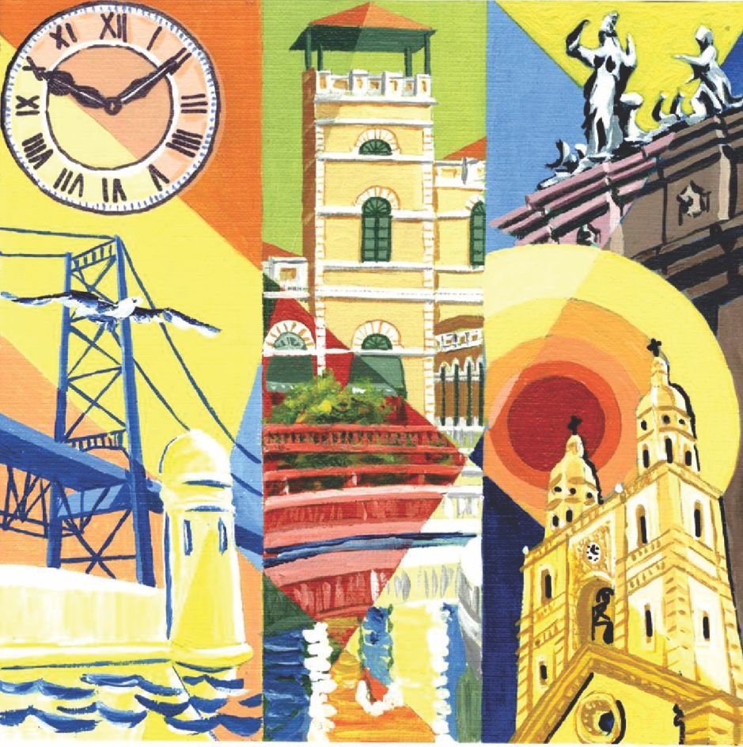
Obra: Centro Histórico (Florianópolis Século XXI). Acrílico sobre tela.
Também o dedico às famílias dos colonizadores, empreendedores e dos profissionais que ajudaram com muita luta, esforço e empenho a construir e desenvolver o progresso, preservar a cultura e trazer a prosperidade às cidades de Florianópolis e São José.
José CIPRIANO da Silva (in memoriam) / João José da Silva
Ter o privilégio, o compromisso e a responsabilidade de moldar resumidamente em apenas um livro todo o trabalho, o talento, toda a história de vida e da arte do meu pai, o artista plástico CIPRIANO, um manezinho de Florianópolis e de São José, não foi uma tarefa fácil, porém foi muito prazerosa. Diversas formas de emoção afloraram em meu coração em todos os momentos em que me dediquei a este trabalho.
Quando ouvia meu pai, CIPRIANO, aos seus setenta e poucos anos, contar as suas histórias e passagens para a nossa família, em rodas de amigos e em suas inúmeras entrevistas, via alí a narrativa de vários trechos de uma biografia que poderia se perder no tempo de uma memória vivida e não devidamente registrada.
Senti a necessidade de ter aquelas preciosas informações em minhas mãos e formatá-las em um livro. Falei com ele a respeito disso, já que ele mesmo dizia que em nossa cidade a memória das pessoas era apagada como o passar de uma borracha e elas ficavam na pobreza do esquecimento.
Pedi para ele pensar sobre isso e começar a rascunhar algo sobre sua vida. Apesar de relutar no início, com sua humildade, dizendo que iria pensar no assunto, continuei insistindo e, vez por outra, perguntava-lhe se havia feito algo.
Durante toda a sua carreira artística tivemos centenas de reuniões de trabalho, e na que seria a última delas, em 27 de abril de 2017, dia anterior ao seu falecimento, colocamos a sua autobiografia definitivamente em pauta.
Não posso descrever aqui em palavras o que significou e causou para mim a tristeza e o vazio da perda do meu parceiro de trabalho, professor, companheiro no esporte, nas artes e na música – meu fiel confidente e verdadeiro amigo, meu pai CIPRIANO. Porém, além dos inúmeros momentos e das ótimas recordações vividas, uma lembrança ficou muito viva em mim em forma de compromisso: a última pauta de trabalho definida por nós dois, a sua autobiografia.
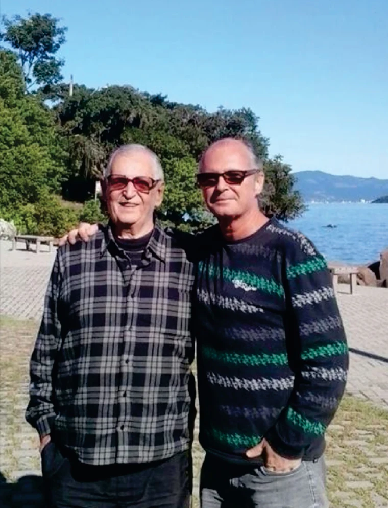
CIPRIANO e seu filho João José, na Ponta do Sambaqui, onde aproveitavam para curtir a natureza e colocar as conversas em dia, num descontraído ‘papo-cabeça’.
Aos poucos fui reunindo e organizando seus arquivos pessoais, fotos, rascunhos, selecionei as principais obras e tudo que se relacionava à sua vida e ao seu trabalho. Algo dentro de mim sabia que em algum lugar eu encontraria o rascunho de sua história, que eu havia sempre lhe pedido. Pois sem isso, como fazer um livro autobiográfico?
Em seus últimos anos, sempre buscando aprender cada vez mais, meu pai já estava familiarizado com a informática, e certo dia, em seu computador pessoal, que agora está comigo, encontrei um arquivo de texto nomeado “Minha Vida”, datado de 21 de março de 2012. A princípio não imaginei o que poderia estar contido nele, mas ao abrí-lo, aí sim, a bela surpresa, ali estavam registradas suas memórias, digitadas por suas próprias mãos.
Quando comecei a ler o conteúdo senti uma emoção que nunca havia vivido, que se confundia entre um sentimento de saudade e a alegria de estar em minhas mãos o que daria o impulso que faltava e um significado para o início do compromisso assumido em vida com meu pai.
Alguns dias depois acabei encontrando o caderno com o manuscrito rascunhado desse texto, com algumas informações adicionais e onde no final estava escrito: ‘‘Agora é com você, João!’’ Emoção? Sim, porém mista com gratidão pela grande responsabilidade atribuída a minha pessoa.
Para fazer este trabalho na forma de uma autobiografia, mantive a conjugação na primeira pessoa em todos os fatos descritos por ele, apesar de ter corrigido, pesquisado e acrescentado mais detalhes e várias outras informações pertinentes ao escrito original. Além disso, escrevi as legendas das obras e das fotos, as quais, algumas, propositadamente, deixei em seu estado original, sem tratamento digital.
Mas, como sempre em todos os textos que fazíamos juntos para nossos trabalhos, que eram revisados por ele e por mim no final, senti-me à vontade, e com o constante sentimento de sua presença, como se me guiasse em todas as palavras, entrelinhas, na ordenação cronólogica dos fatos e, por fim, estabelecendo e nomeando os capítulos desse trabalho, fi-lo como se estivesse com ele ao meu lado.
Para mim é gratificante como filho, e fascinante como admirador do talento do meu querido pai, poder entregar a vocês o registro de uma pequena mostra de uma grande bagagem das memórias do artista plástico CIPRIANO, que emolduram as páginas deste livro, com sua história de trabalho, arte e amor por sua família, sua terra e sua gente.
Que este trabalho sirva como elemento de pesquisa e inspiração aos amantes da arte, da arquitetura, das tradições e da história de Florianópolis e de São José.
Cipriano: O Talento e o Poder da Criação Artística
Tem a assinatura do excepcional pensador e filósofo chinês Confúcio a máxima segundo a qual “uma imagem vale mais do que mil palavras”. Há mais de 2.500 anos ele estava distante das realidades atuais da comunicação e das manifestações artísticas neste começo de século XXI. Estava se referindo, claro, à força dos ideogramas na vida das pessoas.
O mundo sofreu profundas modificações, passou por múltiplas revoluções para atingir os atuais níveis numa velocidade inimaginável de intensa comunicação social pelas novas tecnologias do mundo digital. Mas o pensamento “confuciano” continua mais atual do que nunca, como provam a todo momento as redes sociais da Internet.
No campo artístico, um talentoso descendente açoriano produziu, com rara sensibilidade, singular criatividade, muito trabalho e muita paixão, um legado extraordinário a comprovar o poder da imagem.
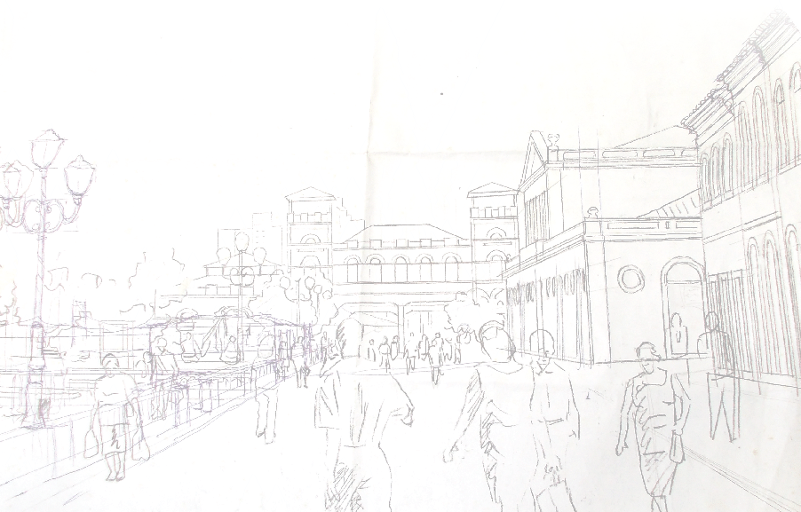
Estudo: Mercado Público Municipal e Prédio da Alfândega. Lápis sobre papel manteiga.
Quem desejar nas próximas gerações conhecer a história da arquitetura, as paisagens, o estilo de vida, os personagens e a história de Florianópolis e de São José, da colonização portuguesa no litoral de Santa Catarina, terá nas encantadoras pinturas de José CIPRIANO da Silva uma coleção com resgate inconfundível.
Seu traço admirável transmite uma agradável sensação de realismo em todas as obras. Tem-se, muitas vezes, a impressão de estar diante daquelas igrejas, casas coloniais, espaços públicos, enfim, o que sua mente privilegiada captou e suas mãos generosamente colocaram na tela.
Como feliz proprietário de várias telas do grande artista, deparo-me com alguma freqüência com aquelas paisagens maravilhosas e com elas viajo no tempo numa Florianópolis que não existe mais e numa São José que deixa também muitas saudades. Não me canso de homenageá-lo, com saudades, nestes momentos de deleite cultural, especialmente, quando o olhar concentra-se na antiga Igreja São Luiz – Paróquia de Nossa Senhora de Lourdes, no bairro Agronômica, onde fui batizado, crismado, fiz a primeira comunhão e colaborei como coroinha durante mais de 15 anos.
Minha admiração pelo Cipriano antecede o conhecimento de sua obra artística. Vem dos projetos de edifícios que elaborou para a A. Gonzaga, pioneira construtora de Florianópolis, que ele honrou como colaborador de qualidade. Amigo de meu saudoso pai Manoel, o honrado Admar Gonzaga, fundador e dono da empresa, orgulhava-se em exibir os folhetos e projetos de Cipriano.
Vieram depois as exposições, a compra de suas telas para presentear amigos que vivem no exterior, as longas conversas em seu atelier, a presença em várias de suas mostras na Grande Florianópolis.
O livro memorial digital que o filho João José da Silva está editando representa mais do que justa homenagem a um dos mais premiados, apreciados e queridos entre os artistas de Santa Catarina. Significa oferecer a um batalhão de amigos e admiradores um relato sincero, com depoimento detalhado, sobre passagens de sua vida, que se confundem com sua vitoriosa trajetória e com a própria história de Florianópolis e São José.
Traz o estilo simples do personagem, numa autobiografia recheada de saborosas narrativas. É um merecido tributo a quem passou a vida dedicado ao trabalho, à família, a fazer o bem e a propagar o valor das artes em todo o Estado.
Na obra “São José – Uma Cidade Imperial”, Cipriano me conferiu o privilégio de pequeno texto. Escrevi então:
“O talento do artista revelado pela sua arte; que enche os olhos, aquece o coração e enriquece o espírito. Mente que cria, mãos que executam. A obra que nasce. Bela, vistosa, admirável, exuberante.”
Moacir Pereira - Colunista da NSC, Membro da Academia Catarinense de Letras
Quando fui solicitado pelo artista plástico João José da Silva para prefaciar a presente obra que busca memorizar, no tempo e nos espaços, numa autobiografia do seu pai, o celebre artista plástico e cultor de nossa cultura, tanto da eclética quanto da popular, José CIPRIANO da Silva, parte dela por ele escrita num pequeno espaço temporal antes de falecer, fiquei embaraçado e tive que primeiro ler a obra e meditar muito para depois me pronunciar se aceitava a honrosa e corajosa empreitada.
Não é fácil falar e escrever sobre a vida e obra de Cipriano. Mais difícil ainda oferecer um preâmbulo sintético da sua autobiografia. Contudo, fui me encorajando ao perceber que não teria me passado pela memória o quanto tivemos em comum durante nos caminhos que a providência divina nos ofereceu. Quem estiver lendo esta obra procure me incluir dentro dela face as coincidências vivenciais e profissionais que nos aproximaram.
Conhecia de longa data o saudoso mestre dos fazeres Cipriano, mas não imaginava que tivesse tido constantemente, no desenrolar de sua brilhante carreira de profissional, artista, pai e educador do seu porte, tanta aproximação física, ideológica e cultural com ele.
Lendo e meditando sobre seus registros biográficos fico ainda mais admirado pelo valor ético, moral, profissional, familiar e artístico dessa magistral personalidade banhada e alimentada por uma atmosfera de insularidade e fortificada por uma gênese açórita. Qualidades essas que os casais açorianos aqui aportados após 1748 incutiram em nossa região como uma sociedade que Cipriano honra, enaltece, preserva e cultua. É uma cultura agora já famosa, singular e bicentenária a qual pode ser batizada com a definição açórico catarinense a qual ele representa e a memoriza por suas obras.
Quem se propõe a ler, com vagar e profundidade, deverá confirmar o que digo nessas primeiras linhas sobre a majestade “Ciprianista”!
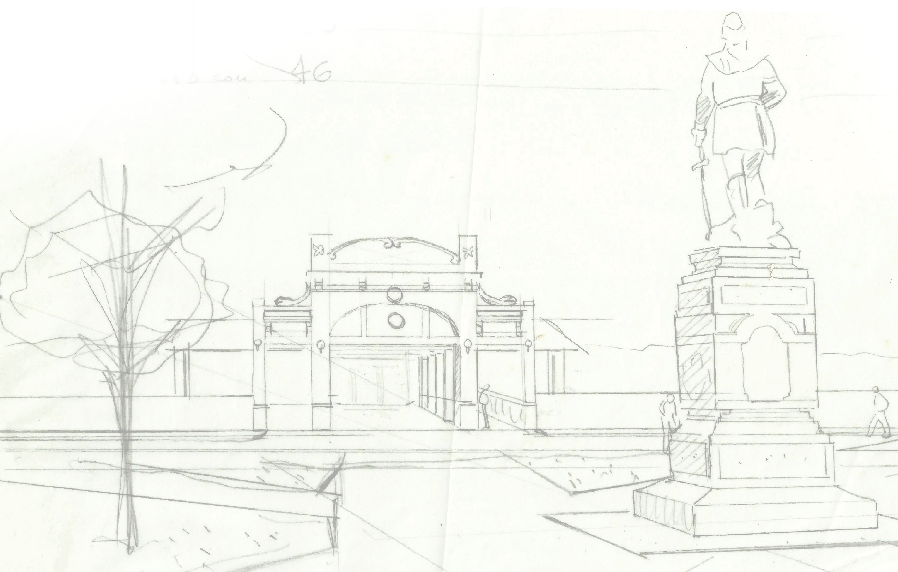
Estudo: Trapiche Municipal de Florianópolis (anos 30). Lápis sobre papel manteiga.
A obra se desenvolve seguindo uma correta cronologia de tempo, espaços e realizações e escrita com esplendoroso critério e com fabulosas revelações que o leitor não pode, e nem deve interrompê-la, buscando visualizá-la de uma só vez e repeti-la tantas vezes quando confirmar do que seja um viver útil à sua sociedade e, principalmente à sua família, sua esposa e filhos.
No excelente conteúdo dessa autobiografia, o autor procurou ordenar suas memórias dividindo-as em importantes e significativas etapas de sua vida, não podendo ficar ausente o relembrar de suas obras sobre retratos do patrimônio histórico e cultural de Florianópolis – que se constitui num topônimo à consagrar: é um Hiper-Realismo, face a perfeição de seus pincéis e aquarelas.
Reafirmo que quem se der ao sabor de lê-la, deverá confirmar que se sentirá diante de um verdadeiro “mestre” na representação pictórica da memória patrimonial, tanto da edificada como a imaterial, que consagram o orgulho "manezês" e desterrense.
Muito obrigado caro amigo João José da Silva pelo presente que me concedeu de poder escrever este sintético prefácio aplicado na autobiografia de seu pai, uma vida que engrandece nosso povo e nosso mundo artístico e profissional de vários matizes.
Professor Nereu do Vale Pereira - Historiador e fundador do Ecomuseu do Ribeirão da Ilha
Agradeço ao meu pai José CIPRIANO da Silva (in memoriam) que, com seu empenho como profissional e ser humano, deixou-nos um belo exemplo de vida com seu trabalho como artista plástico, seu caráter exemplar, honestidade, sua determinação e paixão em alcançar seus objetivos, sua humildade, dignidade e uma grande lição, sempre reforçada com suas palavras: “Procurem dar sempre o melhor de si em qualquer coisa que tenhamos que fazer em nossa vida”.
À minha amada família, minha mãe Maria Clara da Silva e aos meus irmãos Carlinhos, Zezinho e Armando, agradeço por todo apoio recebido e pela confiança que depositaram em meu profissionalismo e na minha dedicação a esse trabalho.
Aos meus especiais amigos que me apoiaram durante essa jornada, dando a atenção e o impulso tão necessário à minha pessoa para a consolidação do meu trabalho profissional para com esta obra, cito:
Valda Isidora da Silva Flores (in memoriam), Moacir Pereira, Nereu do Valle Pereira, Alfredo Martins, Dona Pochi e Maurício Ganzo Pereira, Laureci Coelho Sobierajski, José Sobierajski, Adriana Sobierajski, Eder Daniel Corvalão, Maria Clarice Correia, Nelson Luiz de Miranda Correia, Abigail Santiago Cardoso Correia, Luciano Cabral, Adriana da Costa Maya, Euclídia Cunha Cachoeira Dalsasso, Onildo Borba, Salete Oliveira, Valério Benjamim de Oliveira, Renato Rita, Djalma Souto, Luiz Augusto Gonzaga, Aloisio Lankoski e Edvarde Silveira (in memoriam).
Agradeço também aos profissionais com quem tive o privilégio de trabalhar: José Cipriano Filho, Denise Ouriques Medeiros, Ana Cristina Rodrigues, Saul Oliveira Filho — uma formidável e talentosa equipe que, unindo sua competência aos meus objetivos, não mediu esforços para com a qualidade na realização deste livro, agora transformado em Memorial Digital.
Aos amigos, familiares e a todos os profissionais que, de alguma forma, contribuíram para a trajetória de sucesso do artista plástico CIPRIANO — e também para que essa obra fosse publicada, deixo aqui o meu sincero muito obrigado.
Nasci em 22 de outubro de 1935 no município de São José e me considero um manezinho josefense de coração, agraciado com esta denominação pelo meu grande amigo, já falecido, Aldírio Simões.
Minha “história de vida”, onde começam minhas lembranças, inicia aos meus cinco anos de idade em 1940 em São José da Terra Firme, bem pertinho do seu centro histórico. Conta minha irmã Valda que meu parto foi em nossa residência, um casarão grande do século XVIII dos Filomenos, família tradicional e muito importante naquela época, localizada na Estrada Geral da Praia Comprida, duas casas antes da Igreja da Santa Filomena, ao lado da casa do comerciante Sr. Neném, e quase defronte ao Mercado Público de São José. Nesta casa tipo chalé, com uma janela e duas portas grandes na frente, funcionava o comércio do meu pai, a Padaria União. Ela ficava situada num terreno bem grande, tanto de frente como de fundos, e existia um rio que dividia o terreno transversalmente, onde meus irmãos Zinder e Thiago pescavam traíras e carás, peixes de água doce.
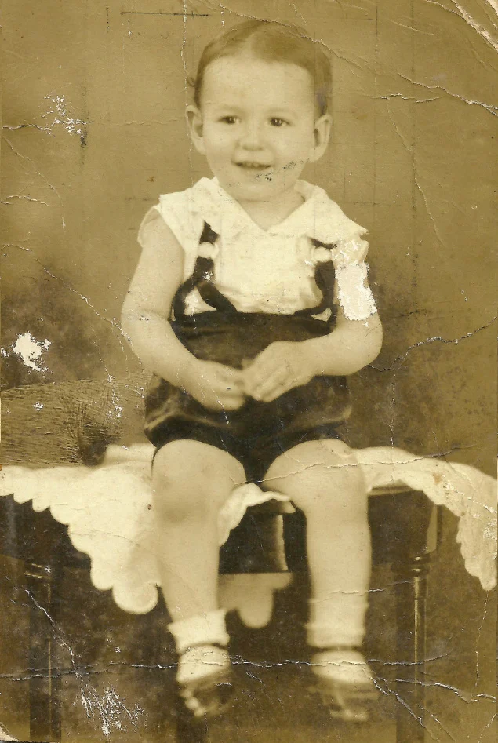
O artista com 10 meses de idade (foto de 1936).
Meu pai ou “Sêo Zeca”, como era mais conhecido, foi um próspero comerciante que possuía várias carroças, cavalos, gado e bastantes aves. Além disso ele tinha também duas casas, que na época estavam alugadas. Lembro muito vagamente do entra e sai dele em sua padaria, do cheirinho das massas e dos pães que eram feitos especialmente para os pagadores de promessas na Festa do Divino, em forma de pés, de orelhas, de olhos, de mãos etc., e lembro com muita saudade de minha mãe Izidora, sempre elegante e muito bonita.
Minha família era constituída assim: meus pais José João da Silva e minha mãe Isidora Georgina da Silva e seus filhos, em ordem cronológica: Diná, Zinder, Valda, Thiago, eu (José Cipriano), Euni e o Luiz Alves, o popular “Culica”.
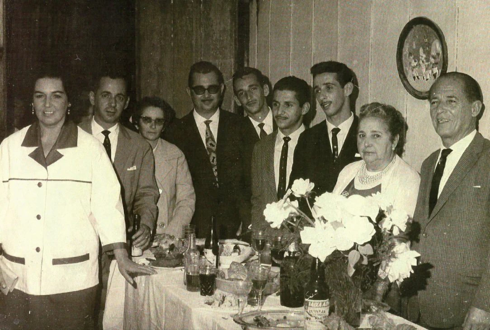
Os irmãos Diná, Zinder, Valda, Thiago, CIPRIANO, Euni, Luiz Alves e seus pais Isidora e José João na festa de casamento do seu filho ‘‘Culica’’ - Luiz Alves.
Minha infância foi igual à de qualquer criança. Gostava de andar descalço e de calças curtas, acreditava em Papai Noel e no Coelhinho da Páscoa. Tinha medo do Boi de Mamão, do Bicho Papão e do quarto escuro. Com meus irmãos e amiguinhos brincava de bolinha de gude, bilboquê, corrida, jogo de botão, taco, troca de figurinhas e, óbvio, jogávamos futebol. Também gostava de fazer brinquedos: lembro que nos carrinhos que fazia, usava laranjas para fazer as rodas, isto aos meus cinco anos de idade.
Além do que já citei do meu pai, ele também era sempre lembrado para assumir cargos importantes em São José: foi o primeiro tesoureiro do Ipiranga F.C. em 1937, foi festeiro em 1940 na Festa do Divino (nesta festa meu irmão Thiago foi o imperador junto com nossa prima Mariozima), foi também inspetor escolar e chegou a ser convidado a ser candidato a prefeito de São José. Já nos últimos anos de sua vida acabou se revelando como escritor incentivado por seu neto – o professor José Zinder da Silva, lançando dois livros de poesias: “O Homem que Surgiu” e “Álbum do Meu Talento”.
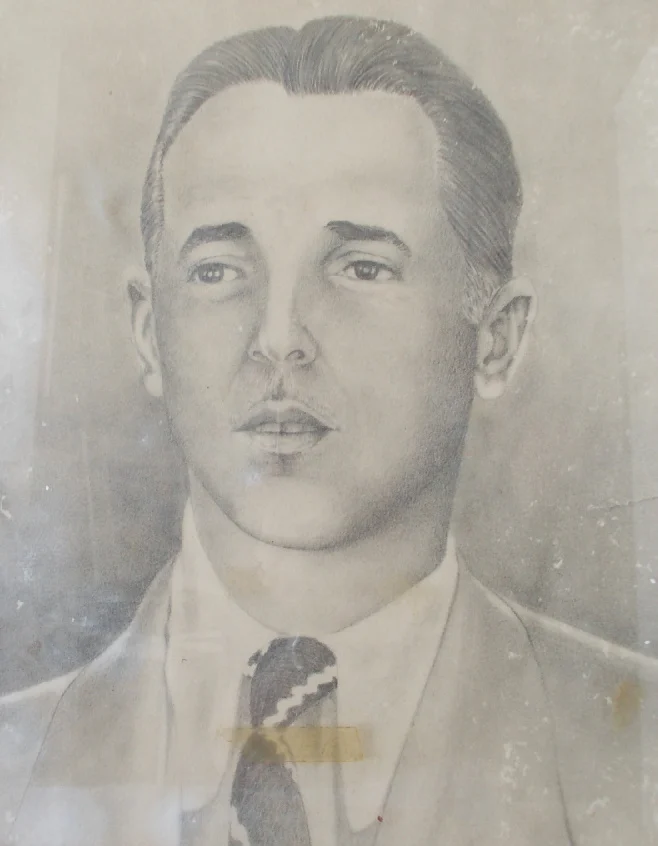
Retrato feito por CIPRIANO de seu pai José João da Silva. Lápis 2B sobre papel aquarela.
Sempre pensei que depois de São José iríamos morar na Base Aérea de Florianópolis, mas na verdade fomos morar num bairro chamado Coqueiros, também perto da Ilha, isto em 1941. Era um pequeno terreno com uma casa tipo chalé, que ficava perto da usina de açúcar. Nesta casa meu pai abriu uma outra padaria, já que experiência e vontade de vencer não lhe faltavam. Nesta ocasião, ele conheceu o Tenente Boanerges, que o convidou para chefiar, na Ilha, a Padaria da Base Aérea, ainda em plena Segunda Guerra Mundial, em meados de 1941. Trabalhou lá até 1945, o ano final deste grande conflito, quando veio a se desligar definitivamente deste tipo de trabalho.
Durante este período nós moramos numa pequena casa dentro dos terrenos da Base. Lembro de algumas vezes, eu, meus irmãos e alguns vizinhos irmos assistir a filmes de guerra em uma tela ao ar livre, que eram exibidos com a intenção de inflar nossos sentimentos contra o nazismo. Vivenciávamos aquilo como se estivéssemos dentro de um campo de concentração.
Muitas vezes meu pai me levava para pescar próximo à nossa casa. Sempre pegávamos alguns peixes e, como morávamos dentro da Base Aérea, um dia encontramos no caminho um militar, se não me engano ele era sargento, que fazia maquetes de aviões de todos os tipos. Como eu gostava muito de brincar com pequenos aviões que eu mesmo fazia, meu pai falou com ele a meu respeito e por meu interesse por esses veículos voadores, essa conversa acabou mexendo com ele, que me presenteou com uma linda miniatura de um caça de dois motores. Fiquei abismado com a perfeição daquele trabalho. Isto com certeza me entusiasmou ainda mais para executar meus brinquedos. Nesta época eu tinha apenas seis anos de idade e já estava interessado por “maquetes”.
Meus irmãos estudavam numa escola isolada perto da nossa casa, e eu com esta idade não poderia de jeito nenhum frequentar a escola, mas de tanto insistir, meu pai conseguiu me levar. E um dia, quando voltei da aula, meu pai perguntou o que eu aprendi, aí eu respondi: – O que a professora faz eu também faço! Ele não entendeu, não acreditou no que acontecia. Palavras, frases, números, numa só aula? O que acontecia era que, o que eu via a professora fazer no quadro negro, eu copiava, ou seja, desenhava.
Em 1943, mudamo-nos para o Saco dos Limões, para uma casa na Vila Operária, perto da praça. Moramos nela até o final desse ano. Ali eu frequentava o Grupo Getúlio Vargas e minha primeira professora foi a Dona Luiza, uma senhora muito bonita, simpática e que adorava a sua profissão, na qual atuava com muito empenho e satisfação. Muitas vezes, para incentivar os alunos, trazia frutas e lanches comprados com seu próprio dinheiro, que eram dados como prêmios àqueles que acertassem às questões dos exercícios praticados.
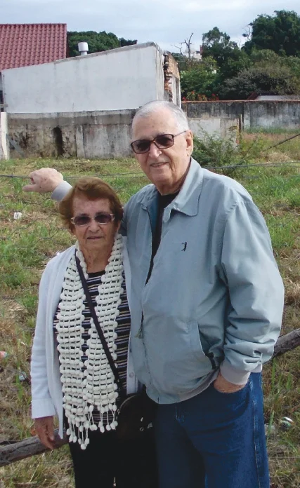
Foto de 2016 - Valda com seu irmão CIPRIANO numa visita especial a São José onde relembraram algumas das memórias de suas infâncias registradas neste livro.
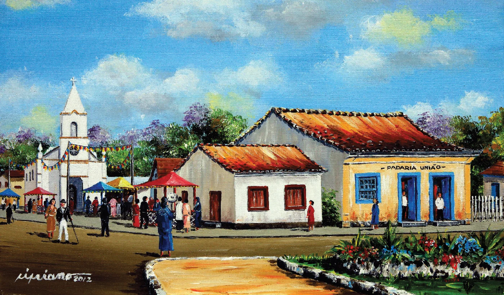
Obra: Igreja de Santa Filomena e Padaria União (Praia Comprida - São José). Retrato falado
baseado na descrição contada por sua irmã Valda. Acrílico sobre tela.
Lembro também do primeiro dia de aula, quando ela entregou uma tesoura e uma página de revista para que pudéssemos fazer colagens com as imagens. Enquanto ela distribuía aos alunos este material, eu, muito metido, resolvi começar imediatamente e acelerar meu trabalho. Quando Dona Luiza voltou e viu o meu trabalho pronto não acreditou e pediu para eu repetir, prontamente fiz um outro com a maior facilidade. Foi quando ela reparou em mim um talento artístico e resolveu falar com meus pais para me incentivarem nesta aptidão.
Outro dia, numa manhã bonita e ensolarada, estava a brincar no quintal ao lado da parede lateral da casa onde morava. Neste momento veio-me uma vontade louca de desenhar: logo peguei um pedaço de carvão que estava no chão e não contei tempo. Botei pra quebrar! Meus super heróis favoritos foram direto para aquela parede: Capitão Marvel, o Zorro e seu amigo Tonto, o Capitão América, Batman e outros personagens de histórias em quadrinhos. O mais estranho para mim, naquele momento, é que nunca tinha feito nenhum desenho desse tipo antes. Claro, meus irmãos mais velhos pagaram o pato, pois, por mais que eu afirmasse a autoria do “estrago”, meu pai não acreditou. Daí em diante, qualquer papel que estivesse ao meu alcance virava um brinquedo, e eu já começava a desenhar. O prazer da inspiração se tornou uma coisa instigante.
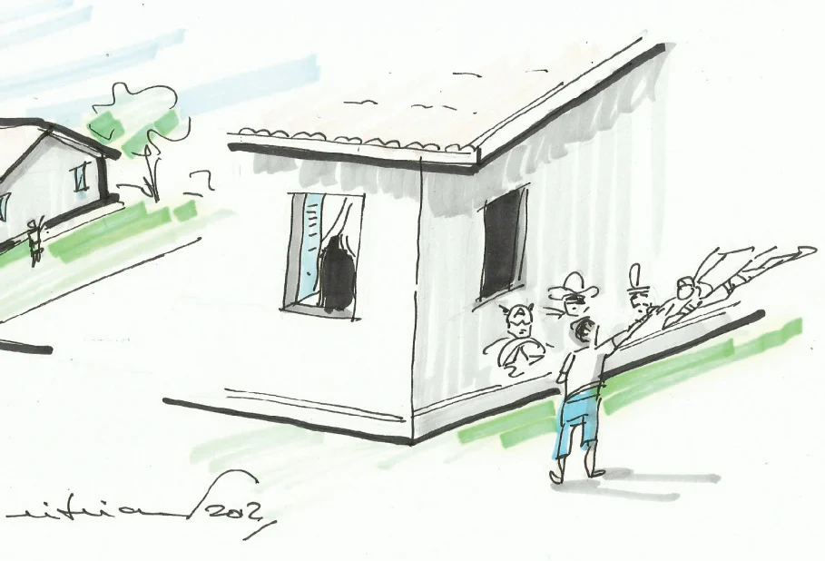
Desenho: Cipriano criança. Lápis e canetas hidrocor sobre papel sulfite.
Em 1944, viemos morar nas cercanias do antigo rio Carreirão, perto da rua Bocaiúva, hoje Travessa Carreirão, numa casa antiga. Para chegar lá, tínhamos que passar por um caminho bem estreito. A casa ficava perto da praia, onde hoje é a avenida Beira Mar Norte. Moramos nesta casa durante pouco tempo, até meu pai comprar uma outra, na antiga rua Jaguaruna, 37, hoje rua Monsenhor Topp, 183, que pertencia à família da Sra. Clara Flores, mãe do meu cunhado Valdir, marido da minha irmã Valda, que mora lá até hoje. Casa pequena de chão batido, com fogão à lenha e com um belo terreno cheio de árvores frutíferas. No dia em que fomos fazer uma limpeza no local, a minha irmã Valda, como sempre, foi quem preparou o nosso almoço. Neste dia estavam eu, o Thiago, o Euni e o Culica. Lembro ainda hoje do sabor daquela carne seca bem gorda assada na brasa, acompanhada com um belo pirão d'água feito num grande alguidar de barro onde nos servimos: foi uma beleza!
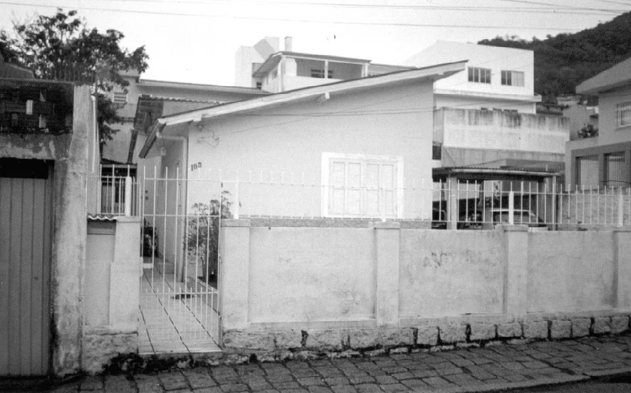
Antiga casa da família Silva na antiga rua Jaguaruna nº 37, hoje rua Monsenhor Topp, 183. A edificação não existe mais.
Meu pai, na época ainda desempregado, resolveu construir um forno à lenha para fabricação de broas, suspiros, rosquinhas de polvilho e outros itens que eu e meus irmãos, nas horas de folga dos estudos, entregávamos nos armazéns, nos verdureiros e em outros comércios. Só a partir daí que sobrava um pouco de tempo para nossas brincadeiras de guri pequeno.
Na época eu estudava no Escola Básica Silveira de Souza, bem pertinho de nossa casa na rua Alves de Brito. Neste colégio, tinha um garoto que desenhava muito bem, e isso me fascinava. Eram motos, jipes e outros veículos de guerra, acho que ele tinha assistido muitos filmes sobre o assunto, e se não me engano ele se chamava “Rister”.
Um dos “acontecimentos” que lembro bem nesse colégio foi quando recebemos a visita de um paraplégico sem os dois braços que nos mostrou o quanto ele era feliz fazendo com os seus pés tudo o que se pode fazer com as mãos, inclusive desenhar e pintar. Foi uma bela lição de humildade, perseverança, força, determinação, exemplo de vida e alegria de viver. Isso marcou meu coração de criança para sempre.
No Dia da Árvore eu e os demais alunos plantamos no meio do pátio um “Pau Brasil”, árvore que deu origem ao nome do nosso querido país. Nossos pais foram convidados para o tal evento e alguns até depositaram moedas no local do cultivo antes de colocarmos a muda da planta. Completei o estudo primário neste colégio, nunca deixando de fazer meus brinquedos e meus desenhos.
Também fiz muitas pandorgas, muitos arcos com flecha, muitos balões e até uma máquina de projetar filmes montada a partir de uma caixa de madeira de armazenar sabão. Tais filmes do “cineminha” eram feitos em tirinhas de papel banha (manteiga ou vegetal), desenhados com tinta nanquim, coloridos com canetinhas hidrocor e depois eram projetados na parede da sala de nossa casa, transformando-a em um verdadeiro cinema. Meu irmão Thiago fazia os roteiros baseados nos seriados do Zorro, do Cobra e outros super-heróis que eram exibidos no Cine Roxy, que ficava ao lado da Catedral Metropolitana, na rua Padre Miguelinho. Enchia de ‘‘guri pequeno’’, meu pai ficava “louco”. Lembro-me também que brincávamos de fazer ao vivo o seriado do Zorro. Nessa fase também fazíamos gibis, que na época eram alugados ou, muitas das vezes, trocados por alguns lanches.
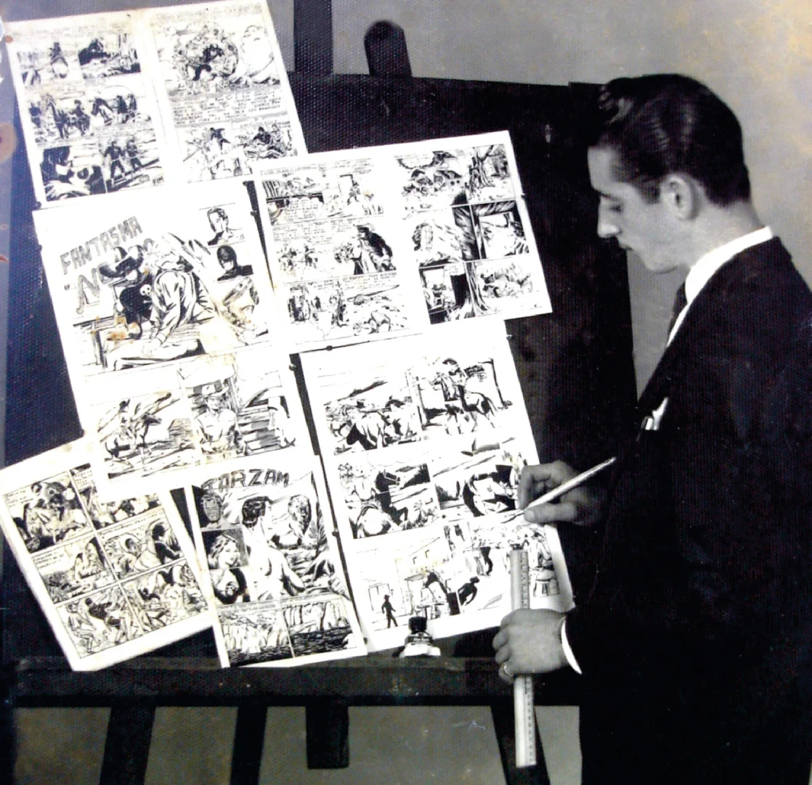
CIPRIANO posando para uma foto desenhando suas páginas de histórias em quadrinhos feitas com tinta nanquim sobre cartolina.
Aos poucos fomos conhecendo melhor nossa cidade, principalmente as suas diversões e seus cinemas como o Cine Imperial, na rua João Pinto, o Cine Ritz, na rua Arciprestes Paiva, o já citado Cine Roxy e o Cine Odeon que ficava junto ao Teatro Álvaro de Carvalho. No Cine Ritz tinha a tradicional Sessão das Moças, nos Cines Imperial e no Roxy passavam os seriados do Zorro, do Batman, do Mascarado e os filmes do Roy Rogers.
Muitas vezes, quando sobravam uns trocadinhos no final da sessão, íamos à sorveteria do Barão para tomar aquele “beijo frio”, depois o caminho nos levava ao saudoso Miramar, onde a gente tomava aquela Coca-Cola bem geladinha em garrafa de vidro cheia de gomos. Ali, jogávamos umas moedinhas ao mar só para ver algumas pessoas mergulharem para buscá-las e, ao entardecer, assistíamos aquela seresta muito bem tocada e cantada por músicos de grande talento, como meu cunhado Osmar Silva (marido da minha irmã Diná), o Casinho, o Pinheiro e tantos outros. Era uma maravilha!
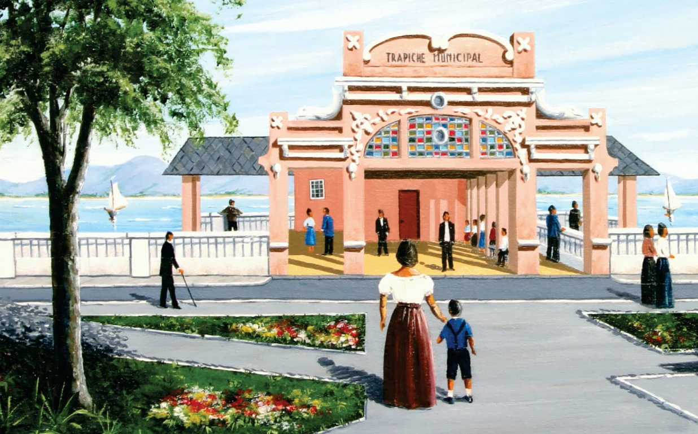
Detalhe da obra: Antigo Trapiche Municipal – Miramar (anos 30). Acrílico sobre tela.
Apesar da padaria do meu pai estar dando certo, e por mais que trabalhássemos muito, nossa família estava muito grande, pois ainda moravam conosco nossa avó, meu irmão Zinder e a Diná, os dois já casados. Ao todo eram 12 adultos e o dinheiro já não era suficiente, pois todos éramos dependentes apenas dos negócios do meu pai.
Então tive a idéia de falar com o meu padrinho Izidro Pedro Coelho, proprietário do antigo Bar São Pedro, no Largo da Alfândega, onde ficava o ponto de ônibus do Estreito. A quantidade que ele vendia lá de caldo de cana e cocadas feitas pela minha madrinha não era brincadeira.
Chegando lá, de cara, minha madrinha me perguntou o que eu queria com o meu padrinho... e eu, apesar de ainda gaguejar quando nervoso e muito envergonhado, consegui falar sobre o assunto de que se tratava minha visita, ela gostou e disse: – Vou chamar teu padrinho. Quando ele chegou, eu, ainda encabulado, falei tudo o que queria. Ele me escutou muito tranqüilo e com atenção. Ficou contente por seu afilhado com pouco mais de 12 anos ter tomado uma iniciativa tão segura e nobre para ajudar sua família. Por fim, pediu que eu falasse ao meu pai para vir conversar com ele. Fiquei surpreso com sua presteza.
Contei para meus pais o que tinha ocorrido e eles ficaram curiosos com meu gesto e com o assunto que me levou até lá. No dia seguinte meu pai foi falar com o Sr. Izidro. Não sabia ele, e para sua surpresa, que meu padrinho havia comprado um restaurante no vão central do Mercado Público chamado Restaurante Brasil e que lhe entregaria as chaves para ele tomar conta e administrar. Minha idéia era expandir os negócios da família e foi por isso que eu fiz o tal pedido.
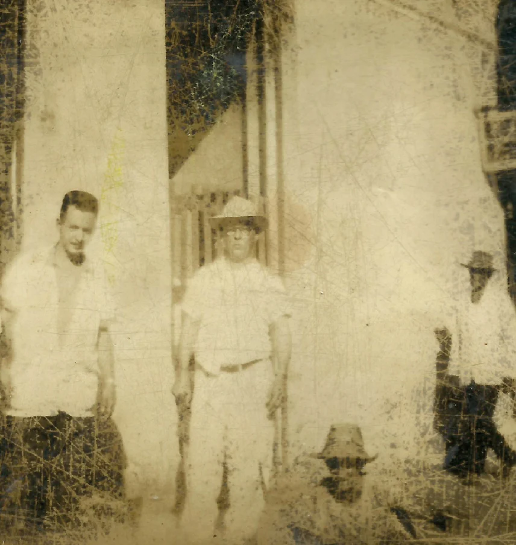
O irmão de CIPRIANO, Zinder, ao lado de seu pai José João da Silva, o “Sêo Zeca”, no Mercado Público Municipal.
Deste dia em diante nossas vidas começaram a mudar, abríamos o restaurante às 5 horas da manhã para atender os primeiros feirantes que abasteciam o comércio local, e fechávamos às 22 horas todos os dias. Lembro que, quando íamos abrir o restaurante pela manhã, ao passar perto da Figueira da Praça XV, era impressionante o cheirinho da maresia e do barulho das ondas batendo na balaustrada do Miramar. Como era legal o centro de nossa cidade... pertinho do mar.
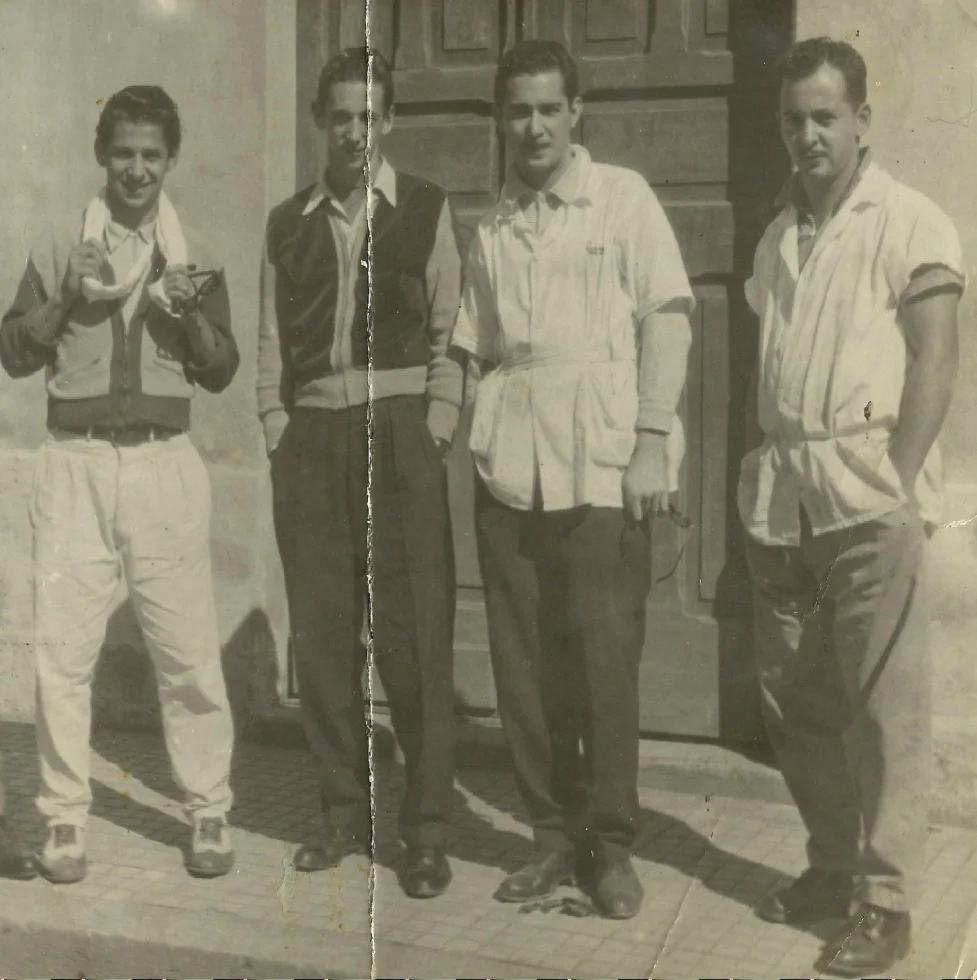
Os irmãos Euni, CIPRIANO, Thiago e Zinder na frente do Restaurante Brasil.
Nesse mesmo período chegou um circo, que se instalou onde hoje é a Praça da Bandeira. Seus artistas tomavam seu café da manhã e almoçavam em nosso restaurante. Foi aí, desenhando essa família circense, que eu comecei a fazer meus primeiros desenhos ao vivo. Alguns ficavam muito parecidos com as pessoas que eu escolhia para desenhar e elas gostavam muito.
E foi ali mesmo, no Mercado Público Municipal, sem a menor intenção, que foram dados os primeiros passos despretensiosos de minha carreira artística. Acho que influenciado por um retrato de uma criança muito linda, desenho maravilhoso feito pela minha irmã Valda que, em paralelo aos meus estudos, também comecei um cursinho de desenho por correspondência, onde aprendi a desenhar retratos e aperfeiçoar minhas histórias em quadrinhos.
Otempo ia passando rápido e já estavam próximos os testes para ingressar na antiga Escola de Aprendizes Artífices de Santa Catarina localizada na rua Almirante Alvim, que passou a se chamar Liceu Industrial de Santa Catarina, mudando o nome em 1942 para Escola Industrial de Florianópolis. Permaneceu com essa denominação até 1965, quando se tornou Escola Industrial Federal de Santa Catarina, já na avenida Mauro Ramos (desde 1962) e integrada à estrutura federal de educação. Em 1968 recebeu o nome de Escola Técnica Federal de Santa Catarina. Bem mais à frente no tempo (2002), tornou-se o CEFET/SC (Centro Federal de Educação Tecnológica de Santa Catarina), já com opções de ensino médio e superior, abrindo caminho para em 2008 se transformar no IFSC (Instituto Federal de Educação, Ciência e Tecnologia de Santa Catarina).
Nesta época eu já estava com 13 anos. Passei um sufoco nas provas, mas consegui ser aprovado. As aulas começavam às 7 horas da manhã e terminavam às 5 da tarde, durante este período eram servidos lanche e almoço. Quase que diariamente, às 7 horas da manhã, com qualquer tempo, sol ou chuva, tínhamos educação física muito puxada, tipo “militar”.
Na primeira fase eram feitos alguns testes nas oficinas para saber em qual delas a gente mostrava maior vocação. Escolhi para isso a carpintaria civil naval, a tipografia, a fundição, a alfaiataria e a marcenaria. Isso no primeiro semestre. No segundo, por opção e já decidido, escolhi o curso de carpintaria civil naval porque oferecia o maior número de aulas de tecnologia e de desenhos técnicos.
Tive muito bom suporte nesta escola, pois neste curso tinha como meus mestres os melhores professores de desenho técnicos e artísticos da época, como Ari Jordão, Franklin Cascaes, Moacir Benvenutti e o Nilo Dias. Só feras!
No curso aprendi a desenhar as linhas auxiliares e as definitivas usando a borracha o mínimo possível. Também aprendi a usar a régua triangular, os esquadros, a régua “T” e, por fim, desenvolver os projetos das peças que iríamos executar dentro de nossas oficinas.
Foi na carpintaria que encontrei o grande artista plástico e dedicado professor Nilo Dias e logo criamos uma empatia. Trocávamos muitas informações e muitas técnicas sobre desenhos artísticos e técnicos. Nilo Dias, além de ser um grande incentivador dos meus dotes artísticos, também era um grande professor de tecnologia. Com ele, nós, alunos, aprendemos a conhecer todo tipo de ferramentas e de qualidades de madeiras, tanto de primeira como de segunda linha. Na marcenaria também encontrei outros artistas na entalhação, como os professores Guedes e o Prazeres. Além disso, aprendemos a trabalhar com todas as máquinas da marcenaria como: tupia, torno, furadeira, galopa, as serras de fita e circular, entre tantas outras.
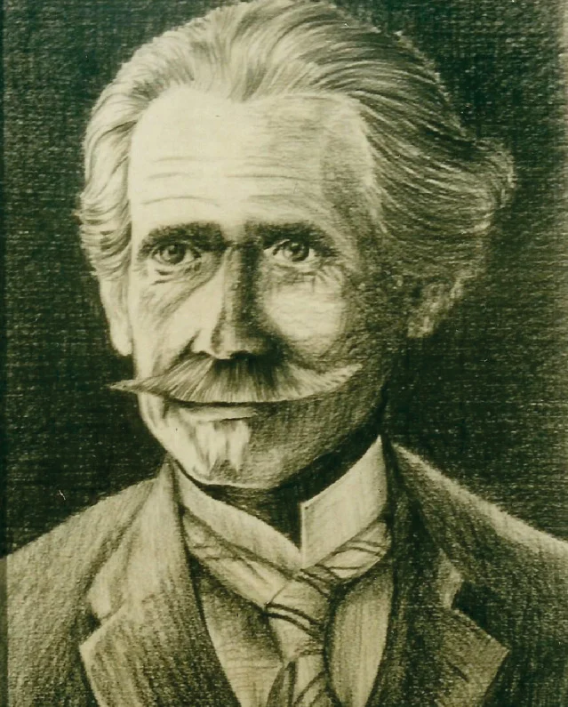
Retrato de Eduardo Dias por CIPRIANO. Lápis Crayon sobre papel telado. Nota: Os artistas plásticos Aldo Beck, Nilo Dias e Eduardo Dias foram pintores consagrados por suas pinturas de Florianópolis.
Também tive uma passagem muito interessante com o nosso saudoso artista e professor Franklin Cascaes. Em uma das aulas de desenho artístico ele me viu um pouco triste e perguntou-me o que estava acontecendo. Falei que havia feito o retrato do então presidente da república Getúlio Vargas e um dos colegas, ao ver tal desenho, fez severas críticas a este meu trabalho, dizendo que estava errado e que não estava parecido com a fotografia. Diante do meu estado apático, o professor rebateu imediatamente: – Seu moço, se não quiser receber críticas de seu trabalho, procure criar e não copiar, só assim ninguém pode fazer comparações. Guardo essa frase dele até hoje em minha lembrança e dou de bandeja a vocês.
Depois que me formei, a gente se encontrou perto de sua casa ali na Rua Júlio Moura, ele veio falar comigo e pediu que desenhasse alguns personagens de bruxas, de boitatá e outros, que ele precisaria para fazer parte de um livro que estava fazendo e que gostaria de ilustrá-lo a bico de pena. Acho que cheguei a fazer alguma coisa, só não lembro o que foi. Ele, na sua humildade e sempre pronto para nos orientar, também fazia excelentes esculturas em gesso. Lembro de um belo trabalho de sua autoria, um arabesco feito para o antigo Cine São José, na rua Padre Miguelinho.
Um fato interessante é que, nas provas finais do curso, fiquei em recuperação em matemática e os meus colegas Valmor e Loirinho, em desenho, e por coincidência eles eram muito bons em matemática e eu em desenho. Então resolvemos fazer um acordo: eu faria as provas de desenho deles e em troca eles me ensinariam matemática. Deu tudo certo e passamos de ano, e é claro: fizemos aquela festa, que para mim é inesquecível. Pegamos o carrinho de cavalos do Puskas e a grande festa começou pela Praça XV, passando pelo Mercado até chegar ao Miramar. Foi um grande “porre” de Coca-Cola. A formatura foi no Praia Clube, ali em Coqueiros, e minha namorada “Maria Clara de Miranda”, com quem pretendia casar e, graças a Deus, é hoje minha esposa (são mais de sessenta anos de convivência), foi minha madrinha. Meus pais também nos acompanharam e foi uma grande comemoração.
Passado tudo isto, no dia seguinte comecei a pensar no futuro e como continuaria os estudos, pois não tínhamos nenhuma universidade em Florianópolis – a mais próxima era em Curitiba. Então resolvir arriscar a sorte por aqui mesmo, trabalhando provisoriamente no restaurante e fazendo alguns bicos de desenhos publicitários e de histórias em quadrinhos. Coloquei uma propaganda minha no jornal “O Estado”, oferecendo meus serviços e dizendo que estava apto a fazer qualquer tipo de desenho. Lógico que apareceram alguns, mas não o suficiente para uma vida independente, onde noivar e casar eram o meu sonho.
Certo dia, na Igreja São Luiz, na Agronômica, numa festa com barraquinhas, fogos de artifícios, banda de música e tudo que uma história de amor precisa para ter seu início cinematográfico, conheci meu grande e único amor.
Na época, eu com 16 anos, estava de olho numa moça nascida em Santo Amaro e que veio com sua família para Florianópolis com apenas 2 anos. Com um belo sorriso, linda e meiga, gostava de representar em palco, jogar vôlei, dançar, cantar e se destacava como uma das melhores alunas de sua classe.
Filha de seus pais João Luiz de Miranda e Clara Hemsing de Miranda, Maria Clara, a Marichinha, ou Maricha, como é carinhosamente conhecida, era a primeira filha de mais 7 irmãos: Zilma, Nita, Nilton, Hamilton, Terezinha, Ailton e Celina. Em plena adolescência já cuidava de seus irmãos menores e de seus pais idosos, o que demonstrava uma responsabilidade muito grande para aquela pequena grande menina. Coisa rara de se ver hoje em dia.
Ali mesmo começou nosso namoro, que durou exatamente três anos. Durante este período, eu, o “Zé”, juntamente com meus colegas, todos os dias após as tocatas, visitávamos nossas namoradas, uma a uma, fazendo aquela saudosa serenata.
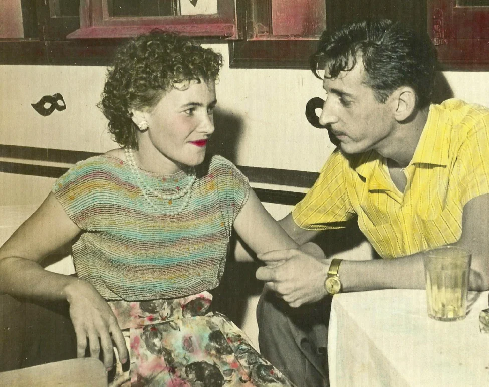
O casal José e Maricha num momento informal durante o Carnaval da Ilha.
(Foto colorizada através de pintura por CIPRIANO).
Mas aquela garotinha, a Marichinha, estava acabando com o meu coração. Ela era demais! Quando a convidei para ser minha madrinha no baile de formatura, ela chegou vestida com um belo vestido branco. Cena inesquecível para mim. Parecia uma noiva, a mais linda do mundo, alegre e feliz.
Por fim casamo-nos em 23 de abril de 1955 na Catedral Metropolitana, com uma bela celebração feita pelo Padre Bianchini.
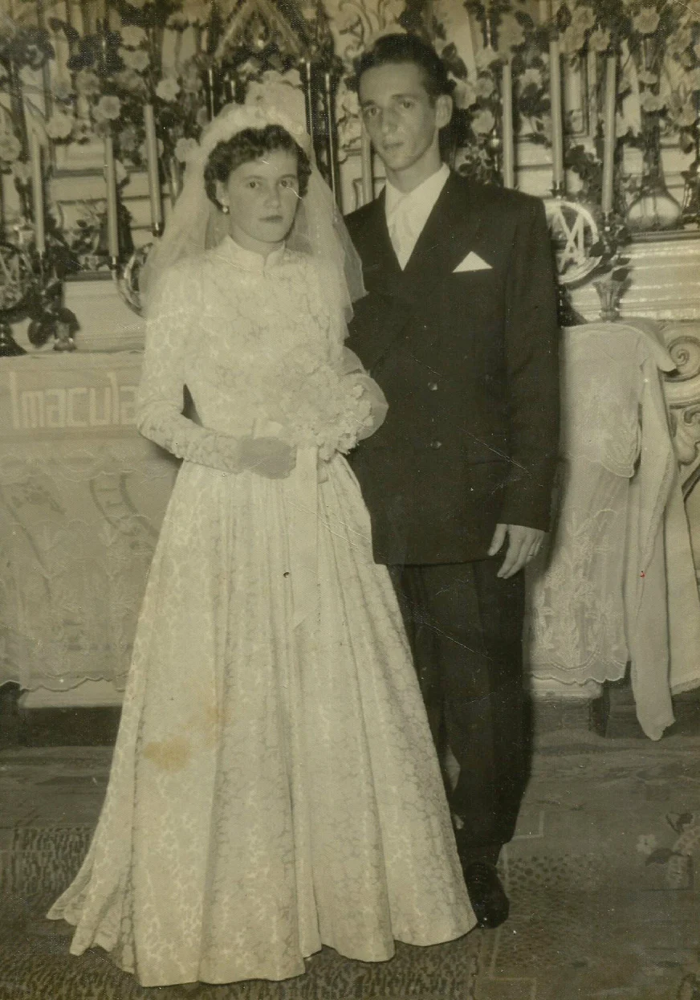
Foto oficial do casamento celebrado na Catedral Metropolitana de Florianópolis.
Já com nossa família formada e com os 4 filhos estudando em colégios particulares, nossa vida se tornou um ‘’baita’’ desafio. E com minha quase total ausência, justificada pelo grande volume de trabalhos que executava na época, ela assumiu praticamente também o papel de pai – ‘‘um pai do lar’’ –, que gerenciava uma boa economia doméstica no que adquiríamos, cuidava exemplarmente da nossa casa, e, ainda conseguiu tempo para ensinar nossos filhos a lerem e a calcular, mesmo antes de entrarem para a escola.
Além de ser uma excelente mãe, ela foi, e continua sendo, minha amada mulher e uma grande guerreira e a fiel companheira de todos os momentos.
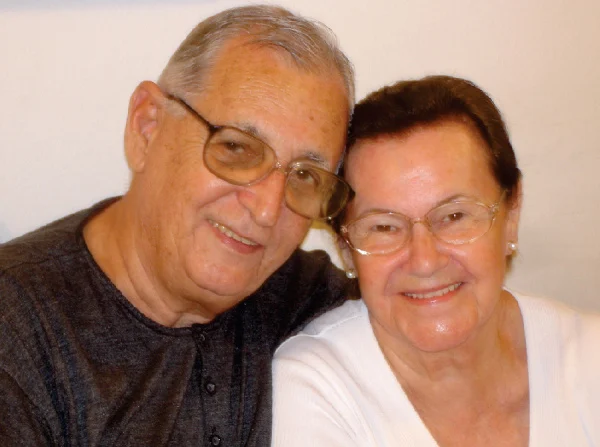
CIPRIANO e Maria Clara em jantar da Confraria Destherrense de Artistas Plásticos (CODAP) realizadem sua residência.
Lembro que a Escola Artífice também tinha uma banda de música regida pelo Maestro Roberto Kell. Seus ensaios eram diários durante o intervalo do almoço. Num certo dia, fui convidado para substituir o aluno que tocava bombardino. Acho que me saí razoável, pois fui convidado a permanecer na banda para tocar trompa. Acabei gostando e fazia questão de não faltar a nenhum dos ensaios. Acompanhei várias formaturas e procissões tocando trompa, outras vezes tocando surdo. Empolgado com a música, meu colega Valmor resolveu fazer uma banda de baile formada com os seguintes instrumentos: uma requinta, um trombone, um pistão, um pandeiro e uma bateria. Fiquei com a bateria. O nome da banda era “Ases do Luar”. Lembro que a primeira tocata que fizemos foi em Governador Celso Ramos, na festa do Divino Espírito Santo. Fomos de baleeira. Saímos do Mercado Público e acho que levamos algumas horas até nosso destino. Valeu muito à pena, pois tivemos uma recepção espetacular, com fogos de artifício, a presença da rainha e das princesas da festa, bandeiras e outras atrações. Recepção de “gente grande”, ficamos orgulhosos.
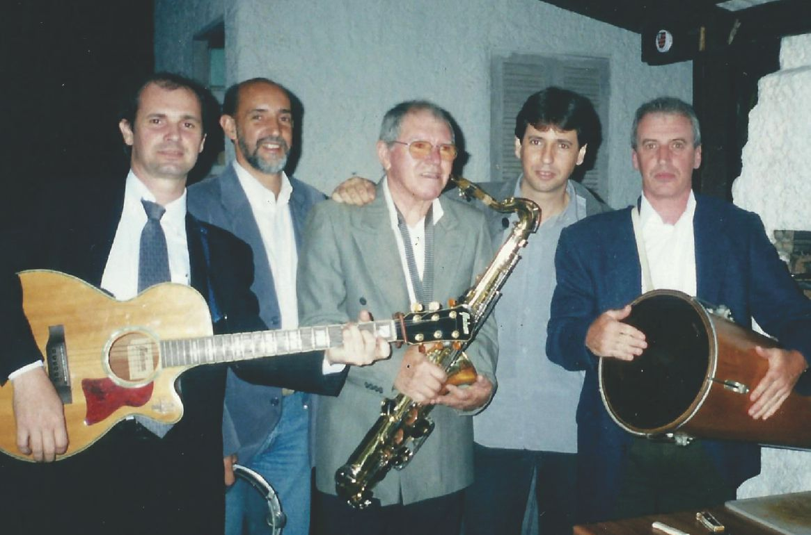
João, Zezinho, Valmor, Armando e Carlinhos durante
o ensaio no dia anterior da seresta que fizeram para Cipriano
em comemoração/homenagem ao seu aniversário de 70 anos.
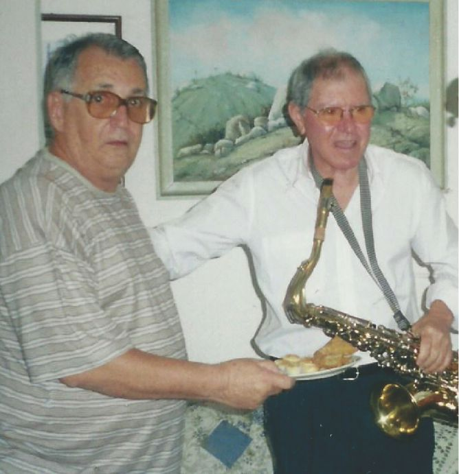
Valmor com seu saxofone, que veio de Joinville especialmente para fazer uma homenagem para CIPRIANO, seu parceiro no Conjunto
Musical ‘‘Ases do Luar’’.
Depois desta apresentação não paramos mais, eram convites e mais convites para tocarmos. Claro, éramos muito jovens, entre 16 e17 anos e, modéstia a parte, já tínhamos muitas fãs, principalmente nos clubes Democrata, 15 de Outubro, Barriga Verde, 7 de Setembro, Flamengo de Capoeiras e alguns outros. Devido ao sucesso que tínhamos alcançado, resolvemos aumentar o número de músicos da banda, passando a ter mais dois saxofones, dois trombones, dois pistões, um acordeão, uma bateria e um pandeiro. Uma verdadeira banda instrumental, pois na época não era comum haver um “cronner”, que era como se chamavam os cantores na época, e as músicas eram todas orquestradas.
Nossa última tocata deu-se no dia 19 de janeiro de 1956 no Clube Barriga Verde na avenida Hercílio Luz e, por coincidência, neste mesmo dia, na mesma avenida, na Maternidade Carlos Corrêa, nasceu o meu primeiro filho: Carlos Roberto da Silva o Carlinhos e, por obra do destino, também nesse dia tinha – assinado o meu primeiro contrato de trabalho na Prefeitura Municipal de Florianópolis, no Departamento de Obras. Esse foi o meu primeiro emprego com carteira assinada.
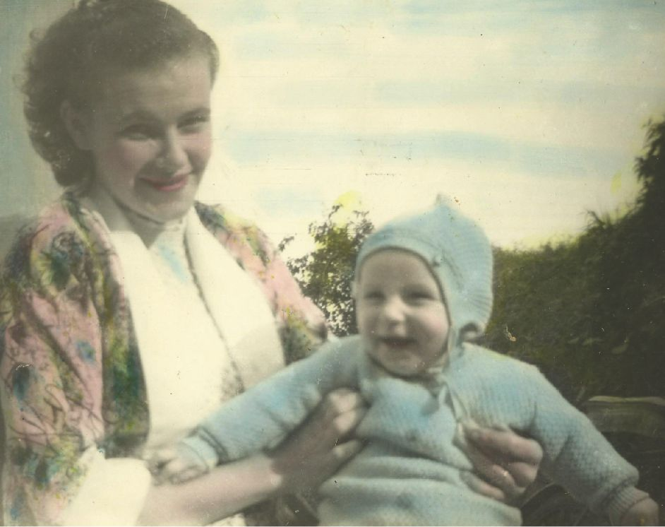
Maricha e seu primeiro filho Carlos Roberto da Silva – o ‘‘Carlinhos’’.
(Foto colorizada através de pintura por CIPRIANO).
Ainda moleque, voltando um pouco no tempo, jogava bola de mão no quintal ao lado da nossa casa, mas no futebol, puxa como eu era ruim! Era sempre o último a ser escolhido. Certo domingo, num clássico entre Avaí x Figueirense, meu cunhado Valdir levou-me para assistir a esse jogo e fiquei super- impressionado com as defesas do goleiro “Adolfinho” do Avaí e do “Mafra”, que era do Figueirense, também grande goleiro. Deste dia em diante passei a jogar no gol e, por incrível que pareça, ainda era o último a ser escolhido.
Na Escola Artífice joguei muito nos campeonatos das oficinas. Em seguida disputei um campeonato amador ali no Saco dos Limões pelo Caravana F.C., time de várzea do meu irmão Thiago, que reunia os craques aspirantes do Avaí e Figueirense. Time este muito forte e com excelentes jogadores, que logo chegaram a ser profissionais de clubes aqui da capital, entre eles destaco: Nízio, Valter, Valmor, Wanderlei, Celio, Neri, Euni, Agostinho, Alípio, Nego Ká, Nego Tainha, Nego Pô, e o Nego Quirido. Bem, nesse campeonato eu joguei como goleiro titular, e fui considerado pela imprensa como um bom jogador nessa posição. Por conta disso fui convidado a treinar no Clube Paula Ramos em troca de um simples par de chuteiras.
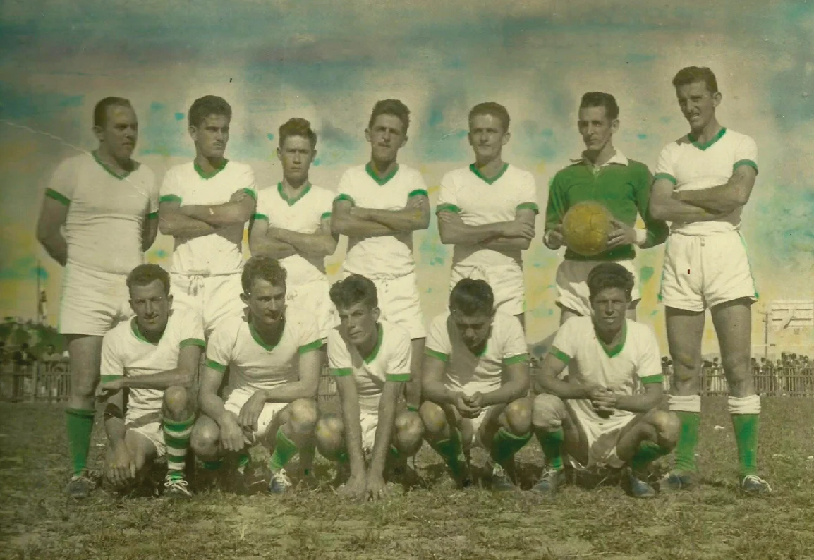
O goleiro “Zé”, como era conhecido Cipriano na época, num dos times de várzea onde atuou. Foto colorizada através de pintura por CIPRIANO.
Fiquei treinando durante algum tempo, mas nunca tive a oportunidade de entrar em campo jogando profissionalmente. Mais tarde voltei a jogar em muitas partidas amadoras de futebol suíço.
Era muito comum depois do futebol os amigos se reunirem, bem arrumadinhos, com camisa bem engomada, sapato lustrado, cabelo bem penteado com “Glostora” (marca de gel) ou vaselina e com topete bem alto, que era moda na época, e ficarmos encostados em uma das paredes na rua Felipe Schmidt, quase esquina com a Praça XV, para ver as gurias passarem e ouvir, através de um alto-falante que ficava no alto de um dos postes de iluminação ao lado da banca de revista do Sr. Beck, os comentários esportivos locais feitos por Maury Borges, Fernando Linhares, Luiz Onildo Martinelli, com a locução de Paulo Martins. A técnica de som era feita pelo meu amigo e hoje grande profissional de rádio e televisão, Roberto Alves. Recordações boas que a gente nunca esquece.
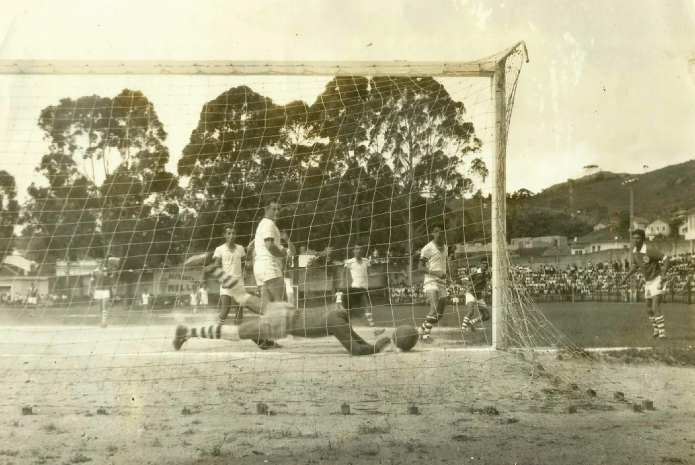
CIPRIANO fazendo uma difícil defesa num jogo no antigo Campo da Liga, depois Estádio Adolfo Konder do Avaí Futebol Clube, onde hoje fica localizado o Beiramar Shopping.
Relembrando o ano de 1953, eu mais quatro colegas fomos incentivados e convidados pelo professor Rosa para remar pelo Clube Náutico Riachuelo. Num barco quatro com patrão, treinamos e participamos de várias regatas que aconteciam atrás do Mercado Público. Nessa época o remo era um dos esportes mais fortes da cidade. Era impressionante o número de torcedores que ficavam de pé partindo do Clube Aldo Luz até o Cais Rita Maria assistindo a essas regatas.
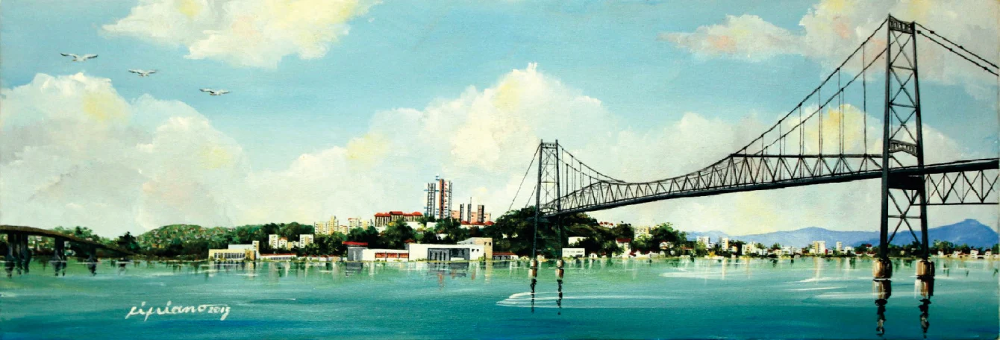
Visual do local da saída das regatas e treinos dos Clubes Náuticos de Remo de Florianópolis.
Obra: Ponte Hercílio Luz. Acrílico sobre tela.
Neste mesmo ano de 1953 já estava quase no final dos estudos no meu curso, e nas minhas horas de folga ainda trabalhava no Restaurante Brasil. E como era legal trabalhar ali no Mercado! Sempre cheio de gente, as bancas eram fartas de peixes grandes e fresquinhos, as carnes nos açougues também eram sempre novas, as verduras e as frutas não tinham agrotóxicos e eram apanhadas diariamente. Na época das pêras, havia algumas que pesavam mais de um quilo e eram bem macias. No final da tarde, principalmente quando a maré estava cheia, via muitas pessoas botando iscas grandes encostadas ao muro da balaustrada do mercado. Eram cordas com um baita anzol, a isca era cabeça de tainha e, por incrível que pareça, no outro dia de manhã a gente via aquele resultado: peixe grande ferrado, normalmente eram garoupas ou meros.
Também ali atrás do mercado tinha um espaço com uma banca de cimento para limpeza dos peixes, e suas vísceras eram jogadas ao mar, transformando aquela área num belo pesqueiro. Nunca esqueci que o nome do limpador de peixes era Chico Peixeiro.
Era muito bom ver na madrugada aquelas carroças e caminhonetes chegando com os trabalhadores e suas muitas mercadorias. Lembro da camionete do Sr. Andrino, da Lagoa da Conceição: este trazia sempre pescados daquela região. Às 5 horas da manhã era a hora de entrar na fila para comprar o leite que era vendido em garrafa de vidro de um litro. A gente tinha que entrar na fila várias vezes porque só se vendia um litro por vez. Lembro muito bem do nome de alguns comerciantes daquela época como os senhores Zezinho, Alvim, Valdemar, Spezim, Salum, Aurino, o Joca da barbearia, o Gomes, o Joca e o Goiano e seus restaurantes, e mais alguns que também trabalhavam lá.
Algum tempo depois meu pai comprou o restaurante ao lado do que estávamos trabalhando, este agora com 5 portas: chamava-se Restaurante Familiar. Ele pediu que eu pintasse a Ponte Hercílio Luz numa parede que dividia o salão com a cozinha. Para você ter uma ideia, a pintura teria a seguinte dimensão 1,20 x 4,00 m e ficava bem no alto. Eu teria que trabalhar em cima de uma escada. Acho que levei mais ou menos uns 2 meses para concluir . Os clientes e o nosso pessoal gostaram. Eu, mais ou menos. Deste trabalho resta uma fotografia que meu irmão Euni presenteou-me, porque essa parede foi demolida assim que vendemos o comércio para um novo proprietário.
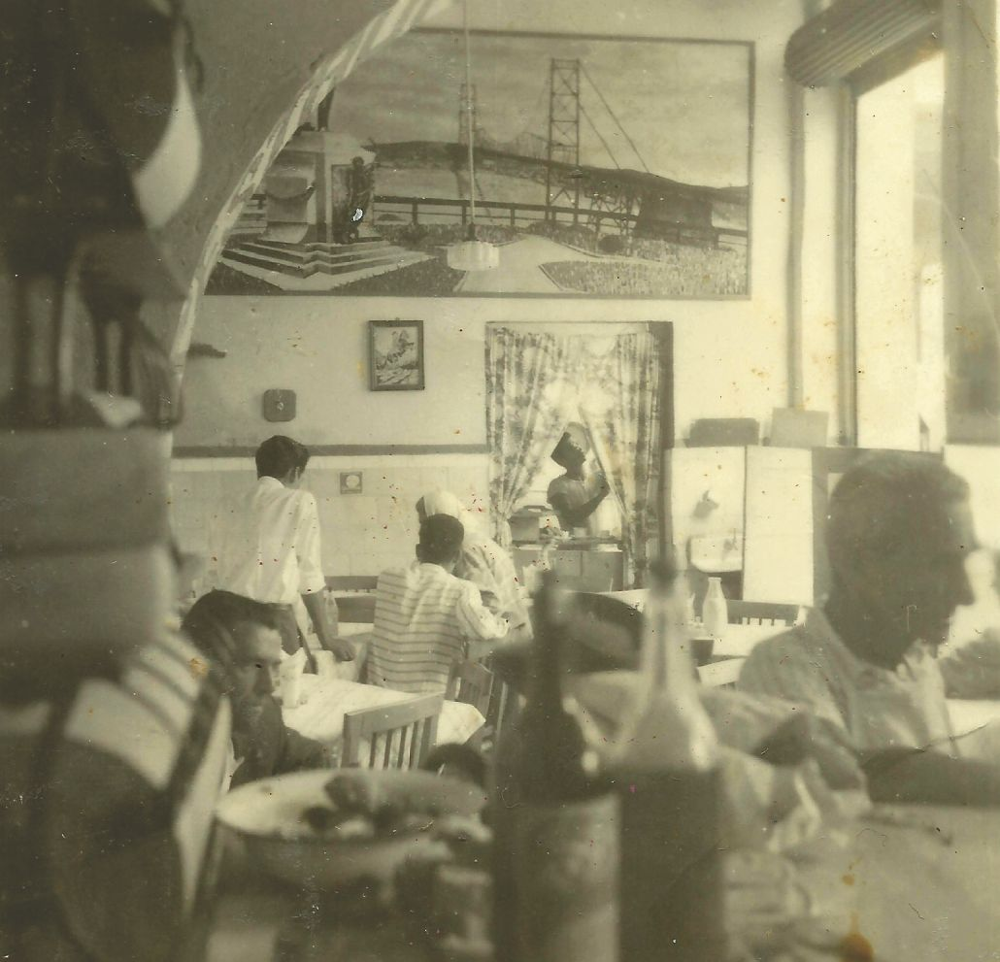
Foto do interior do Restaurante Brasil. Na parede, ao fundo, a pintura da Ponte Hercílio Luz feita por CIPRIANO.
Claro que mesmo antes do meu casamento e de começar a formar minha família eu ainda não tinha recursos suficientes para concretizar nada disso. Então só me restava uma alternativa: trabalhar. Como sempre fui muito criativo, aproveitava a época dos carnavais para fazer algumas máscaras, bonés, emblemas de futebol e as encomendas exclusivas que sempre apareciam e, que para minha sorte, tudo era vendido.
E era na abertura do Carnaval que a gente escutava os clarins com o seu tradicional toque anuciando esta grande festa, já com alguns blocos de sujos e os tradicionais blocos do Xavante e o dos Bororós trazendo suas rainhas trancadas numa jaula feita com bambus e seus guerreiros. Era muito bacana mesmo!
As rádios não se cansavam de colocar em sua programação as marchinhas de carnaval dos compositores locais, as letras “pegavam” fácil e logo todos estavam cantando as músicas daqui. Isso porque estou referindo-me apenas ao Carnaval no Mercado Público, pois já na Praça XV a coisa era de outro mundo.
Além das grandes sociedades como a “Tenentes do Diabo”, “Os Granadeiros da Ilha” e o “Vai ou Racha” da família dos Margaridas, também havia os desfiles dos blocos de sujos e o das escolas de samba, como a “Protegidos da Princesa” e “Copa Lorde”. Era tudo muito maravilhoso, com as famílias se confraternizando sem nenhum preconceito de classe social, de raça ou de cor.
Lembro que também havia o encontro dos foliões do Clube Doze de Agosto e do Lira Tênis Clube, que começava na Figueira da Praça VX e estendia-se pela rua Felipe Schimidt, passava pelo Ponto Chique, pelo Bar do Chiquinho e desembocava no Miramar.
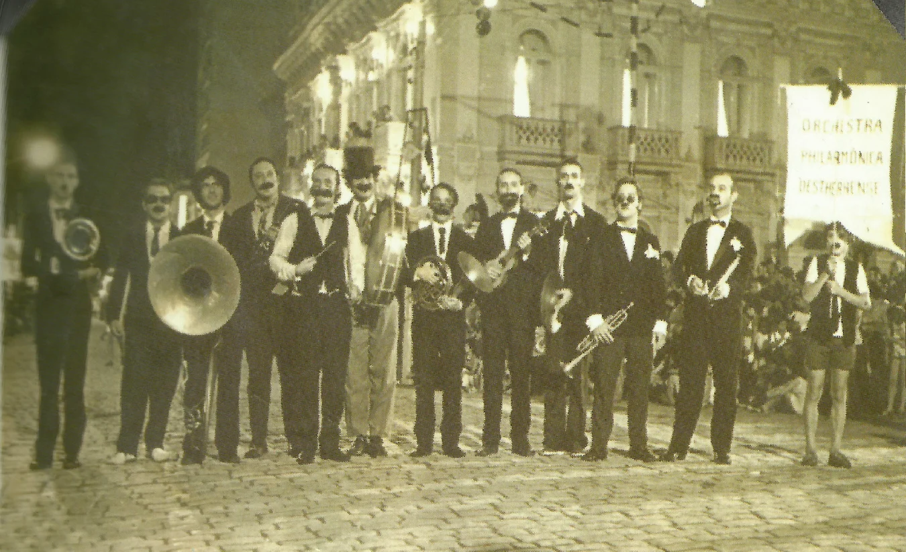
Primeiros integrantes da fenomenal “Orquestra Philarmônica Destherrense”, com seu excêntrico maestro Tullo Cavallazzi, que enlouquecia o público com suas divertidas e criativas apresentações.
Era um belo Carnaval, alegre e familiar, com os confetes e serpentinas dando todo aquele colorido espetacular. Inclusive, tenho que destacar as sensacionais apresentações da “Banda Amor à Arte” e da, sempre divertida e original, “Orquestra Philarmônica Destherrense”, que ajudavam a alegrar ainda mais aquele Carnaval que não volta mais.
O Encontro com a Arquitetura e a Prefeitura Municipal
Durante todo este tempo, e paralelo a todas estas outras atividades, eu continuava a fazer desenhos sob encomendas, como imagens sacras e rótulos de bebidas com seleção de cores feitas em papel vegetal, pois na época, em Florianópolis, não havia a tecnologia que nos proporciona a facilidade dos dias de hoje da impressão digital, nem mesmo havia gráficas com impressão off-set, existiam apenas algumas tipografias onde eram impressos nossos trabalhos.
Também fiz muitos retratos a lápis sobre papel canson, depois aprendi a trabalhar com o lápis crayon. Fiz alguns pequenos quadros com tinta nanquin preta e a cores, que muitas vezes eram colocados na vitrine da Livraria Record, na rua Felipe Schmidt, esquina com a ruaTrajano para vender. Pintei muitas placas grandes de propaganda em chapas galvanizadas. Muitas delas fiz na época para as Casas Pernambucanas, elas mediam mais ou menos 2x8m e eram colocadas em pontos estratégicos nas rodovias estaduais e federais. Fiz flâmulas e bandeirinhas para o Sr. José Aguiar da serigrafia “Seriplástico” e, com o meu colega e talentoso artista plástico Milton Pereira, também fiz cartazes de propaganda em papel duplex e tinta gouache, que eram colocados nos ônibus circulares. Aprendi muito com este meu querido amigo.
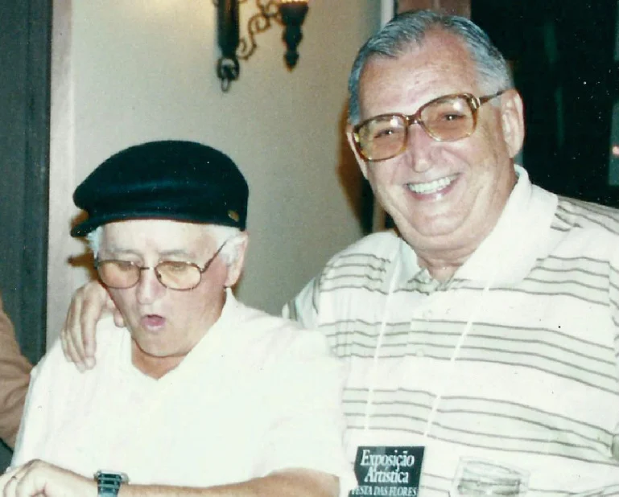
CIPRIANO com o grande amigo Milton Pereira na Exposição Artística ‘‘Festa das Flores’’. ‘‘Miltinho’’, como era carinhosamente conhecido, é um renomado artista plástico e foi seu colega e parceiro em muitos trabalhos.
Continuei nesta luta, até que um dia, ao entrar num ônibus na avenida Mauro Ramos, encontrei meu primo Moacir Coelho que, para quem não sabe, era um grande desenhista. Ele me perguntou o que eu andava fazendo: Falei que estava trabalhando com desenhos artísticos, até mostrei o gibi que acabara de fazer, ele riu e me falou que com aquele tipo de desenho eu ia morrer de fome, e citou alguns exemplos de artistas locais que lutavam com a maior dificuldade para sobreviver. Sugeriu então que eu passasse a fazer desenhos arquitetônicos e me mostrou uma planta (projeto) que ele tinha em mãos. Fiquei impressionado com a qualidade do trabalho e do valor que pagavam por aquele tipo de desenho. E vislumbrei como ele usava a versatilidade profissional e a administração de seu tempo, pois era funcionário público e ainda trabalhava no Banco Indústria e Comércio – INCO, e era justamente nas suas poucas horas de folga que fazia esses desenhos arquitetônicos. Cara, o homem ganhava uma grana preta, e isto me abriu os olhos, pois técnica, experiência e conhecimento deste tipo de desenho eu já tinha, pois aprendi na Escola Artífice. Só me faltava uma oportunidade, o que não demorou a acontecer.
Falando com meu pai a respeito dessa conversa que tive com o meu primo Moacir, ele lembrou de um amigo dele, também desenhista, que trabalhava na prefeitura, o Sr. José Jorge de Mello, e disse que iria falar com ele para pedir uma planta emprestada para eu estudar, e assim o fez. Meu primeiro trabalho foi o projeto do muro da nossa casa, fiz a planta e demos entrada na prefeitura, e para nossa surpresa o projeto foi aprovado sem qualquer alteração.
A tal oportunidade que eu tanto esperava surgiu na Prefeitura Municipal de Florianópolis, no Departamento de Obras, através de um outro primo, o Julio Paulino da Silva, na época vereador do PTB, onde vim a exercer a função de auxiliar de cadastrador (meio desenhista - meio topógrafo). Trabalhei nesta função muito tempo, até meu colega José Jorge Mello se aposentar, isso logo aconteceu, e eu imediatamente assumi suas funções.
Nossa função como cadastrador era dar alinhamento para as construções que já tinham seus alvarás de licença e fazer a vistoria para dar o “habite-se”. Foi aí que começou meu envolvimento com a arquitetura, pois levávamos o projeto aprovado para verificar se tudo tinha sido construído de acordo. Para isso, além de verificarmos o interior de cada unidade, tínhamos que conferir e medir todo seu perímetro, para que depois o desenhista pudesse lançar esses dados na prancha cadastral na escala 1:1000.
Também neste período passei a analisar os projetos a serem aprovados, verificando se estavam projetados de acordo com o plano diretor e o Código de Obras vigente. Através destas anotações os diretores aprovavam ou não, e davam o seu parecer final. Além disso, estava desenhando alguns projetos particulares, que, somados com todo esse trabalho de análise dos projetos, deu-me um profundo conhecimento do Plano Diretor e das normas técnicas do Código de Obras. Com isso, acabei sendo o responsável por todo o cadastro da Ilha. Olha que eu passei a conhecer profundamente nossa ruas, servidões, avenidas e muitos bairros aqui do Centro: tinha tudo isso na ‘‘palma da mão’’, como diziam nossos pais!
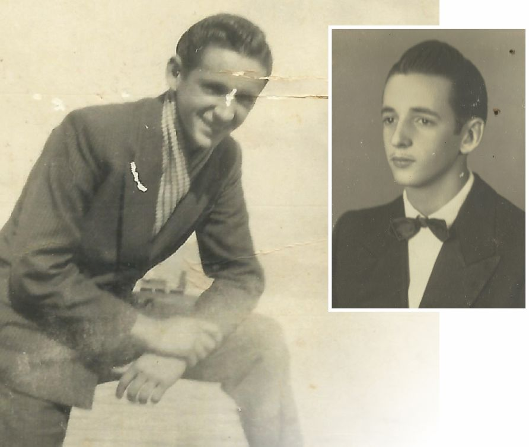
O jovem CIPRIANO, na época em que trabalhava na prefeitura e também criava suas charges de conteúdo político para o Jornal ‘‘O Estado’’, onde usava o pseudônimo de “Zé Povinho”.
Em 31 de dezembro de 1956 nasceu nosso segundo filho, dessa vez uma menina linda à qual demos o nome de Mariza Clara da Silva. Nesta ocasião eu já fazia vários tipos de projetos, como reformas, acréscimos de cômodos em algumas casas e outros projetos de casas de madeira e algumas de alvenaria. Olha, era muito serviço, e como meu primo Moacir falava, o dinheiro entrava legal e já me proporcionava algumas economias, pois já pensava em comprar uma casa e ter nossa vida independente, pois morávamos ainda na casa dos meus pais. Isto veio a acontecer em 1958, quando finalmente compramos nossa primeira casa própria, e também nasceu o nosso terceiro filho José Cipriano da Silva Filho - o Zezinho, no dia 28 de junho. Era uma casa velha no bairro Agronômica, situada na rua Padre Schrader (antiga Rua do Chapecó) perto do “Clube 25” - União Recreativa e Cultural 25 de Dezembro. Demolimos e construímos uma nova em folha.
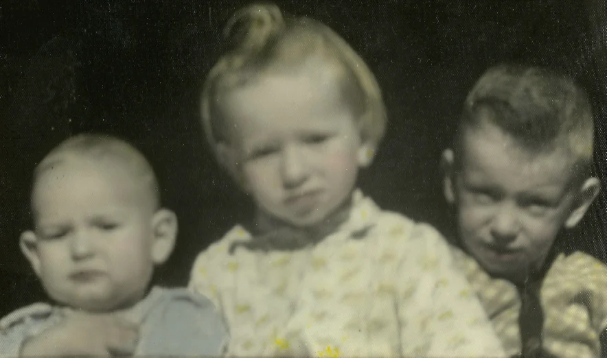
Zezinho, Mariza e Carlinhos. (Foto colorizada através de pintura por CIPRIANO).
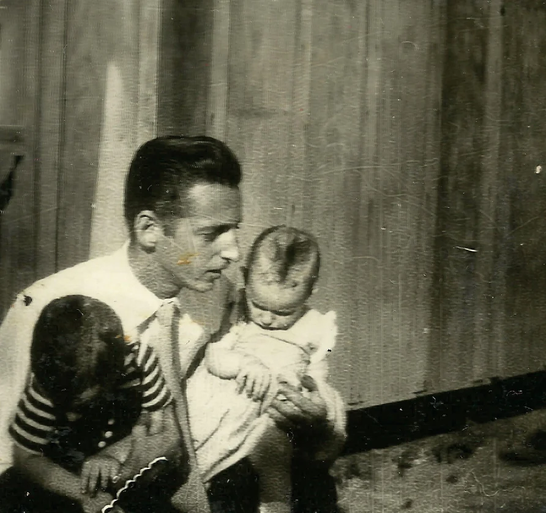
Carlinhos e Mariza no colo de CIPRIANO na frente da primeira casa própria da família, localizada na rua Padre Schrader no bairro Agronômica.
Nesta ocasião eu já estava bastante conhecido como desenhista de projetos arquitetônicos e já me chamavam de “CIPRIANO”. Fazia em torno de dois a três projetos por noite. Para terem uma idéia, minha prancheta media 1.00x1.50 m e nela ficava um rolo de papel vegetal fixo de 20m, o qual era desenrolado na medida em que os trabalhos eram sendo executados e, por final, o papel era cortado projeto após projeto.
Na prefeitura trabalhei com vários profissionais da arquitetura como Zerbi Linz, Onaldo Pinto de Oliveira, Loriz Corsine e José Elias, que me ensinaram ainda mais, para que eu pudesse analisar com mais precisão os projetos em aprovação e isso com certeza aumentou bastante meus conhecimentos sobre arquitetura, que foi praticamente a universidade que eu não fiz. Com isso fui ficando cada vez mais conhecido no cenário dos profissionais de arquitetura, fazendo outros serviços que iam ampliando meus conhecimentos nesta área.
No meio de tanto trabalho, ainda voltei a fazer charges para o jornal “O Estado”. Naquela época a política começava a despontar e reinava bem no meio jornalístico, e eram muitas as desavenças entre os partidos e seus candidatos: isso oferecia um farto material para minhas charges, onde podia expressar os verdadeiros interesses e opinião da nossa gente, por isso mesmo as fazia gratuitamente e tinha muito orgulho destes trabalhos. Os partidos eram o PSD, UDN e o PTB e eu usava o pseudônimo de “Zé Povinho”.
Nossa cidade passou a crescer violentamente e sem qualquer tipo de estudo ou de um mínimo planejamento urbano na construção civil. Isso começou a mudar a cara de uma cidade pacata e feliz, onde tive de ver com muita tristeza a demolição de belos casarios antigos, levando consigo grande parte da nossa história e de nosso verdadeiro patrimônio cultural arquitetônico.
Em meados de 1959 meu departamento, que durante muito tempo ficava localizado na torre do Mercado Público, ao lado de onde hoje fica o Camelódromo, mudou-se para a sede da antiga Câmara Municipal, ali na Praça XV. Nesta mudança, fui incumbido pelo engenheiro Loris Corsine de projetar e executar todas as sobrelojas, onde então também pude aplicar os conhecimentos de carpintaria que aprendi na Escola Artífice.
Ainda na gestão do prefeito Osmar Cunha, ele contratou um paisagista para elaborar uma reforma no caramanchão e no coreto da Praça XV, e me colocou à disposição deste profissional. Com ele elaborei dezenas de perspectivas onde usei pela primeira vez a técnica de tinta gouache sobre papel duplex preto. Considerei um trabalho de qualidade razoável, e tive o prazer de fazer as primeiras perspectivas, que ficaram expostas por um bom tempo, para que a população pudesse acompanhar e opinar sobre o projeto.
Já no final do ano de 1959, a Prefeitura Municipal fez uma homenagen ao poeta Cruz e Souza na qual também fui designado a fazer a decoração com painéis pintados à mão. Estes trabalhos não faziam parte do meu ofício profissional, mas foram uma boa experiência.
Lembro perfeitamente dos últimos trabalhos que fiz como auxiliar de cadastrador, que foram as aberturas da rua Dib Mussi, um trecho da rua Dom Jaime Câmara e a abertura da avenida Osmar Cunha. Na época estes locais eram enormes chácaras pertencentes às famílias dos Mansur e dos Molenda. Foi um trabalho delicado e difícil, pois seus proprietários não queriam autorizar nossa entrada em suas propriedades.
Como desenhista, trabalhei na Prefeitura Municipal até meados de 1960, quando o prefeito já era o Sr. Osvaldo Machado, o qual me devia um grande favor – o qual ele nunca esqueceu e prometeu que iria lembrar de mim caso aparecesse alguma oportunidade. Na hora certa isso realmente aconteceu: quando a prefeitura resolveu mexer na direção do Cadastro Fiscal. Ele cumprindo com sua palavra, colocou-me para ocupar este cargo. Porém, meu diretor achou que eu era muito jovem para tal função e me ofereceu uma outra de menor salário. Claro que não aceitei e resolvi desligar-me definitivamente da Prefeitura. Confesso que tinha certeza de ter sido muito radical em minha decisão: ficar desempregado já tendo uma família com mulher e três filhos.
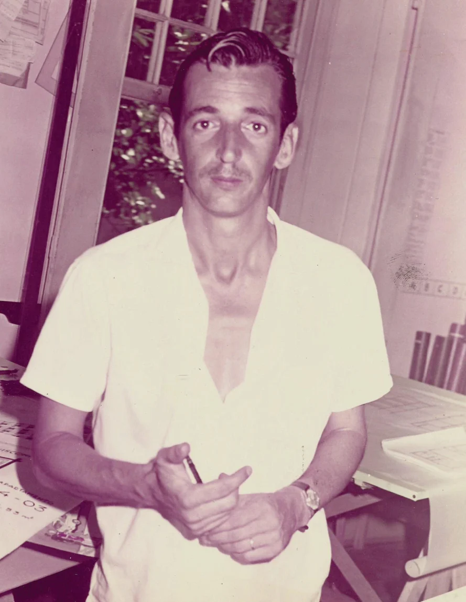
CIPRIANO e uma de suas primeiras lapiseiras ‘‘Caran D’Ache’’, as quais usou na maioria de seus trabalhos como desenhista, projetista e artista plástico.
Resolvi então tentar a sorte em Curitiba, felizmente, por ironia do destino, lá nada aconteceu, pois meu futuro me aguardava bem aqui na Ilha. Voltei para Florianópolis e, conversando com o colega Ivan Natividade, soube que no Departamento de Estradas e Rodagem (DER-SC) estavam precisando de um desenhista e resolvi tentar uma nova oportunidade de trabalho. Peguei uma planta que havia feito para a PMF, do cadastro da cidade de Florianópolis na escala 1:1000, com curvas de níveis, mapas das ruas e mais algumas outras, botei embaixo do braço e joguei-me para o DER. Entrei num elevador onde também estava um senhor magro de óculos muito bem arrumado e perguntei onde ficava o DER, ele perguntou com quem eu queria me encontrar. Enquanto o elevador subia, fui contando o que havia acontecido, senti que ele logo se interessou e pediu para ver as plantas que estavam comigo. Olhou-as e acho que gostou, pois falou que a partir daquele momento eu já estava contratado, e que ele era o diretor daquele departamento ao qual me referi, então me levou ao engenheiro responsável, o João Kalafatas. Foi aí que fiquei sabendo quem era aquele senhor de óculos... era o engenheiro Aldo Novo. Para facilitar e garantir minha permanência naquele emprego cheguei a levar para o meu novo trabalho grande parte do material de desenho que tinha em casa.
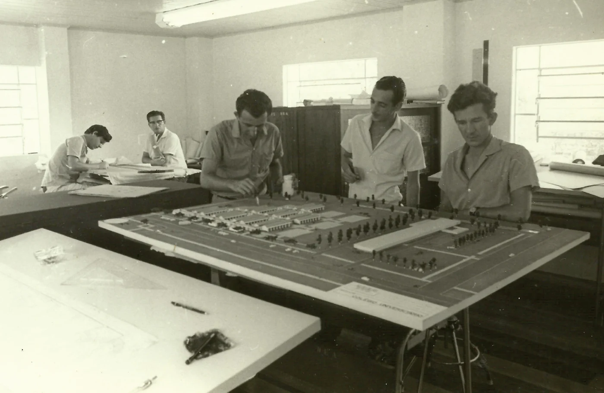
Entre tantos talentos, CIPRIANO também aprendeu e executou várias ‘‘maquetes’’ – representação completa ou parcial em escala reduzida de projetos de arquitetura.
Neste departamento conheci o desenhista e grande artista plástico Aldo Beck, pessoa finíssima, educada, que me ajudou bastante no aprendizado com os desenhos de estradas, pontes de concreto e levantamentos topográficos. No início foi muito difícil esta mudança tão radical de estilo de desenhos, mas aos poucos, com muita força de vontade e com o meu novo amigo Aldo dando aquela força, consegui superar-me.
O tempo foi passando e fui conquistando mais espaço nesse departamento ao ponto dos engenheiros Osni Berreta, João Kalafatas, Aldo Novo e o Santa Rita considerarem-me um exímio profissional e uma pessoa de sua absoluta confiança. E foi através desta confiança que o engenheiro Santa Rita apresentou-me ao engenheiro David da Luz Fontes e ao arquiteto Felipe da Gama Lobo D'Eça, que logo começaram a me passar alguns trabalhos de arquitetura.
Quando fui apresentado ao “Felipe Gama D'Eça”, como era mais conhecido, marcamos um encontro em sua casa, e procurei chegar exatamente no horário combinado. Quem me recebeu foi sua esposa, que foi logo dizendo: – Se você veio para enganar meu marido, já pode ir voltando! O doutor Felipe escutou aquilo e pediu para eu entrar e falou... – Já vi que você realmente é pontual, conforme o Santa Rita falou-me. É claro que fiquei contente, um elogio logo de cara. Só não sabia o que viria pela frente: desenvolver um projeto arquitetônico que ele fez em pedacinhos de papel, porém muito bem desenhados, como se fosse um jogo de xadrez. No início achei muito difícil de entender, levei para casa e com muita paciência, conseguir elaborar e desenvolver este projeto. É claro que levei alguns dias para o fazer.
Passados alguns dias, conforme combinamos, fui entregar o trabalho. Cara, ele não acreditou no que estava vendo. Achou que eu iria correr do serviço. Em seguida ele me entregou um segundo trabalho, que foi o projeto de um edifício de 8 pavimentos na rua dos Ilhéus, que desenvolvi e desenhei em seu escritório na rua Vidal Ramos. Fiz mais alguns trabalhos para ele nas minhas horas de folga, pois ainda trabalhava no DER e atendia a empresa A. Gonzaga fazendo alguns extras. Pouco dormia e pouco descansava, minha vida começou a ser trabalho e mais trabalho, pois cada vez mais eu me empolgava e ia somando conhecimentos, o que me deixava cada vez mais feliz.
Certo dia, para minha surpresa, recebo em minha casa na rua Padre Schrader a visita do engenheiro David Fontes e de um tal Sr. Admar Gonzaga, que vieram com o intuito de me fazer uma proposta de trabalho. Pediam meus serviços de desenho e projetos para uma empresa chamada “A. Gonzaga”, e me dariam um fixo e mais um valor por produção de todos os projetos arquitetônicos executados onde houvesse minha participação. É claro que aceitei tudo sem hesitação, desde que isto não viesse a prejudicar a minha permanência no DER.
A empresa A. Gonzaga S.A. Engenharia e Incorporações Imobiliárias ainda estava iniciando, porém já contava com ótimos profissionais e já mostrava um grande potencial. Lembro do primeiro serviço que fiz para esta empresa, que foi criar o seu logotipo, e o seu “mascote” - o simpático bonequinho A.G. Esse pedido foi entregue em minhas mãos pelo filho mais novo do Sr. Admar, o Toni.
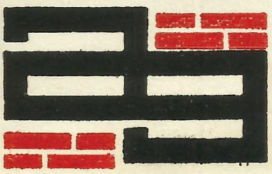
Logotipo da A. Gonzaga S.A.
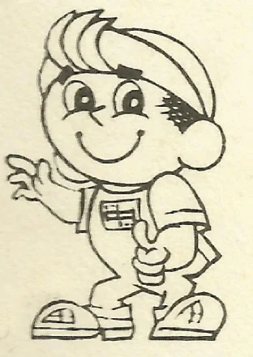
O simpático mascote A.G.
No início do ano de 1961, fiz o primeiro projeto arquitetônico, que foi um dos 3 blocos de um condomínio residencial construído na av. Rio Branco, chamados Toni, Armando e Augusto. Nesta ocasião fiquei conhecendo o escritório principal, que ficava em cima do famoso “Ponto Chique”, na rua Trajano ao lado do atual “Mac Donald's”, que na época era a “Casa América”, de propriedade do próprio Admar Gonzaga.
Aqui cabe citar que, mais tarde, no ano de 1965, tive a oportunidade de fazer a criação e confecção de quatro mosaicos cerâmicos feitos com pastilhas vitrificadas de 2x2 cm sem corte. Dois, em estilo moderno cubista com motivos da olaria da ilha, para os edifícios Augusto e Toni, e mais outros dois, no mesmo estilo, porém com motivos de marinhas, para os 2 blocos do Solar Dona Eugênia localizado na rua Almirante Lamego.
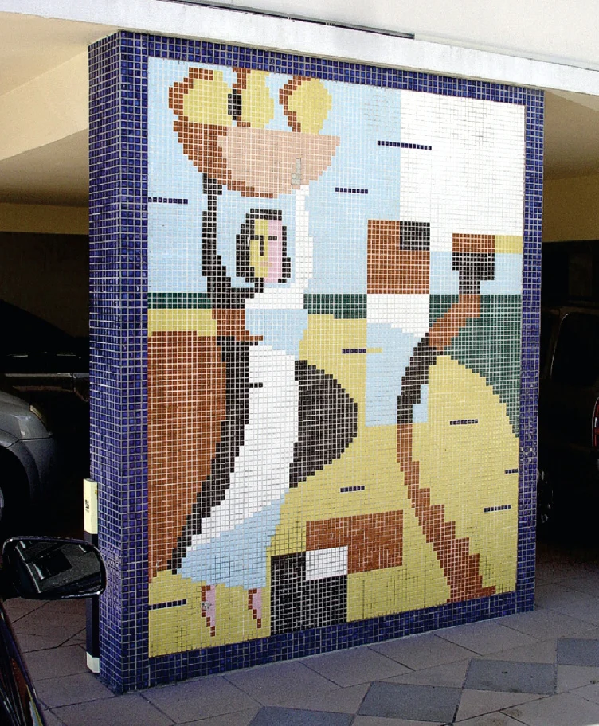
Mosaico cerâmico em estilo ‘‘cubismo’’, com motivo da olaria produzida na ilha, instalado no edifício Toni localizado na Av. Rio Branco.
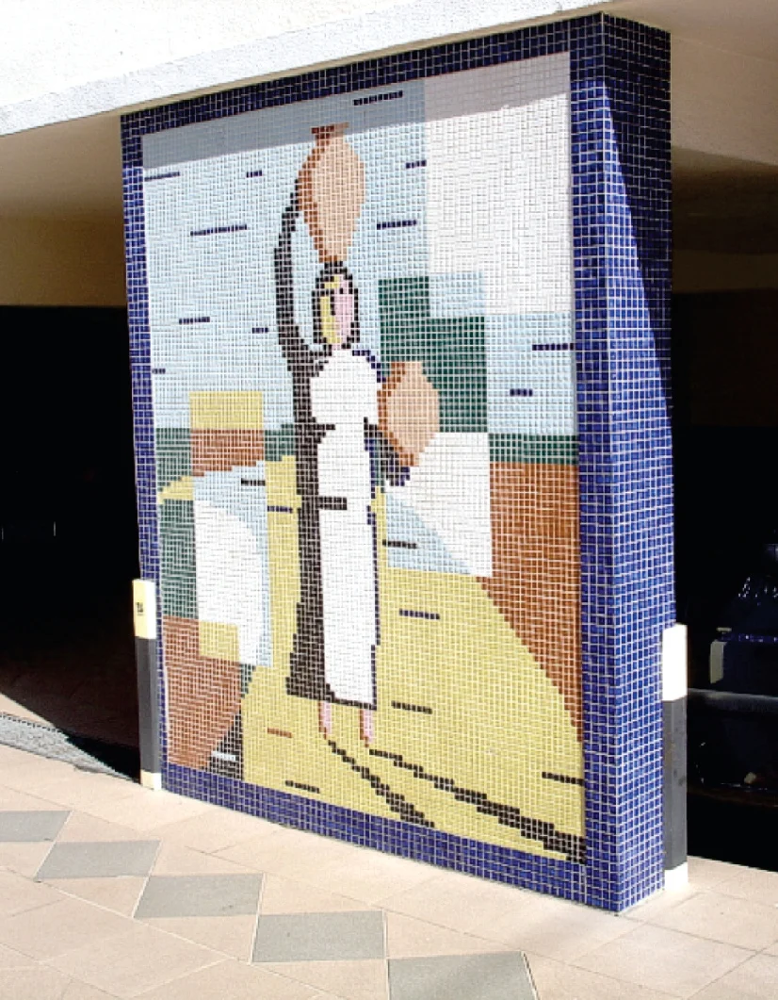
Mosaico cerâmico em estilo ‘‘cubismo’’, com motivo da olaria produzida na ilha, instalado no edifício Augusto localizado na Av. Rio Branco.
O “Sêo Admar”, como costumava chamá-lo, era uma pessoa inteligente, séria, um grande comerciante e se demonstrava ser uma pessoa muito amável. Falávamos de seus projetos, de sua família, lembro muito de sua esposa Dona Conceição e de seus filhos, o Augusto, o Armando e o Toni. Com tantas coisas boas, fui aprendendo muito nessas conversas. Acontece que eu já o considerava quase um segundo pai, pois ele me dava a oportunidade também de, além de falar sobre meus projetos, conversar sobre a minha família ainda em formação. E ele se preocupava muito com isso, e é tão verdade que, quando me visitou com o Dr. David Fontes em minha casa na rua Padre Schrader, alertou-me que eu deveria colocar em meus planos um outro local para morar, mais próximo de colégios e do que seria no futuro, meu novo local de trabalho.
Certos disso, eu e minha esposa concordamos com esta sugestão e botamos para trabalhar mais ainda, eu em meus projetos arquitetônicos, e ela fazendo bananas recheadas, bolinhos e até picolés, feitos no congelador da nossa própria geladeira, para vender no Campo da Liga (antigo campo do Avaí Futebol Clube - o Estádio Adolfo Konder), onde hoje fica localizado o Beiramar Shopping. Com muito trabalho e em pouco tempo conseguimos alcançar nosso objetivo: compramos um terreno na rua Joaquim Costa, no bairro Agronômica e construímos uma casa de alvenaria com três quartos, tamanho ideal para nossa família em fase de expansão.
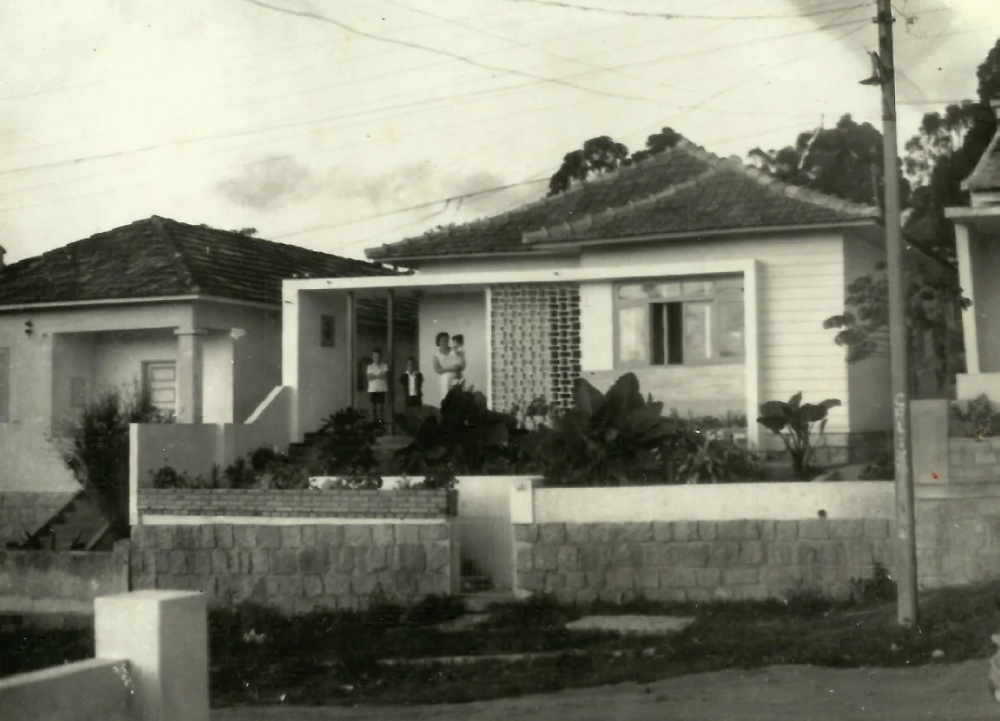
Casa da família CIPRIANO na rua Joaquim Costa. Na varanda: Carlinhos, Zezinho, Maricha e João.
Na medida em que ia crescendo a empresa, também aumentava a minha amizade com o Sr. Admar e com o engenheiro David Fontes e, por consequência, minha dedicação para com a empresa. Um certo dia, o Sr. Admar convidou a mim e a minha família para irmos à Lagoa da Conceição por dois motivos: o segundo era para visitarmos sua casa, e o principal e primeiro motivo era para conhecer o terreno que ele tinha recém adquirido onde seria localizado o Lagoa Iate Clube – o LIC.
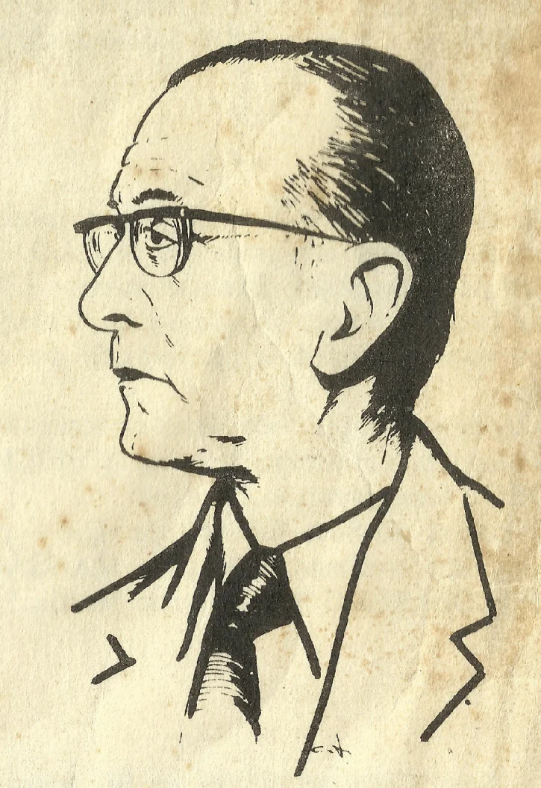
Retrato de Admar Gonzaga: Nankim sobre papel off-set. Reprodução impressa numas das edições do Jornalzinho A.G.
Era a primeira vez que iria visitar a Lagoa da Conceição, e nem sabia que no caminho havia um morro enorme de chão batido para subir. Ao chegarmos no topo do morro o Sr. Admar pára o seu carro e de repente pergunta: – Que tal este cartão postal, Cipriano? Fiquei pasmo com tanta beleza e emocionado com o que estava vendo à minha frente... uma enorme lagoa azul, cercada de muito verde, muitas dunas, um lugar pouco habitado onde a natureza estava praticamente intacta, e disse a ele o seguinte: – Só Deus poderia criar tamanha beleza.
Descemos o morro e chegamos no terreno onde seria construído o LIC. O local era enorme, ia da estrada geral do Canto da Lagoa até às margens do outro lado. Para deslocar-nos por toda a área do terreno tivemos de usar o carro. Prosseguimos viagem até sua casa na rua Osni Ortiga, que ele construiu com materiais de sobra das construções, uma casa tipo chalé com fundos para a Lagoa. Depois fomos até a Praia da Joaquina, onde ele me pediu para desenhar aquele promontório, isso para que o artista Aldo Beck, usando meu esboço, pudesse pintar um quadro que seria um presente para o seu filho Augusto, que nessa época morava no Rio de Janeiro.
Voltando um pouco no tempo, nos anos 59 e 60, no Carnaval, a prefeitura estava sem dinheiro para fazer a decoração da cidade, então o prefeito incumbiu-me para resolver tal questão, pois eu já havia ajudado a outros decoradores neste tipo de serviço e aceitei. Senti-me feliz com o convite e fiz um projeto com o tema “Homenagem a Brasília”, que foi prontamente aprovado. Executei todo o trabalho e pré-montagem numa ala desocupada do Mercado Público.
Convoquei operários da própria prefeitura para ajudar nas pinturas e montagens finais. Tudo foi feito no maior sigilo, os comentários eram muitos e alguns até maldosos, dizendo que o prefeito tinha deixado os artistas locais de fora e que tinha contratado um artista de outra localidade para fazer a tal decoração.
Somente no dia da montagem é que a imprensa e o público ficaram sabendo que a decoração do nosso Carnaval tinha sido feita por mim, um ex-funcionário da prefeitura local. Acho até que recebi alguns elogios. Também ajudei bastante o decorador “Américo” e o famoso “Eraclis - o Faquir” nas pinturas e nos desenhos em cima de madeira de compensado e papel pardo em algumas outras decorações de Carnaval na Praça XV e no Lira Tênis Clube.
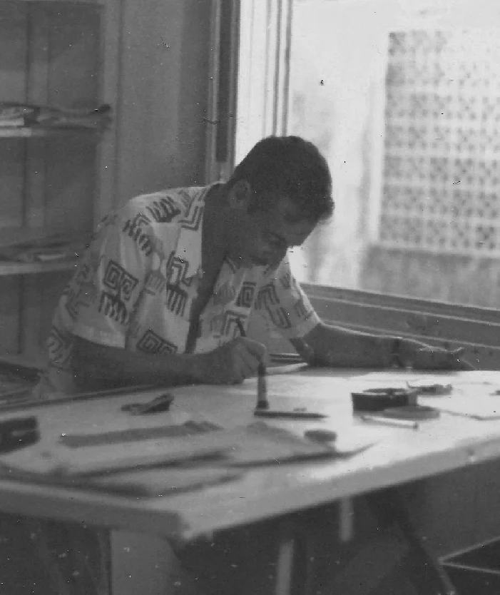
CIPRIANO em plena atividade como desenhista arquitetônico na sala de projetos da Construtora A. Gonzaga. Na mesma época também criava e executava decorações para o Carnaval da Ilha.
Chegamos em 1964, ano em que o destino resolveu aprontar com a minha família, e foi exatamente enquanto morávamos na casa que tínhamos acabado de construir. No dia 25 de outubro, às 10h30 da manhã, recebemos uma notícia que não poderia ter sido mais triste, nossa querida filha Mariza, com apenas 8 anos, tinha sofrido um acidente num automóvel Jipe, onde estava brincando com outros coleguinhas, e veio a falecer.
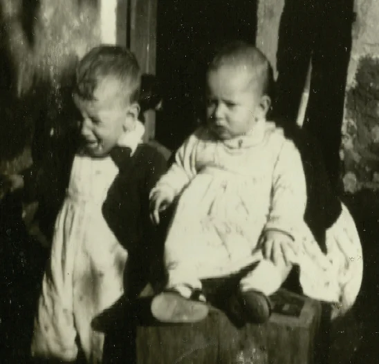
Carlinhos e Mariza na primeira casa da família, no bairro Agronômica.
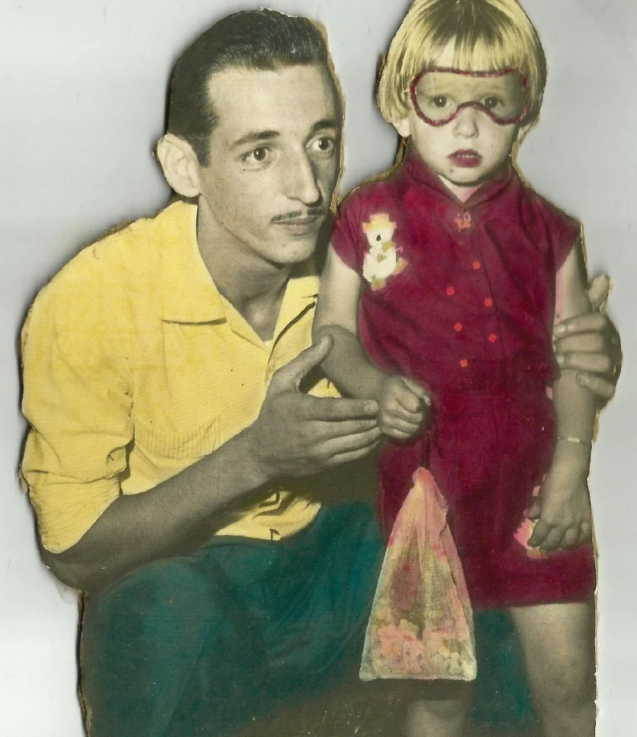
CIPRIANO e sua querida filha Mariza prontos para participarem de um evento de Carnaval. Foto colorizada através de pintura por CIPRIANO.
Passados mais alguns meses, nosso filho mais velho - o Carlinhos, teve tétano e por muito pouco não o perdemos. Graças ao bom Deus recebi um alerta, através de uma intuição que tive durante meu expediente de trabalho no DER, de que algo em minha casa estava errado. Imediatamente larguei tudo o que estava fazendo e chegando na minha rua logo vi que o problema era com o Carlinhos, que estava sentado à beira da calçada muito triste e deprimido. Pegamos um táxi e fomos direto para o consultório do Dr. Batista que nos orientou como devíamos proceder, pois o caso era gravíssimo. Fizemos de tudo para que nada viesse a acontecer com ele e conseguimos chegar ao hospital a tempo de salvá-lo. Ele foi um guerreiro, sobreviveu e saiu dessa sem nenhuma seqüela.
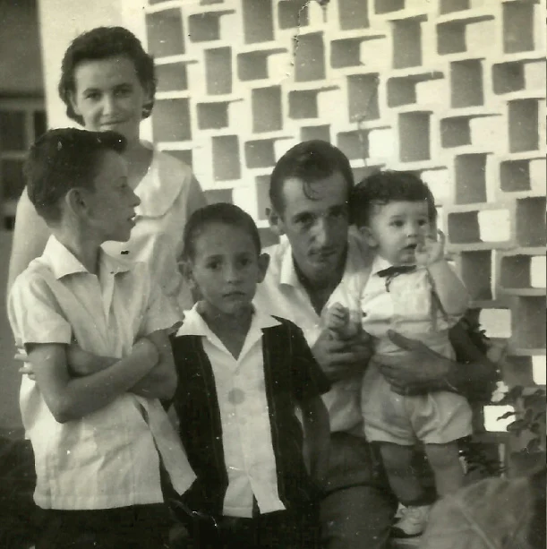
Maricha, Carlinhos, Zezinho, CIPRIANO e o mais novo filho, João.
Eu e minha esposa Maria Clara tínhamos, na época, 28 anos de idade. Éramos muito jovens para entender e lidar com essas tragédias. Sofremos muito e passamos trabalho para superar essa fase. Tudo isso aconteceu com a Maricha ainda grávida. Ela estava esperando o nosso próximo filho, o Armando Felipe da Silva, que nasceu em 23 de novembro de 1965, e ainda com seu bebê de colo de 5 meses, o João José da Silva, que havia nascido em 17 de junho de 1964. Sinceramente, não sei como tivemos forças para superar tudo que aconteceu.
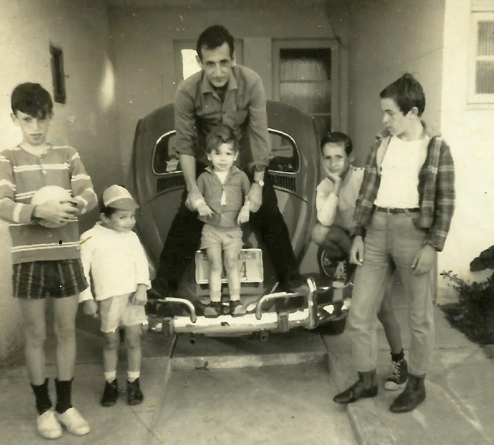
Foto memorável em frente ao Fusca da família: Carlinhos, João, o pai CIPRIANO com o “caçula” Armando, Zezinho e o "Tio Ailton" - irmão de sua esposa Maricha.
Depois desses acontecimentos, resolvemos vender esta casa, compramos um outro terreno e construímos uma outra, nesta mesma rua, porém um pouco mais abaixo. Nesta ocasião recebi um convite do arquiteto Felipe Gama D'Eça para trabalhar com ele no campus da Universidade Federal de Santa Catarina - UFSC, para fazer as instalações do Departamento de Engenharia e Arquitetura. Ele me falou que eu ficaria à disposição da universidade, porém com todos os direitos e vantagens do DER-SC. Diante disso, claro que aceitei, mesmo tendo que me dedicar ainda nas horas de folga à empresa A. Gonzaga, que já estava num crescimento muito acelerado no ramo imobiliário.
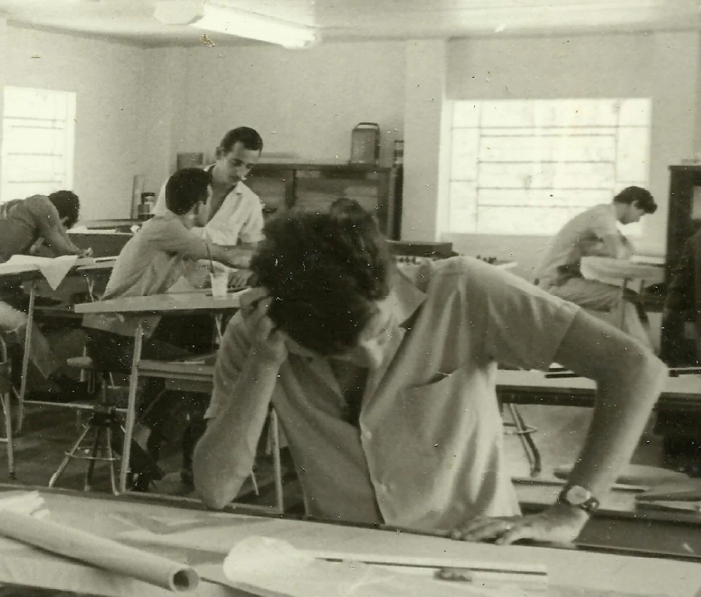
CIPRIANO com sua equipe de desenhistas e colaboradores no DER-SC.
Minha função ali foi instalar este novo departamento dentro do espaço físico destinado a ele, que ficava no bairro Trindade. Tive carta branca para agir. Além de adquirir todo o mobiliário como mesas, pranchetas, arquivos de aço, máquina heliográfica e todo o material de desenho necessário, ainda contratei os melhores desenhistas da época da cidade, inclusive entre eles destaco o artista Aldo Beck, que já havia trabalhado comigo no DER-SC. Depois, minha função passou a ser a de desenvolver os projetos elaborados pelos arquitetos e repassar meus desenhos para a equipe de desenhistas. Passei a ser o chefe daquele departamento.
A Rua Feliciano Nunes Pires e os 4 Filhos desenhistas
Paralelamente ao trabalho, fui construindo e vendendo nossas casas, foram várias mudanças, até que um dia chegamos ao nosso “porto seguro”, a casa número 11 (hoje 148) da rua Feliciano Nunes Pires no Centro, onde eu e minha esposa moramos desde 1972, ou seja, são mais de 40 anos no mesmo imóvel. Era uma casa antiga com um terreno muito bom, numa ótima localização e com muitos bons vizinhos, entre eles destaco as famílias Sobierajski, Dutra, Pellizetti, Ganzo, Albuquerque, Medeiros, Zabot, Caldeira, Richard, Natividade, Bonelli e a Moritz. Fiz uma bela reforma ali e nossos filhos foram crescendo e seguindo seus caminhos.
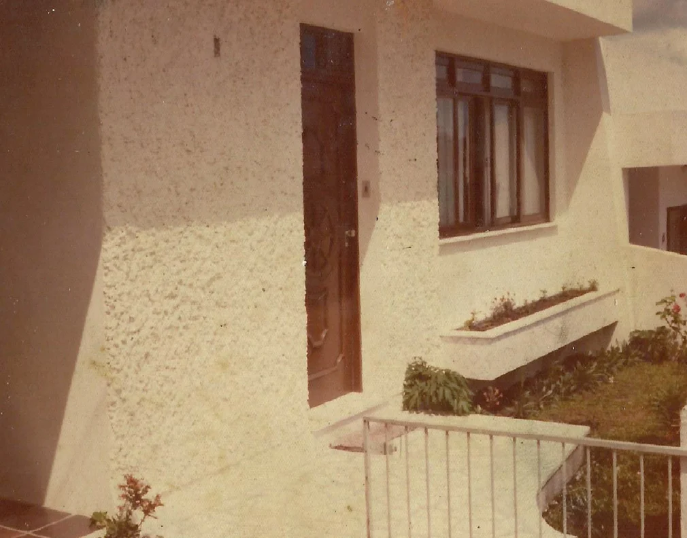
A casa recém construída na rua Feliciano Nunes Pires
Todos eles, na sua adolescência, trabalharam comigo em meu escritório de desenhos de arquitetura, que ficava nos fundos dessa nova casa. Revezavam com eles mais uns quatro a seis desenhistas, pois tinha muito serviço particular a fazer. Era uma escala de 24 horas de trabalho intenso. Foi uma época muito legal, trabalhar com meus filhos e ter o prazer de vê-los crescer profissionalmente e como pessoas do bem.
Quase todos se formaram em cursos técnicos. Meu filho Carlinhos trabalhou como desenhista na A. Gonzaga, depois passou num concurso público para a Eletrosul, onde especializou-se no programa de computação gráfica “Autocad”, vindo a se aposentar nesta mesma empresa. Carlinhos também teve relevante importância nas montagens e ‘‘nos bastidores’’ de algumas das várias exposições em que colaborou comigo.
O Zezinho, ou Cipriano Filho, como é mais conhecido, formou-se na Escola Técnica Federal, no curso de Edificações, indo trabalhar no Instituto de Planejamento Urbano de Florianópolis - IPUF. Após passou no concurso vestibular no curso de matemática, transferindo-se em seguida para o de arquitetura, onde cursou até a sexta fase. A partir daí decidiu trabalhar como autônomo no mercado da indústria gráfica, onde se encontrou profissionalmente. Hoje é um conceituado consultor comercial nessa área, representando empresas importantes de Santa Catarina além de ser um grande parceiro nas minhas produções gráficas.
O João sempre teve tendência às artes. Começou trabalhando cedo, aos 7 anos, quando já fazia tirinhas de quadrinhos para o jornalzinho da A. Gonzaga. Com 10 anos trabalhou com meu amigo Aldécio Silveira no antigo jornal “O Estado”. Depois de concluir o segundo grau, também se formou na Escola Técnica Federal, no curso de Edificações. Seguiu como desenhista e ilustrador na serigrafia do meu amigo José Aguiar, e daí em diante assumiu como ilustrador e profissional na área da propaganda, inclusive montando uma agência de publicidade com o seu amigo, o fotógrafo Saul Oliveira Filho (filho do saudoso jogador de futebol “Saulzinho”, do Avaí F. C.). Paralelamente, sempre seguiu com sua carreira nas artes e na música. Hoje, além dos seus trabalhos pessoais, continua se dedicando, dando total apoio e supervisão, aos meus projetos artísticos.
O “caçula” Armando, ou “Armandinho”, como é mais conhecido, assim como seus irmãos Zezinho e João, também se formou na Escola Técnica Federal no curso de Edificações. Trabalhou nesta área como desenhista técnico e prosseguiu com os estudos até formar-se em Arquitetura, com Mestrado em “Sistemas e Projetos Construtivos de Patologias em Fachadas”, na UFSC. Hoje, com mais de 20 anos de experiência no ramo, tem sua própria empresa especializada em pintura e recuperação de edifícios, além de prestar assessoria técnica nesta mesma área para vários condomínios.
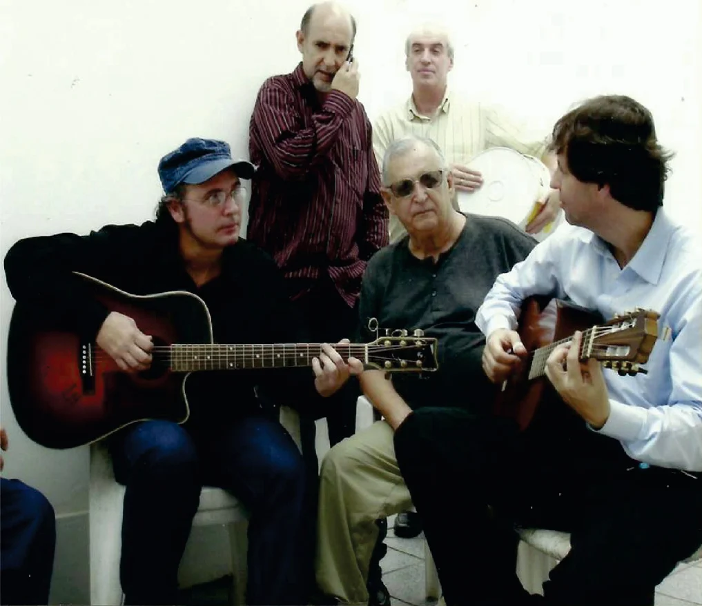
CIPRIANO e seus 4 filhos num momento de descontração, tocando, cantando e curtindo uma boa música.
Além das aptidões no desenho, o João gostava também de música e estava aprendendo a tocar violão e baixo elétrico. E, assim, numa sucessão de valores musicais na minha família, o Armando aprendeu com ele as primeiras notas em seu violão, e meus outros filhos Carlinhos e Zezinho começaram a vibrar seus instrumentos de percussão a partir de alguns presentes que lhes dei num Natal.
João e seus amigos Marcos Ganzo e Silvio Dutra, moradores da mesma rua, formaram uma banda, que ainda é super conceituada aqui na cidade e no estado, o lendário grupo de rock “Da Rua... a Banda”, da qual o Armando também participou.
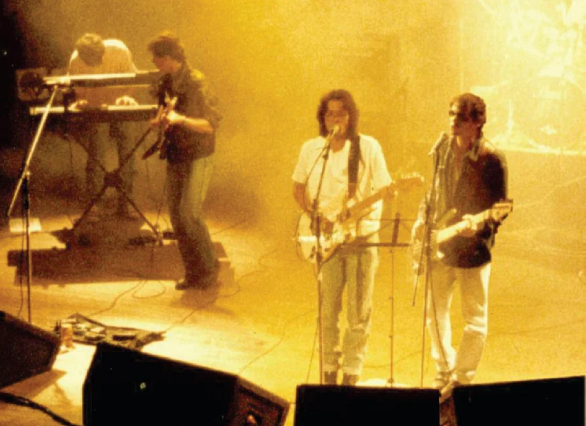
O grupo “DA RUA... a Banda” em um de seus shows no Teatro Álvaro de Carvalho.
O "Armandinho" tornou-se um excelente guitarrista e violonista de chorinho, serestas e samba raiz. O Carlinhos também chegou a montar um grupo musical chamado “Grupo Callor”, que fez muito sucesso em várias casas noturnas e restaurantes da cidade.
Houve uma época em que eu e meus irmãos Zinder e Thiago, contando com a companhia do nosso querido “Elói do Pandeiro”, saíamos algumas noites para fazer serestas na casa de familiares e amigos. Éramos conhecidos como “A Turma da Amizade” – como Thiago intitulou-nos.
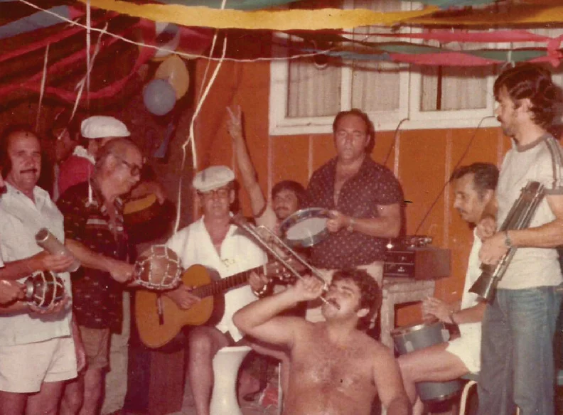
A ‘‘Turma da Amizade’’ reunida com nosso amigo Neneu, os irmãos Thiago e Zinder, o pandeirista Elói, CIPRIANO e o querido amigo Rosa num encontro em noite de seresta.
Aos poucos meus filhos João, Armando e Carlinhos, e meus sobrinhos Marcelo (filho do Culica), Osmar Silva Filho – o “Óque” e seu irmão José João da Silva Neto – o “Babinha”, começaram a fazer parte destas noitadas. Nosso local preferido no início era o “Porão da Amizade”, na casa da minha querida sobrinha Letícia, que morava com o meu irmão Zinder.
Primeira apresentação como grupo “A Turma da Amizade”, num bingo beneficente no Centro Comunitário do bairro Saco dos Limões. Na foto: Elói, João, Zezinho, Armando, Marcelo “Cajú”, CIPRIANO e Thiago.
E foi numa fria noite de inverno em Sambaqui que resolvemos parar o carro e fazer uma “tocata” no restaurante Rosemar, do meu primo Osmar. O pessoal da casa e os clientes adoraram a música. A coisa deu tão certo que começou ali uma amizade e parceria que durou mais de uma década. Tocávamos por puro prazer, e em troca, o Osmar e sua família nos tratavam gentilmente, como se fôssemos seus melhores clientes, servindo-nos da boa e da melhor gastronomia à base de frutos do mar, regada a muitas cervejas, sucos e refrigerantes.
Ali, começamos o que é hoje o famoso “Carnaval de Rua”, que acontece anualmente nas comunidades de Sambaqui e Santo Antônio de Lisboa. No ano de 1981, eu, com o apoio dos meus 4 filhos, criamos este maravilhoso evento, que inicialmente acontecia aos domingos de Carnaval na frente do Restaurante Rosemar. Olha, tinha de tudo: concursos da garota Sambaqui, fantasia infantil e adulto, concurso gay, a “canja” do inesquecível Gonçalo – o “Roberto Carlos de Sambaqui”, e, é claro, “A Turma da Amizade”, tocando o melhor das marchinhas e sambas que contagiavam a todos os presentes. Isso aconteceu sem interrupção em todos os domingos de Carnaval até o ano de 1997. Foi literalmente de parar o trânsito!
Cartaz: Carnaval de Sambaqui 1997. Acrílico e caneta hidrocor sobre cartolina.
Meu irmão Thiago deu continuidade a uma outra versão da “Turma da Amizade”, transformando-a em um grupo musical profissional, continuando a tocar seu inseparável “afuchê”, e sendo responsável pelas administração e organização até seu falecimento em 1990.
Durante todo esse período, desde seu início, a “Turma da Amizade” também se apresentou em diversos outros eventos em restaurantes e festas. Fizeram parte também dessa história outros familiares e excelentes profissionais da música que enalteciam cada vez mais o grupo. Aqui cito alguns deles: Milton Bolsoni, Tiago Filho, Marcelo D'avila, o cantor Stiko e seu irmão Adauto, o baixista Jorge Lacerda, Marquinhos do violão, Valdir Berreta, Josué Costa – o Dézio do cavaco, Milton da caixa, Bolinha, Adélcio, Zezinho do acordeom, Gravata e Paulo do bandolim, o Renato do violão e muitos outros familiares e amigos. A lista é grande!
Apresentação no restaurante do Hotel Cabanas da Praia Mole. Uma alegre e descontraida seresta com Armando, Babinha, João, Carlinhos e Thiago. Além dos clássicos das serestas, chorinhos e sambas, faziam também parte do extenso repertório muitas canções de autoria de CIPRIANO, Thiago, João José, do Óque e de seu pai, o renomado escritor e compositor Osmar Silva.
Uma parte desta história está registrada e eternizada num vídeo-documentário em DVD intitulado “Turma da Amizade - Onde Tudo Começou – O verdadeiro Carnaval de Sambaqui – 1990”, produzido por mim e com imagens amadoras, porém surpreendentes, registradas na época pelo meu querido sobrinho Marcelo “Kaju”.
Dediquei este trabalho às comunidades de Sambaqui e de Santo Antônio de Lisboa que sempre nos acolheram com muito respeito e carinho.
DVD - O verdadeiro Carnaval de SambaquiCena do vídeo-documentário em DVD, com imagens captadas em VHS, mostrando integrantes da “Turma da Amizade” no Carnaval de Sambaqui.
Não poderia deixar de agradecer ao apoio especial e à homenagem concedida a mim no ano de 2014 prestada pelo restaurante ‘‘Delícias do Mar’’ e seus proprietários Vlademir e Aquiles Campos Gomes e aos amigos e colaboradores para a realização deste documentário: Edenaldo Lisboa (Feijão), Sandra Machado e Rodrigo Meurer.
Última participação de CIPRIANO no Carnaval de Sambaqui no ano de 2014. Homenagem concedida pelo seu empenho e trabalho por promover a tradição do evento durante mais de 10 anos.
Nos anos 60, eu e meu amigo Ivo Gandra fizemos uma “marchinha” que fez história no carnaval da cidade. Esta música, com o título “Ponte à Pé”, está registrada num LP intitulado “Carnaval 150 Anos” feito em parceria pela UFSC e a empresa de propaganda AS. Propague, com o aval do saudoso Aldírio Simões.
Já em 1981, compus uma outra, com o titulo “Vai prá casa Padilha”, essa ganhou o primeiro lugar no concurso de marchinhas, realizado pelo programa da antiga TV Cultura, apresentado pelo grande compositor, músico e amigo Luiz Henrique Rosa. Essa música também foi um grande sucesso e chegou a ser tocada em vários estados do Brasil.
Partitura para trombone, bombardino e sax alto da marchinha de carnaval premiada ‘‘Vai Prá Casa Padilha’’, adornada com desenhos e letreiros de CIPRIANO.
Fiz também várias outras composições, desde marchinhas de carnaval, marchas rancho, sambas, serestas, baladas e até baião. Uma grande parte delas está gravada e registrada em várias fitas “cassetes” originais, algumas delas já estão digitalizadas. Assim também como as letras originais, todo este material está muito bem guardado e conservado com especial carinho pelo meu filho João José.
Oscar Niemeyer e o Arquiteto Luiz Felipe da Gama d’Eça
Além dos volumosos trabalhos que fazia no Departamento de Engenharia e Arquitetura na UFSC, continuava dedicando-me bastante à empresa A. Gonzaga, inclusive já estava detalhando o projeto interno do LIC, a partir da criação realizada pelo grande arquiteto Oscar Niemeyer, com o qual tenho muito orgulho de ter trabalhado em parceria. Lembro que meus trabalhos eram enviados via correio para Niemeyer, avaliados pelo próprio, e na maioria das vezes, aprovados de primeira. Somente após o “crivo” de Niemeyer é que, então, voltavam para minhas mãos para serem finalizados.
LIC - Um dos desenhos do projeto executivo inicial, enviados para aprovação do arquiteto Oscar Niemeyer. Nankim sobre papel manteiga.Perspectiva humanizada do LIC e projeto executivo inicial, enviado para aprovação do arquiteto Oscar Niemeyer. Nankim sobre papel manteiga.
Minha aproximação com o arquiteto Luiz Felipe da Gama d'Eça foi por demais importante para minha carreira profissional, com ele aprendi a me soltar mais nas perspectivas de exterior e de interior e também nos projetos arquitetônicos, deixando de lado, por muitas vezes, o uso da régua “T” e os esquadros, passando a trabalhar mais “à mão livre” e fazendo desenhos com estilo cada vez mais dinâmico e com muito mais rápidez.
Confraternização entre amigos em exposição na UFSC. CIPRIANO, Gama d’Eça e Rodolfo Pinto da Luz.
Dr. Felipe, como eu costumava chamá-lo, além de ser um exímio arquiteto, era um excelente urbanista. Graças a ele é que temos hoje as pontes Pedro Ivo e Colombo Salles e o túnel Antonieta de Barros. Na visão visão futurista de Gama d'Eça, a avenida Beira Mar Norte já teria 8 pistas desde a sua construção inicial. Ele tinha um olhar sobre esta cidade que estava várias décadas à nossa frente, e é bem verdade que, nesta época, muitos dos seus colegas, por pura ignorância, o chamavam de louco. Não tinham a menor idéia da genialidade do grande arquiteto a quem estavam se referindo.
Trabalhei com ele neste departamento da UFSC de 1964 até 1970, quando aceitei o convite da empresa A. Gonzaga para trabalhar em tempo integral. A oferta financeira foi muito boa, não tive como recusar, e trabalhei lá até 1983.
Nos meus vários anos dedicados exclusivamente à A. Gonzaga, dei tudo de mim para ver a empresa crescer. Meu departamento de projetos contava com 8 desenhistas, e muitas das vezes, para adiantar os serviços, chegava a levá-los para minha própria casa, onde meus filhos ajudavam no trabalho. Considerava esta empresa uma extensão de minha família.
Através dela conheci o Rio de Janeiro, onde fui com o intuito de aprender novas técnicas e conhecimentos, através de palestras e cursos com relação à construção civil, que vieram a aumentar ainda mais meus conceitos arquitetônicos sobre fachadas, halls de entrada, acabamentos, novos revestimentos, materiais de venda e marketing para lançamentos de novos edifícios e muitas outras informações que consegui captar. Fiquei hospedado no Hotel “Novo Mundo”, localizado no aterro do Flamengo. No quarto deste hotel eu criei o projeto do edifício “Pedro I”, isto já com um novo estilo de fachada, saindo dos básicos “90 graus” para uma linha mais moderna, onde usei um semiarco na sua planta baixa. Foi a primeira obra da cidade com esse novo design. Este edifício localiza-se no final da rua Conselheiro Mafra, no Centro de Florianópolis.
Desembarcando no hotel ‘‘Novo Mundo’’ – Rio de Janeiro, para participar de várias palestras e cursos sobre construção civil.
Também participei em São Paulo de um encontro da construção civil, onde participaram engenheiros e arquitetos de todo o país, fui representar nossa empresa juntamente com o arquiteto Wilson Jesus da Cunha Silveira. Aprendi muito com o Wilson, que ingressou na nossa empresa trazendo uma bagagem de conhecimentos técnicos e artísticos, principalmente sobre sombras e cores, que só se aprende em universidades.
Perspectiva de projeto humanizado interno impresso em material publicitário. Nanquim sobre papel.Perspectiva de edifício impresso em material publicitário. Aquarela sobre papel telado.Perspectiva de edifício impresso em material publicitário. Aquarela sobre papel telado.
Com muito empenho e esforço de toda a sua equipe de profissionais, a empresa cresceu bastante e deu um grande salto, passando a ser considerada a maior construtora do estado de Santa Catarina. Contávamos na época com 6 diretores, 10 engenheiros, 23 gerentes, 35 técnicos em edificações e centenas de operários especializados em construção civil e ainda com um forte sistema administrativo implantado pelo renomado Nello Bianchi, o que nos tornou uma empresa muito bem estabelecida.
Além de ser o gerente de projetos, passei também a visitar as obras com os diretores Armando Gonzaga e o engenheiro David da Luz Fontes. Também assumi a presidência da Associação dos Servidores A.G., que já estava com aproximadamente 4.500 dependentes.
O mestre empreendedor Admar Gonzaga e o engenheiro David da Luz Fontes com CIPRIANO, fazendo avaliações sobre mais um projeto.
Em meados de 1974, a empresa, pela primeira vez, passava por dificuldades para concluir e fazer a entrega de um edifício dentro do prazo. Sempre honrando seus compromissos estabelecidos pelos contratos e pelos agentes financiadores, desta vez, por problemas de mão-de-obra, a conclusão do edifício Visconde de Ouro Preto, localizado no centro da cidade, estava comprometida. Como a diretoria já tinha esgotado todos os recursos para resolver esse problema, como uma última esperança e solução, convidaram-me para assumir a obra. A princípio, fiquei assustado com tal incumbência, pois nunca havia tocado uma obra com tamanho porte - um edifício de 12 pavimentos e com 7 apartamentos por andar.
Pedi um tempo para dar a resposta ao tal “convite”, enquanto analisava a obra. Levei dois dias observando tudo o que acontecia e vendo os operários trabalharem, e descobri um detalhe em especial que chamou muito minha atenção: era muito difícil reconhecer a qualificação profissional de cada trabalhador, pois todos usavam o mesmo tipo de capacete e com as mesmas cores. E foi só a partir daí que tomei a difícil decisão, que para mim foi o maior desafio de toda minha carreira na construção civil: aceitei o convite e dei minha palavra de comprometimento com o prazo de entrega. Para isso fiz várias exigências como ter “carta branca” para agir, contar com o total apoio em todos os sentidos por parte da diretoria e afastar provisoriamente todos os responsáveis atuais de suas funções, pois precisava implantar imediatamente o meu jeito de administrar para poder concluir no prazo aquela obra.
A primeira providência foi fazer uma reunião com os responsáveis para saber de todos os problemas que estavam atrasando o andamento dos trabalhos. Depois, e com a máxima urgência, comecei a colocar cores nos capacetes dos funcionários identificando assim a função de cada profissional, desta forma comecei a controlar melhor toda a mão-de-obra. Coloquei em prática o meu plano de ação para alcançar minha meta dentro de um curto cronograma, que era terminar a obra em, no máximo, 30 dias, pois teríamos de entregar as chaves para pelo menos um morador do edifício na sua entrega. Para isso, fizemos três turnos de trabalho com um total de 100 operários. Como morava perto da obra, na rua Feliciano Nunes Pires, passei também a visitá-la em cada um dos três turnos.
Olha, que foi cansativo! Eu que já era magro, fiquei mais ainda, porém todo aquele esforço valeu à pena e consegui vencer este imenso desafio. Fiz tudo isso com o maior zelo e respeito para com a empresa, pois em momento algum pensei em receber qualquer recompensa pelo empenho e sacrifício que fiz, muito pelo contrário, via a situação como uma bela oportunidade de aperfeiçoamento profissional. O que no início era um problema, acabou servindo de uma “baita” lição de vida, que veio agregar muito mais conhecimentos e experiências à minha pessoa, e por consequência, passei a receber total confiança de minha empresa.
Por detrás das cortinas, sem que eu soubesse ou ao menos desconfiasse, a empresa preparou uma grande festa surpresa, que foi realizada no canteiro de obras do LIC. Convocaram-me para uma reunião, e eu sem saber de nada, chegando lá, para minha surpresa, encontrei quase todos os operários que trabalharam na obra comigo, os engenheiros da empresa, a diretoria, e também vi meus filhos com toda aquela gente. Foi quando chegou o Roberto Moura, sobrinho do Sr. Admar, acompanhado de minha esposa, então comecei a ficar nervoso, pois não sabia o que estava acontecendo.
Celebração religiosa na confraternização de conclusão da obra, com toda a equipe
técnica e profissionais que trabalharam na difícil missão.
Em certo momento o Armando Gonzaga pediu a palavra e fez o maior elogio à minha pessoa, relatando o trabalho que fiz na obra do mais novo edifício entregue pela empresa, o ‘‘Visconde de Ouro Preto’’, que acabara de ser entregue antes do prazo estipulado, usando meu empenho como exemplo aos engenheiros e a todos os profissionais presentes. Em seguida, o Sr. Admar me chama e me presenteia com um belo relógio “Rolex” todo em ouro, com um agradecimento da empresa gravado em seu verso, presente que guardo até hoje com muito orgulho. Confesso que não esperava de forma alguma o que aconteceu, fiquei pasmo, deveras envergonhado e super nervoso, principalmente quando chamaram minha esposa e meus quatro filhos para se juntar a mim naquela homenagem. Fui um choro só, claro que de muita emoção e felicidade.
Homenagem a CIPRIANO pelo trabalho prestado na obra do mais novo edifício
entregue pela empresa A. Gonzaga, o ‘‘Visconde de Ouro Preto’’.
Em 1975 estávamos construindo o edifício Anita Garibaldi, projeto do arquiteto Wilson Jesus da Cunha Silveira, todo em concreto aparente, quando o Sr. Admar Gonzaga teve a ideia de, além de nomear o edifício com o nome da “heroína dos 2 mundos”, lhe prestar também uma homenagem através de uma obra de arte, que seria a esfinge de Anita adornando a fachada do prédio localizado na rua de mesmo nome.
Painel da escultura de Anita Garibaldi durante a execução do seu entalhamento em madeira.
Esta seria a minha primeira escultura, um trabalho difícil, pois teria primeiro que desenhar a face de Anita para depois entalhar em negativo, e só aí então, concretar, fazendo assim um alto relevo. Fiz o desenho sobre uma folha de compensado de 5 cm de espessura no tamanho de 1,10 x 2,20 m. Neste trabalho, que a imprensa chamou na época de “técnica inédita”, apliquei boa parte dos conhecimentos em carpintaria que aprendi na Escola Artífice.
Escultura finalizada em concreto, instalada no Edifício Anita Garibaldi.
Essa obra passou a ser um ponto de referência para quem precisasse ir a esta rua. Acho que foi de agrado geral de toda a população, pois ficou anos e anos sem que alguém o pichasse, até que um dia o condomínio deste edifício resolveu “revitalizar” sua fachada e veio a destruí-lo.
Já em 1977, o Departamento Nacional de Estradas de Rodagem DNER viu e gostou muito do estilo da escultura feita anteriormente e me convidou para fazer outra, também em concreto armado e com a mesma técnica, usando como tema a produção agroindustrial do estado de Santa Catarina. Este trabalho seria o monumento para o marco da rodovia SC-153, Chapecó– Concórdia, que foi inaugurada pelo então Presidente da República General Ernesto Geisel.
Mãos à obra! Fiz o projeto já com o orçamento, pois o tempo que eu tinha para a conclusão era muito limitado. Com a proposta aprovada, contratei o artista Aldo Beck para me ajudar na fiscalização do serviço, e também o entalhador “Frank”. Projetei também toda a parte estrutural em parceria com o engenheiro João Kalafataz, que fez todos os cálculos necessários, e tudo ocorreu como planejei. A obra teve repercussão nacional, recebi vários elogios em matérias de jornais aqui de Santa Catarina e de vários outros estados do Brasil. Consequentemente tive também vários convites para outros trabalhos em escultura.
Escultura em concreto para o monumento da Rodovia SC-153, Chapecó–Concórdia e desenho original criado por CIPRIANO. Lápis sobre papel manteiga (cópia heliográfica).
Essa foi a primeira vez que a imprensa me considerou como artista plástico, coisa que nunca havia passado pela minha cabeça. O trabalho ficou tão bom que o Departamento Nacional de Estradas de Rodagem DNER pediu autorização para fazer uma réplica desta escultura em sua sede aqui em Florianópolis, que fica localizado na Rua Álvaro Millen da Silveira, nº 104, hoje Polícia Rodoviária Federal, ao lado do Tribunal de Justiça. Esta escultura foi instalada em sua fachada e está lá até os dias de hoje.
Réplica do monumento instalada no Centro de Florianópolis.Matéria do Jornal ‘‘O Estado’’ sobre a inauguração, pelo então Presidente em exercício General Ernesto Geisel, do marco da rodovia SC-153 criado por CIPRIANO.
Durante o período de 1970 a 1984 elaborei centenas de “anteprojetos” de residências e de edifícios, e dezenas de “projetos” de edifícios, entre alguns deles cito o Solar Dona Eugênia, Solar de Alpesterdes, Solar do Flamboyant, Solar Dona Marta, Solar do Kastelorizon, Solar Bahia Norte, Mansão de Heidelberg, Solar das Orquídeas, Ed. Morada Tannembaum, Ed. Pedro I, Ed. Jaime Linhares, Ed. Martinho de Haro, Ed. Eduardo Dias , Ed. Franklin Cascaes, Ed. Visconde de Ouro Preto e tantos outros.
Apesar de todos esses lançamentos, nessa época, tanto nossa empresa como as outras do mesmo ramo, passamos por uma grave crise na construção civil. A A. Gonzaga estava com aproximadamente 100 imóveis encalhados, ninguém comprava nada, e a crise era em âmbito nacional. Nem mesmo a competência de nossa agência de publicidade conseguia fazer com que as vendas voltassem a acontecer. Foi quando tive a idéia de criar uma feira de imóveis para Santa Catarina. Levei esta idéia ao diretor Armando Gonzaga, que a princípio ficou na dúvida, mas depois de pensar um pouco, resolveu apostar nela e pediu que eu a tocasse em frente.
Coquetel de abertura da Primeira Feira de Imóveis de Santa Catarina.Feira de Imóveis de Santa Catarina: área de recreação infantil.
Realizei esta feira juntamente com o corretor de imóveis Mauro Régis, para isso usamos o pavimento térreo do edifício Praça XV localizado na rua Arcipreste Paiva. Lá, criamos vários motivos de vendas, usamos bastante fotos e perspectivas dos edifícios, criamos um pequeno cinema com temas sobre a cidade, usamos várias recepcionistas, tinhámos vários estandes de vendas e fizemos alguns concursos, entre eles o de desenho infantil. Esse evento foi um sucesso e, para surpresa da empresa, vendemos quase todo o estoque de imóveis que tínhamos em menos de um mês. Olha que este trabalho não fazia parte dos meus compromissos profissionais com a A. Gonzaga, fiz pelo prazer de querer ajudar a empresa a sair deste sufoco. Para mim, foi uma outra grande vitória que jamais vou esquecer.
Perspectivas feitas por CIPRIANO e fotografias de edifícios com unidades à venda, usadas em material publicitário.
Após o evento, fiquei surpreso ao ser chamado pela diretoria para participar de uma reunião onde todos os diretores fundadores desta empresa estavam reunidos para um bate-papo costumeiro que acontecia toda vez que havia algo de muita importância na empresa e, nesta noite, fui o tema da conversa. Um grande reconhecimento pelo que tinha criado: a primeira “Feira de Imóveis de Santa Catarina”. O presidente, Sr. Admar Gonzaga, além de me apresentar na oportunidade o seu filho mais velho, o médico Dr. Augusto Gonzaga, fez um discurso dizendo que não sabia como me agradecer por tal feito. Fiquei orgulhoso por este momento, que veio a dar novas esperanças à nossa empresa.
Momento descontraído de CIPRIANO em sua residência, durante intervalo na organização da Feira de Imóveis.
Em janeiro de 1983 aconteceu uma grande tragédia com nossa empresa no seu “Canteiro Central de Obras” na Rodovia SC-401 (hoje localiza-se ali, bem ao lado, o “Direto do Campo”), onde mantínhamos uma indústria de esquadrias de madeiras, ferro e alumínio. Ali aconteceu uma grande enchente, uma verdadeira catástrofe, que acabou de vez com tudo que havia naquele lugar. Todos os equipamentos, máquinas, materiais de construção e todos os documentos que ali eram guardados foram perdidos.
Canteiro Central de Obras da A. Gonzaga S.A.
Estavam neste dia eu, meu filho Carlinhos e mais quatro funcionários. Como gerente responsável pela indústria que estava prestes a ser totalmente destruída, procurei ser calmo, num momento dos mais difíceis de minha vida, pois além da minha vida estar em jogo, estava a do meu filho e dos meus funcionários e todo o patrimônio desta indústria que vinha dirigindo com muito afinco.
Ficamos ilhados com água até o peito, uma correnteza violenta vinha derrubando e levando tudo que estivesse em seu caminho, ninguém teve coragem de vir nos salvar, lutamos sozinhos, e com muito cuidado e com a graça de Deus, conseguimos subir em uma das paredes e pedir ajuda. O Corpo de Bombeiros chegou e conseguimos atravessar através de uma corda até as margens da SC-401. Escapamos de uma morte certa.
Fiquei trabalhando mais um tempo até a empresa se reestabelecer, o que na verdade não aconteceu, e infelizmente tomei uma decisão muito difícil para mim, pedir minha demissão, após tanto tempo de empenho pessoal e profissional para ajudá-la e fazê-la crescer.
Como parte de minha indenização aceitei um bate-estacas a diesel, e convidei o Sr. Armando Gonzaga para ser meu sócio em uma empresa de fundações para construção civil. Ele aceitou.
O nome da empresa era “Estacon e Construtora Ltda.” e seu escritório ficava na sala da minha própria residência. Trabalhávamos com estacas de concreto “Preten” da empresa Cassol e em pouco tempo compramos o segundo equipamento. Em seguida senti a necessidade de ter mais dois bate-estacas e resolvi, eu mesmo, projetá-los e construí-los. O equipamento ficou muito bom, o que foi para mim uma outra vitória profissional. Tínhamos, nesta ocasião 17 funcionários, sendo um mestre de obras,12 operários especializados, um engenheiro, um financeiro, um contador e um técnico em edificações.
Tudo ia a mil maravilhas quando uma nova catástrofe atingiu esta nova empresa: três meses de chuvas consecutivos. Durante esse período, em apenas uma semana, tivemos vários acidentes com os bate-estacas. Tudo isso nos afetou gravemente e nosso capital de giro não aguentou: tivemos que fechar a empresa.
No ano seguinte, já aposentado pelo INSS, recebi um convite do Dr. Augusto Gonzaga para trabalhar com ele no empreendimento “Cabanas da Praia Mole”, que estava preste a se tornar um hotel de luxo. Fiquei na dúvida, pois já vinha trabalhando com sua família desde 1960, mas sua insistência era tanta, que senti realmente que ele precisava dos meus serviços, então acabei aceitando.
CIPRIANO e seu amigo Augusto Gonzaga.
Foi uma nova experiência de vida: projetar, construir e, por fim, gerenciar um hotel. Mesmo sendo arriscado, apostei todas as minhas fichas. Para isso, contei com todo o seu apoio e passei praticamente a ser a pessoa de sua mais absoluta confiança. Dediquei-me inteiramente a esta empreitada.
Quando cheguei, estavam prontas apenas 6 cabanas e, em pouco tempo, mais ou menos 3 anos, já contávamos com 4 blocos de apartamentos, um luxuoso restaurante, um centro de convenções, uma bela piscina,12 cabanas e, anexo, na Praia Mole, um excelente bar, um posto salva-vidas e também um grande estacionamento. Para que isso acontecesse tive muitas vezes que trabalhar até 24 horas por dia. Era o meu jeito de ser, adorava projetar, ver as coisas darem resultado e crescerem. Eu e o Dr. Augusto estávamos muito contentes com nossa realização, pois tínhamos acabado de dar à cidade de Florianópolis um novo e grande ponto turístico, o conceituado “Hotel Cabanas da Praia Mole”.
Imagem do hotel obtidas a partir de folder publicitário impresso.
Durante toda a minha atuação no hotel, também tive participação direta em praticamente todo o seu material de marketing, como anúncios em jornais, revistas, criação de folder e muitos outros trabalhos nessa área. Como já falei anteriormente, entrei neste hotel trabalhando como projetista, passei a gerenciá-lo e cheguei a ser o seu diretor geral, trabalhando lá até 1990, quando resolvi então não fazer mais parte de sua administração. Porém continuei trabalhando para o Dr. Augusto e seu hotel até 1996.
Nesta ocasião, fiquei conhecendo o pintor português Vitor Lemos, que era um grande amigo do Dr. Augusto. Ele me mostrou sua paleta de cores, a que usava em suas obras: tudo tintas importadas. Resolvi apostar e encomendei algumas na empolgação, isso sem fazer um orçamento. Quando chegaram levei um susto, pois não imaginava que seu preço fosse tão alto, mas isto até que foi muito bom, pois tive a obrigação de usá-las e, sem querer, isso foi o “pulo do gato”. A partir daí comecei a dar realmente os primeiros passos a caminho de minha carreira profissional como pintor de artes plásticas.
Primeira exposição de CIPRIANO como artista plástico, intitulada “Viagem ao Século XIX”, realizada no Hotel Cabanas da Praia Mole.
Havia feito algumas obras pequenas em aquarela influenciado pela beleza das orquídeas que decoravam o hotel e também pintei algumas canoas com pescadores. Foi então que o Dr. Augusto, vendo alguns destes trabalhos, convidou-me para fazer uma exposição num evento que o hotel promoveria. Eu aceitei, e considerei como uma prévia do que poderia fazer no futuro. Esta foi minha primeira exposição como artista plástico e foi intitulada “Viagem ao Século XIX”, que aconteceu no próprio Hotel Cabanas da Praia Mole em março de1997. Lembro que vendi uma obra tendo como tema um pescador.
No meio de tanta atividade profissional, em meus poucos momentos de descontração, seguia para a Lagoa da Conceição e aproveitava para curtir no Lagoa Iate Clube - LIC, onde além de colaborar em uma parte significativa da sua construção e do projeto executivo em conjunto com Oscar Niemeyer, como citei anteriormente, fui sócio patrimonial, e era lá que, com minha esposa e meus filhos, desfrutava de muitos momentos alegres e que hoje são inesquecíveis. Lá joguei muito futebol com meus quatro guris, meu irmão Culica e seus filhos Marcelo e Alex. Após os jogos íamos até a área do trapiche na lagoa para fazer aquele churrasco familiar, acompanhado de um bom violão e bons amigos.
Também tive a oportunidade de participar da diretoria como vice-presidente de patrimônio. Durante minha gestão, criei três projetos importantes que foram executados: o playground na área da lagoa, a ampliação da área verde junto com a área de marinha, e também a ampliação do restaurante sobre o hangar de barcos. Estes projetos foram apresentados por mim em reunião de diretoria juntamente com os ante-projetos, que então foram discutidos e aprovados, sendo que no playground e na ampliação da área verde eu participei diretamente na execução da obra.
Lagoa Iate Clube: fotografia utilizada em folder publicitário impresso.
Em 1990 fui o mentor e fundador do Grupo de Seniors do LIC, tendo como filosofia a prática do futebol como lazer e não como competição. Para isso contei com o meu grande amigo Hamilton Silveira, que sempre considerei como meu braço direito nesse projeto social do clube. Ele me ajudou na formatação do nosso estatuto, em nossos encontros sociais e familiares e em diversas homenagens aos craques do passado, como a do Nizeta, do Adolfinho e o do Vadeco. Em nosso dia-a-dia, incentivava-me e orientava-me em algumas decisões. Durante este período recebi dezenas de homenagens deste grupo e da diretoria do LIC.
O goleiro CIPRIANO em seus tempos áureos no Lagoa Iate Clube.Mais uma das tantas homenagens recebidas por CIPRIANO por sua colaboração nos eventos do Lagoa Iate Clube. Na foto: Armando, Carlinhos, o ‘‘avô’’ CIPRIANO, sua neta Lívia e João José.Futebol suiço do Grupo de Seniors. Na foto estão alguns dos jogadores mais assíduos do grupo: Elmo, Lauro, CIPRIANO, Pantera, Dauri e Maninho.
Em 1996 parei de trabalhar definitivamente com o Hotel Cabanas da Praia Mole e com o amigo Dr. Augusto Gonzaga. Fiz isso para poder cuidar e ter mais tempo para a minha nova atividade, a pintura de telas. Paralelamente, resolvi montar uma lanchonete em minha casa com o nome sugerido pelo meu filho João José, fazendo uma alusão ao número da propriedade, que já identificaria o endereço do promissor negócio: Lanchonete Casa 11.
Foto da casa de CIPRIANO, onde funcionou a lanchonete Casa 11, onde os deliciosos pães caseiros feitos por CIPRIANO eram encomendados diariamente por clientes, amigos e vizinhos.
Lá eram produzidos e vendidos salgadinhos, pães caseiros, tortas, bolos e outros produtos feitos por mim, pela minha esposa e alguns auxiliares de cozinha. O sucesso foi tão grande que chegou um momento que não dávamos mais conta da produção e não tínhamos condições de atender a todos os pedidos da grande clientela já formada, daí resolvemos fechar, pois já estávamos a ponto de adoecer em função de tanto trabalho.
Mas olhando por outro lado, foi muito legal esta experiência de trabalhar com minha esposa e ter sido bem sucedido com esse tipo de comércio.
Com o tempo, comecei a pensar, sonhar, e me dedicar inteiramente às artes plásticas, pesquisando outros pintores, visitando exposições de alguns artistas, suas técnicas e estilos, sempre procurando conhecer um pouco mais desta nova profissão.
A partir de 1997, tendo ciência do meu bom conhecimento em perspectivas e em arquitetura e com a bagagem adquirida através dos desenhos técnicos e artísticos que havia feito, como sombras e mistura de cores, sem falar na minha boa memória fotográfica dos casarios antigos da minha cidade, os quais muitos deles vi serem demolidos, procurei então explorar e me dedicar à memória da história da arquitetura açoriana, seus casarios, os patrimônios históricos, os sobradinhos, a pesca artesanal e nosso folclore e tradições.
Mercado Público Municipal pintado em 1997. Acrílico sobre tela.
Para ampliar ainda mais meus conhecimentos comecei a visitar com mais freqüência exposições de artistas consagrados que já tinham feito esse tipo de trabalho em relação à memória da cidade, como Aldo Beck, Acary Margarida, Aldo Nunes e tantos outros.
Estava começando e gostando do que vinha fazendo e tomava muito cuidado para que minhas obras não fossem consideradas como cópias destes grandes artistas, por isso me dediquei a fazê-los com minha própria técnica, assumindo assim meus trabalhos como autodidata.
Obra: ‘‘Figueira da Praça XV’’, a primeira pintada pelo artista, com o Sr. Admar Gonzaga retratado no canto esquerdo da obra e CIPRIANO sentado num banco lendo seu jornal. Acrílico sobre tela.
Minhas primeiras obras, que considero já com meu estilo próprio, são a Figueira da praça XV e o Mercado Público Municipal. Nelas usei também um pouco do meu conhecimento de figura humana, que aprendi nos desenhos de gibis, nos personagens que nelas aparecem. Levei uns três meses para pintá-las e hoje as reconheço como as principais que criei e executei.
O Artista e seu Primeiro Encontro com o Grande Público
Já tinha algumas obras prontas quando recebi um convite do meu sobrinho e artista plástico Tiago Silva para expor meus trabalhos juntamente com ele numa exposição coletiva que seria realizada na agência do Banco do Estado de Santa Catarina - BESC no Beiramar Shopping. Fiquei na dúvida se aceitaria, pois pela primeira vez colocaria minhas pinturas a mostra para o grande público, o que seria para mim um grande desafio, pois poderia receber muitos elogios ou, por outro lado, severas críticas, porém meu sobrinho conseguiu me convencer e acabei aceitando.
O artista Tiago Filho, sobrinho de CIPRIANO, parceiro em suas primeiras exposições.
O título desta exposição, e praticamente de todas as seguintes, foi criado pelo meu filho João José da Silva, que hoje assina esse nome como artista plástico, e é citado várias vezes ao longo deste livro por ser, desde o início de toda a minha carreira artística, meu principal parceiro profissional, severo crítico e fiel colaborador.
A exposição “Almas de Arte”, já estava com uma boa divulgação, e eu não sabia e não tinha a mínima ideia sobre os valores que cobraria por minhas obras, então meu sobrinho Tiago sugeriu que eu procurasse o renomado artista plástico e crítico de arte “Janga” que era muito seu amigo. Fui até Santo Antônio de Lisboa falar com ele e lhe mostrei meus trabalhos, ele gostou e me orientou quanto ao valor de cada obra.
A exposição foi um sucesso, com um grande público, a presença da diretoria do BESC e pessoas importantes que desfrutaram de um belo coquetel com direito a discursos e tudo mais. Esta exposição, realizada em 1998, é a que considero a mais importante porque, verdadeiramente, foi o marco que definiu minha carreira como artista plástico.
O artista Aldécio Silveira com o produtor cultural Luiz Alves da Silva – o Culica.O publicitário Mauro Pereira (Mausé), Vilson Mendes dono da Editora Papa Livros e Cipriano Filho.
Apresentei umas 14 obras, vendi 3, e confesso que fiquei bastante entusiasmado com a repercussão da exposição. Isto me animou bastante para que eu continuasse com a receita desse primeiro sucesso: pintar usando os mesmos temas e a mesma técnica. Lembro que a imprensa deu uma excelente cobertura ao evento e isto ajudou bastante, vindo a proporcionar um belo começo para o meu rápido reconhecimento neste meio, coisa que eu não esperava.
Foi exatamente nessa exposição no BESC, que tive a ideia de transformar algumas obras em cartões postais. O Mercado Público, a Figueira da Praça XV e a Freguesia de Santo Antônio de Lisboa foram os primeiros trabalhos a serem reproduzidos em postais, os quais foram muito bem recebidos pela imprensa, crítica e clientes. Com isso, logicamente, passei a atingir um público bem maior.
Obra: Santo Antônio de Lisboa (Rua Cônego Serpa). Acrílico sobre tela.Medalha de participação na XVII Excart, mostra de coleções de cartões postais, realizada em Juiz de Fora, Minas Gerais, em outubro e novembro de 2009.
Também na exposição no BESC foi que senti o valor didático que meus trabalhos proporcionavam. Isso aconteceu através da professora Rosângela Cherem, que trouxe seus alunos da Universidade Federal de Santa Catarina - UFSC, para “conhecerem melhor a sua cidade” através das minhas pinturas, que ela qualificou como sendo um estilo “hiper-realista” (corrente de pintura, escultura e artes gráficas surgida nos EUA que, inspirada especialmente na fotografia, busca uma reprodução da realidade, uma interpretação minuciosa do visível), termo questionado frequentemente por outros artistas. Porém, fiquei tremendamente orgulhoso e considerei a denominação como um grande elogio. Pois, realmente, quando as pessoas olham a uma certa distância para as minhas primeiras obras que se caracterizavam por seus minuciosos detalhes ou as veem numa reprodução em menor escala, muitas delas acham que não são pinturas, e sim fotos.
Obra: Ponte Hercílio Luz. Acrílico sobre tela.Obra: Sobrados (Praça XV de Novembro). Acrílico sobre tela.
Dando sequência ao meu trabalho, continuei pesquisando ainda mais nossa história arquitetônica e visitando com mais frequência o Ribeirão da Ilha, Santo Antônio de Lisboa, a Praia do Sambaqui, a Lagoa da Conceição, o nosso Centro Histórico e a região do Mercado Público. Continuava também a procurar obter cada vez mais conhecimentos sobre materiais de pinturas como telas, pincéis, tintas, vernizes e outros.
Obra: Lagoa da Conceição (Avenidas das Rendeiras). Acrílico sobre tela.Obra: Ribeirão da Ilha — Casario Colonial. Acrílico sobre tela.CIPRIANO fazendo mais um de seus estudos “in loco”. Fotografia registrada pelo sobrinho neto Ramiro Zinder.
Voltando um pouco a 1997, nessa época ainda conhecia muito poucos artistas, tive a ideia de transformar minha sala em uma galeria de arte própria e ao mesmo tempo em um espaço cultural para pequeno público. Conversei com meu filho João José que achou a iniciativa muito boa e já foi dando o nome: Espaço Cultural Casa 11.
O Espaço Cultural Casa 11.
Inauguramos esse espaço em 1998 com uma exposição coletiva minha e de meu sobrinho Tiago Silva com o título “Almas de Arte II”. Puxa, não esperava uma reação tão grande da imprensa. Foi maravilhoso ver jornais, rádio e televisão comentando a abertura de mais um espaço cultural na cidade.
O escritor Hamilton Alves e CIPRIANO no coquetel de inauguração do Espaço Cultural Casa 11.
A repercusão foi imediata, com muitos artistas se oferecendo para fazerem suas exposições. E aconteceu exatamente o que eu esperava: alguns deles que vinham expor também executavam ali suas obras, fazendo esse local ser muito visitado e ter uma ótima visualização e utilização artística. Sua pauta passou a ser bastante disputada, pois além da localização, bem no centro da cidade, ainda era gratuito.
Exposição do artista/borracheiro Luiz Lazarotto no Espaço Cultural Casa 11. O artista transformava os materiais que furavam os pneus que consertava em obras de arte.O Espaço Cultural Casa 11 apresentando a exposição artística ‘‘Nossa Ilha’’ (1998), que teve Elias Andrade - o ‘’Índio’’- entre os artistas convidados.
Isso fez com que meu tempo para pintar diminuísse muito, pois passei a me dedicar exclusivamente às exposições ali realizadas, isso começou a me preocupar.
A imprensa local, sempre prestigiando este novo espaço, sentia que meu trabalho e este gesto de deixar outros artistas exporem seus trabalhos em minha própria galeria não eram comuns no meio artístico, e isso fez com que a emissora SBT me prestasse uma homenangem através do programa “Ser Catarinense”, que era dedicado às pessoas que faziam algo importante por sua cidade. Era um programa de 1 minuto que passava 5 vezes ao dia durante uma semana. A primeira vez que assisti foi em minha casa e com a visita do próprio diretor da emissora.
CIPRIANO em seu ateliê, sala anexa ao Espaço Cultural Casa 11.
Pouco tempo depois, recebi um convite que me deixou muito feliz: reinaugurar os espaços culturais das agências da Caixa Econômica Federal da rua Trajano no Centro, e a do Continente, na rua Fúlvio Aducci. Aceitei estes convites e botei para pintar. Além do tradicional tema de resgate histórico da Grande Florianópolis, incluí também várias obras de marinhas e um arrastão (pesca da tainha). Aí já estava me tornando “craque” na montagem e desmontagem de exposições, e também já estava aceitando as primeiras obras sob encomenda. Sentia o aumento significativo da presença do público, que já vinha me prestigiando bastante, pois em todos os coquetéis de lançamento sempre havia um grande número de pessoas.
Outdoor instalado no Centro de Florianópolis divulgando mais uma nova exposição do artista.
Com tudo acontecendo rapidamente fui me empolgando cada vez mais, aumentei também a coleção de postais e lancei também alguns pôsteres no tamanho 31x43 cm, que tiveram uma bela aceitação. Sentia que estava no caminho certo, e fui procurando fazer isso com profissionalismo. Resolvi catalogar todas as obras que ia vendendo, presenteando ou doando, e hoje já cheguei à casa de 640 obras registradas em meu caderno de anotações.
Reprodução da obra em poster - impressão off-set: Ponte Hercílio Luz (poente). Acrílico sobre tela.
Porém no Espaço Cultural Casa 11 a coisa não estava fluindo como eu desejava. Via que alguns dos artistas que expunham ali não colaboravam ou simplesmente deixavam suas obras como se aquele precioso lugar fosse um simples depósito. Por este motivo resolvi acabar com exposições de terceiros.
Transformei então este espaço numa galeria própria, onde recebo meus clientes, a imprensa, alunos de várias escolas municipais de ensino infantil e universitários, e realizo palestras sobre a história arquitetônica da cidade. Este espaço estava ligado à minha casa e ao meu ateliê localizado no mesmo endereço, na Rua Feliciano Nunes Pires, depois com um novo número alterado pela Prefeitura Municipal: 148.
As visitas de alunos de várias escolas municipais de ensino infantil iluminavam a alma do artista.CIPRIANO extremamente atencioso e detalhista em suas conversas com alunos que o visitavam.
Agora com muito mais tempo, passei a me dedicar exclusivamente às minhas obras e meus novos projetos. Foi quando tive a ideia de fazer um documentário totalmente didático com o título “Memorial Ilha de Santa Catarina”, esse com o intuito, assim como dos postais e dos pôsteres, de atender o grande público que me visitava e não tinha condições de comprar uma obra original, pois as mesmas já estavam valendo um bom preço.
Capa do Vídeo-documentário “Memorial Ilha de Santa Catarina”, produzido na época em VHS.
Para isso montei uma equipe dirigida pelo meu filho João José com Sérgio Luiz Ferreira, Cristiano Silveira, Salvador dos Santos, José Arlen e o músico Marcos Ganzo. Seguimos um roteiro que eu havia imaginado previamente. Seu lançamento oficial foi no Centro Administrativo do Governo na Rodovia SC- 401, com direito a coquetel, exposição de obras e com a presença ilustre do artista Aldo Beck. Isto foi em 1998.
CIPRIANO com o artista, professor e amigo Aldo Beck (padrinho de batismo de seu filho João José).
No ano 2000 recebi o troféu ‘‘Manezinho da Ilha – Século XX’’, uma grande comenda instituída pelo nosso querido e saudoso colunista, escritor e apresentador, Aldírio Simões, que fez muito pela nossa cultura, nossos artistas e seus projetos.
Desenho retratando Aldírio Simões. Nankim sobre papel off-set.O troféu ‘‘Manezinho da Ilha’’, comenda dada aos ‘‘manés’’ de destaque na cultura e história de Florianópolis.
Esse evento premiava as personalidades carismáticas e de destaque da Grande Florianópolis.
Aldírio foi um grande amigo de todas as horas da nossa querida cidade Florianópolis, que ele tanto amava.
CIPRIANO entregando o troféu para o ‘‘manezinho’’ Augusto Gonzaga.O produtor cultural Luiz Alves - Culica e o artista plástico Átila Ramos com CIPRIANO na sua premiação.João José, CIPRIANO e o historiador e amigo Nereu do Valle Pereira.Aldírio foi um grande amigo de todas as horas da nossa querida cidade Florianópolis, que ele tanto amava.
Em 2001, ao mesmo tempo que recebia da Prefeitura Municipal a comenda “Meu Nome é Carnaval”, estava também preparando uma nova exposição, esta inédita, com obras de várias igrejas da cidade, uma nova e forte temática, coisa que nenhum artista teve a iniciativa de fazer até então.
Capa do livro “Igrejas — Grande Florianópolis”.
Tudo começou um dia em que fui visitar meu amigo e artista plástico Janga, em seu espaço cultural na rua Cônego Serpa, em Santo Antônio de Lisboa, e, no meio da nossa conversa, ele perguntou: – Cipriano por que não fazes um livro com tuas obras? Fiquei surpreso com a ideia e falei pra ele: – Janga, só se for um livro apenas com igrejas, pois estou fazendo uma coleção desse tema para minha próxima exposição. Expliquei para ele que não era um trabalho com cunho religioso e sim com um sentido histórico e arquitetônico. Vou além da fotografia porque só registro o que é importante para a história. Tiro de cena todos os ruídos que podem interferir na imagem principal como postes, fios de energia e placas de propagandas .
Obra: Igreja Nossa Senhora da Conceição. Acrílico sobre tela.
Ele gostou da proposta e pediu para ver as obras em meu ateliê. Eu já havia pintado 13 igrejas, ele ficou bastante admirado com as pinturas e falou: – É isto aí! O que temos aqui será parte do primeiro livro de igrejas feito aqui na cidade e com um diferencial a mais, ilustrado por pinturas. Ele pediu que eu fizesse mais 5 igrejas, perfazendo um total de 18 obras: a Catedral Metropolitana, a igreja Nossa Senhora das Necessidades de Santo Antônio de Lisboa, a Nossa Senhora do Parto da rua Conselheiro Mafra, a Igreja Presbiteriana da rua Visconde de Ouro Preto, a Igreja de São Miguel do Centro Histórico de São José, estavam entre elas.
Obra: Igreja Matriz de São Miguel. Acrílico sobre tela.Esboço de detalhe desenhado ‘‘in loco’’ - Igreja de Nossa Senhora do Rosário e São Benedito. Lápis sobre papel.Obra: Igreja de Nossa Senhora do Rosário e
São Benedito. Acrílico sobre tela.
Aceitei o desafio e, com a ajuda do meu filho João José, comecei a trabalhar. Formamos a equipe com o João, o crítico Mário Alves Neto, a formatadora de projetos Tereza Collares, o artista Janga, a arquiteta Eliane Veiga Veras e o fotógrafo Saul Oliveira Filho. O projeto teve a aprovação da Fundação Franklin Cascaes, o que ajudou muito na sua viabilização, pois seu custo era alto. Ainda assim, foi uma grande luta para conseguir todo o recurso financeiro, que foi obtido graças ao apoio do Badesc, da Codesc, do Governo do Estado de Santa Catarina e do Sr. Walter Koerich. Ainda assim, tive que usar de minhas próprias economias para complementar o valor total necessário para cobrir todos os custos.
Obra: Igreja Presbiteriana. Acrílico sobre tela.
O livro trilíngue (português, inglês e espanhol) “Igrejas – Grande Florianópolis”, com um total de 52 páginas em cores, foi impresso em papel couchê 220g com acabamento de luxo e capa dura plastificada. Nele estão contidas as reproduções das minhas 18 obras das igrejas, esboços e textos técnicos e históricos sobre cada uma delas.
Seu lançamento aconteceu em maio de 2002 e não poderia deixar de citar a especial ajuda do meu amigo Pedro Ananias, na época diretor financeiro do Badesc, que usou de toda a sua influência e argumentos para fazer o lançamento do livro com coquetel e tudo em sua sede no Espaço Cultural Fernando Beck, na rua Almirante Alvim.
O evento foi o maior sucesso, teve a presença de um ótimo público, a apresentação do Coral do Besc, vários discursos de autoridades locais e com uma abertura musical muito especial do meu filho João José, interpretando o hino da cidade, o “Rancho de Amor à Ilha”, do poeta Zininho.
Solenidade de lançamento do livro “Igrejas — Grande Florianópolis”.João José na voz e violão, Armando Gonzaga, Pedro Ananias Cacildo Maldaner e CIPRIANO.
Depois realizei 9 exposições itinerantes das obras deste livro e sua divulgação, com isso receberia o troféu “Destaques do Ano” pela Fundação Franklin Cascaes em março de 2003.
Em uma dessas exposições itinerantes no ano de 2002, a que realizei no Beiramar Shopping, recebi a visita do presidente da Codesc, o Sr. Içuriti Pereira, um grande amigo de longa data, que ficou encantado com as obras das igrejas e se interessou em comprá-las para o acervo da Codesc. Para isso ele pediu que eu fizesse uma proposta por escrito. Proposta entregue, fiquei ansioso aguardando uma resposta, que para minha surpresa não demorou muito. A comissão analisou e aprovou-a, e a compra foi concretizada.
Escritor Nilson Mello, autor de livros infantis, poemas e peças teatrais, prestigiando o amigo CIPRIANO.
Hoje estas obras originais que ilustram o livro estão expostas em uma sala especial que foi criada especialmente para elas na sede da Codesc. Para isto foi realizada uma nova exposição com as obras inaugurando este espaço. Ali aconteceu um coquetel em minha homenagem, abrilhantado pelo talentoso músico Jeovanny de Luch, o que emocionou-me, deixando-me muito feliz, porque via e tinha consciência de estar recebendo todo esse reconhecimento acontecendo comigo em vida, diferente da maioria dos artistas, que só tem a valorização do seu trabalho após partirem.
Também em novembro de 2003 realizei uma exposição no Espaço Cultural Governador Celso Ramos, na sede do Banco Regional de Desenvolvimento do Extremo Sul - BRDE.
Rodolfo Pinto da Luz, amigo e parceiro de CIPRIANO na realização do projeto em DVD.
Lá, fiz o lançamento de um novo vídeo- documentário intitulado “Templos e Patrimônios Históricos da Grande Florianópolis”, que foi uma releitura dos meus 7 anos de atividades artísticas. Para isso contei com a mesma equipe do primeiro.
Algumas imagens captadas do vídeo-documentário em DVD “Templos e Patrimônios Históricos da Grande Florianópolis”.Capa do vídeo-documentário em DVD “Templos e Patrimônios Históricos da Grande Florianópolis”.
Recebi também da Câmara Municipal de Florianópolis duas Moções de Aplausos através do ex-vereador João Aderson Flôres pelos relevantes serviços que vinha prestando à nossa cidade.
Engenheiro José Tavares, amigo a quem CIPRIANO demonstrava enorme gratidão pelo incentivo e apoio aos seus trabalhos, inclusive na viabilização do vídeo-documentário.
Em dezembro de 2004, com a finalidade exclusiva de resgatar a história da colonização açoriana, sua arquitetura, seu folclore, sua cultura e tudo que pudesse se relacionar com a nossa memória, inclusive homenageando a cada exposição nomes de artistas renomados de nossa cidade já falecidos, fundei a ‘‘Confraria Destherrense de Artistas Plásticos – CODAP’’. Até seu final em 2016 sua formação foi a seguinte: Cipriano, Soli, Marezane, Lúcio Lanzone, Onildo borba, Estela Ramos e Luiz Augusto Gonzaga. Participaram ainda Tércio da Gama, os irmãos Milton e Murilo Pereira, Jú Costa, João José D'Silva e Mauro Pereira.
CIPRIANO, Tércio da Gama, Lúcio Lanzone, Soli, Estela Ramos, Marezane, Onildo borba e os saudosos irmãos Milton e Murilo Pereira em uma das exposições realizadas pela CODAP.Reunião e confraternização da confraria na residência de CIPRIANO com a presença da maioria de seus confrades, amigos e companheiros.
A confraria tornou-se praticamente uma família, revezando o local dos encontros na casa de cada “confrade”, quando reuníamo-nos para discutir nossas pautas em jantares e cafés. Foi um período produtivo e alegre. Além das várias exposições coletivas, fizemos as temáticas, sempre com releituras de obras de um artista homenageado, entre alguns deles cito: Aldo Beck, Hassis, Eduardo Dias, Acary Margarida e Martinho de Haro. A família de cada artista era convidada, o artista recebia uma homenagem póstuma e um certificado de agradecimento alusivo à exposição, por seu trabalho artístico prestado à cidade.
Em paralelo aos trabalhos da Codap e de minhas exposições individuais, passei a trabalhar na segunda edição do livro “Igrejas – Grande Florianópolis”, pois a primeira estava praticamente esgotada devido ao grande sucesso alcançado. Para isso contei com a mesma equipe de profissionais, porém agora fazendo o projeto de captação pela lei “Rouanet”. Nesta reedição as imagens receberam um novo tratamento, foi feita uma nova revisão, foram incluídos novos esboços e também foi criada uma nova capa.
Capa do livro "Igrejas" - segunda edição.
Levei alguns anos tentando viabilizar esse projeto, e só consegui quando os meus amigos do BRDE, Cacildo Maldaner e Fábio Figueiredo, abraçaram a sua realização. Também foi de muita importância para a concretização desse livro a colaboração da Universidade UNISUL, da Gehidro do meu amigo engenheiro José Tavares, da Eletrosul, da Câmara Municipal de Florianópolis e da Fundação Franklin Cascaes. Seu lançamento foi em abril de 2011 e, como não poderia deixar de ser, aconteceu no Espaço Cultural Governador Celso Ramos, na sede do BRDE em gratidão ao apoio recebido através desta grande empresa do governo.
Os artistas Átila Ramos, Eli Heil, CIPRIANO, Elenice Silveira, Dante Castelani e Joel Figueira no lançamento do livro na sede do BRDE.Armando Gonzaga e CIPRIANO no coquetel de lançamento da segunda edição do livro.
Ao mesmo tempo, durante todo esse período que vai da criação até o lançamento deste livro, continuei realizando e participando de várias exposições e continuando a pintar várias obras, a maioria sob encomenda.
Logo após o lançamento desta segunda edição do livro, resolvi fazer um tratamento de saúde: uma colocação de prótese entre o fêmur e o quadril.
Fui infeliz e acabei adquirindo uma grave infecção hospitalar. E se não fosse a imediata intervenção do meu amigo Dr. Luiz Augusto Gonzaga e de meus filhos, com certeza eu teria partido. Foram meses de internação, passei por vários procedimentos e cirurgias de risco, mas, graças ao bom Deus, o corpo clínico dos hospitas e à atenção e o carinho incansável de minha família e do meu sobrinho ‘‘Zizi’’, que me ajudou em minha fisioterapia, aos poucos me recuperei. Porém continuo em tratamento domiciliar até hoje por conta de meus problemas cardíacos e em observação periódica assistido pelo excelente Dr. Jorge Dias.
O médico Dr. Luiz Augusto Gonzaga prestigiando seu paciente e amigo CIPRIANO.
Quando deixei o hospital em meados de setembro procurei, mesmo estando em tratamento, voltar à minha atividade artística, pois tinha vários compromissos assumidos: entre eles uma exposição coletiva da Codap no BRDE em dezembro e em seguida tinha que elaborar as obras para o calendário anual da Gehidro, cujo lançamento, juntamente com a exposição destas obras, seria em janeiro em minha galeria.
Enfim, com muita luta, força de vontade e grande empenho, consegui realizar tudo isso.
Já com 78 anos, em março de 2013, lancei o livro “São José – Uma Cidade Imperial” em dois idiomas, que foi uma realização consequente de um forte trabalho de pesquisa dedicado à memória do município de São José e de sua gente. Fiz uma homenagem à minha cidade natal, eternizando seu patrimônio arquitetônico e sua história através da imagens de suas praças, igrejas e casarios em 21 telas. Tendo meu filho João José como diretor de arte e supervisor do projeto, todo o conteúdo com imagens das obras fotografadas por Saul Oliveira Filho foi complementado com textos de Eliane Veras da Veiga e do historiador e fotógrafo Osni Machado.
Capa do livro "São José - Uma cidade imperial".
Depois de revisitar as igrejas, praças e casarios por onde passaram Dom Pedro e Thereza Cristina em 1845, para mim era um sonho poder voltar às origens, revivendo o povo e os costumes da cidade. Coloquei meu coração naquelas obras e as pessoas entenderam isso.
Sob o ponto de vista cultural, acho que a cidade ganhou uma obra valiosa que resgata parte do seu patrimônio arquitetônico. Do ponto de vista sentimental, resgatei uma parte de minha própria história. Na Praia Comprida, reencontrei um pedaço de minha vida adormecido. A casa onde nasci e o local em que funcionava a padaria do meu pai foram demolidos, mas a Igreja de Santa Filomena, erguida numa quadra próxima, permanece de pé. Eu não lembrava da construção, só lembro do barulho da carruagem e das carroças, porém pintei a igreja e um retrato da casa com a ajuda da descrição contada por minha irmã Valda.
Obra: Vista Casarios - Rua Gaspar Neves.Obra: Bica da Carioca. Acrílico sobre tela.Obra: Escola de Oleiros. Acrílico sobre tela. Na calçada foi retratado o historiador e fotógrafo Osni Machado, que, através de seu profundo conhecimento cultural e histórico sobre a cidade de São José, teve importante papel para a execução das obras de CIPRIANO para o livro.
Sempre tive a vontade de deixar meu nome na história de São José e a pretensão deste livro é justamente dar à cidade o primeiro registro histórico de seu patrimônio arquitetônico num trabalho artístico.
O lançamento que se realizou no Museu Histórico de São José, com a exposição das obras do livro, fez parte da programação de aniversário dos 264 anos do município.
Durante o evento, houve uma sessão de autógrafos e também o lançamento do “Hino Josefense Imperial”, música que fiz em parceria com meu sobrinho, o músico “Babinha”, homenageando a cidade de São José - que foi interpretado pela cantora Rachel Barreto. Também foram homenageadas por seus valiosos empenhos e apoio para a realização deste livro, a prefeita Adeliana Dal Pont e a superintendente da Fundação Municipal de Cultura, Elenita Gerlach Koerich. As telas originais foram adquiridas pela Prefeitura de São José. Foi um outro grande sucesso.
CIPRIANO e a superintendente da Fundação Municipal de Cultura, Elenita Gerlach Koerich, que não mediu esforços para apoiar a realização do livro sobre São José.
Aos poucos percebi que a maioria das pessoas que visitavam minhas exposições encontrava um interesse muito grande na história da nossa cidade. Claro, não poderia ser diferente. Diante disso é que resolvi aprofundar-me cada vez mais em captar novas formas e ângulos para registrar em telas os nossos patrimônios históricos, que provavelmente devem servir como elementos de pesquisa para esta e outras gerações.
De1996 até hoje, dia 13 de abril de 2012, realizei em torno de 500 obras, usando diversas técnicas, tendo como a principal o acrílico sobre tela, em tamanhos pequenos, médios e grandes ou seja de 10x30 cm até 1,00x1,20 m, sendo que 460 obras estão catalogadas – com nome, endereço, título e técnica.
Obra: Ponte Hercílio Luz, vista Ilha–Continente. Acrílico sobre tela. Reprodução ampliada com moldura.
A Figueira da Praça XV e o Mercado Público, que realizei em 1997, ainda no início de minha carreira artística, já citadas num dos capítulos deste livro, são pinturas que levei muito tempo para realizar, pois muitos artistas já haviam pintado esses temas e eu queria que as minhas obras fossem originais em todos os sentidos e com mais detalhes, ou seja, criações exclusivas, por isso é que dediquei tanto tempo em pintá-las.
É claro que, quando nós artistas fazemos um trabalho que remete à história da cidade, nossos conterrâneos ficam felizes, e muitas das vezes nos pedem para fazer um quadro com um mesmo tema para eles. Comigo não foi diferente. Tive que repetir, pintando muitas vezes algumas dessas obras usando a mesma técnica e estilo, porém em diversos ângulos e enaltecendo detalhes diferentes. Foi assim com o Mercado Público, o prédio da antiga Alfândega, o saudoso Miramar, a Ponte Hercílio Luz, os vários sobradinhos, a Catedral Metropolitana, o Centro Histórico de Florianópolis e de São José, as fortalezas, os casarios de Santo Antônio de Lisboa e do Ribeirão da Ilha, o Museu Etnográfico de Biguaçu, várias canoas bordadas de nossas praias, a tradicional pesca do arrastão e várias de nossas igrejas.
Obra: Ponta do Coral. Acrílico sobre tela.
Para o artista é muito bom expor seus trabalhos, mostrar seu talento e sua técnica, mas prestar atenção nas críticas, nos comentários e interagir com este público apreciador das artes plásticas é, com certeza, de onde vamos tirar o maior proveito disso tudo e usá-lo para o pleno desenvolvimento e aprimoramento de nossa arte.
Agora, e quando aparece alguém que gosta, se encanta e se encontra dentro de sua obra? E que resolve adquirir esta tela, levando você a conviver com o cliente de uma maneira tão maravilhosa: uma família, uma empresa ou um importante órgão do estado que adotou seu trabalho com um carinho tão especial? Esse momento mágico é incomensurável. Poxa, não tem nada com maior valor para o artista do que esta intimidade entre a sua obra e seu cliente. Para minha alegria isto aconteceu várias vezes, praticamente com todas as 460 telas que pintei.
Obra: Praia Mole. Acrílico sobre tela. Uma das primeiras obras do artista.
Entre estas obras e seus momentos especiais posso citar algumas: a coleção das 18 obras originais do livro “Igrejas Grande Florianópolis”, que estão numa sala especial na Codesc, as do acervo do jornalista político Moacir Pereira, a do repórter e apresentador Roberto Alves, a do repórter esportivo Reginaldo Leme, a do ex-governador Henrique da Silveira, a do ex-diretor da Codesc Içuriti Pereira, as do livro “São José - Uma Cidade Imperial”, que estão no prédio da prefeitura desse município, a do Hospital de Caridade, as do acervo do meu amigo e empresário engenheiro José Tavares e a que está no Museu de Albi, na França, entre outras.
Quero destacar também as primeiras obras que vendi que foram: a Ponta do Coral, adquirida pelo meu filho Zezinho; a primeira igreja que pintei adquirida, pelo meu sobrinho, professor Zinder; o primeiro casario, adquirido pela Dona Carolina Alves; e a primeira canoa bordada, adquirida pelo meu amigo Dr. Augusto Gonzaga.
A coleção de 38 postais, os pôsteres, as canecas de porcelana, os livros, os vídeo-documentários, os calendários, as esculturas e os mosaicos, alguns já citados anteriormente, também fazem parte de minhas criações, ou seja, também as considero como parte da minha arte. Assim como os mosaicos mais recentes, que foram impressos em cerâmicas múltiplas instalados nos halls de entrada em edifícios na avenida Beira Mar Norte, na Praia dos Ingleses e no Centro, como também o maior deles, no estado de Minas Gerais, que cobre toda a lateral de um edifício particular em Belo Horizonte, com imagens no capítulo "Temas Sacros".
São mais de 180 mil reproduções em postais, pôsteres e canecas que hoje estão em lares e escritórios de todo o Brasil e em vários países. Veja que a intenção de reproduzir algumas de minhas obras originais foi uma maneira simpática e objetiva de dar acesso aos meus trabalhos às pessoas que não podiam adquirir uma obra original, e divulgar também através delas, a história da arquitetura açoriana e a cultura das cidades de Florianópolis e São José ao grande público do Brasil e do mundo por este magnífico meio de comunicação, a arte.
Depois do Poder Superior, o que considero mais importante na minha vida é a minha família. Minha esposa Maria Clara, meus filhos Carlinhos, Zezinho, João e Armando, suas respectivas mulheres e companheiras, minhas netas e meus bisnetos.
Última foto de CIPRIANO, registrada a seu pedido, com sua mulher e filhos. Com ela, fez um quadro que presenteou a sua companheira e amada esposa Maricha, no que seria a última comemoração de aniversário do seu casamento.
A presença deles é uma dádiva em minha vida e, sem dúvidas, a maior força impulsionadora de amor para o meu trabalho.
O que mais gosto e adoro fazer nesta vida é estar com eles, reunindo nossa família, fortalecendo cada vez mais nossa amizade, união, nosso carinho e respeito, procurando repassar a eles o legado de uma boa e bela educação e os inestimáveis valores morais que recebi dos meus queridos pais.
O carinhoso ‘‘Papai Noel’’ CIPRIANO abraçado por suas netas Lívia, Simone e Mônica.
Echegamos a 31 de janeiro de 2012, onde resolvi começar a rascunhar minha autobiografia, atendendo a um insistente pedido do meu filho João José, onde tive que voltar aos meus cinco anos de idade, tempo em que lembro vagamente de alguma coisa da minha infância. Para isso tive que contar com o apoio muito importante de minha irmã Valda, que refrescou minha memória, pois viveu e lembra bem melhor daquela época do que eu.
O caderno com o manuscrito original dos textos em que CIPRIANO registrou memórias que possibilitaram a realização desta autobiografia.
Tentei citar também todos os pontos principais de minha trajetória. Desde o início, na infância, até os meus trabalhos com desenhos artísticos e arquitetônicos, aplicando todo este conhecimento em minhas pinturas, com nossa arquitetura, nosso folclore, nossa cultura, nossos pescadores e a pesca artesanal, nossos casarios e sobradinhos, nossos patrimônios históricos e a toda a nossa querida gente “manezesca”.
Parte da anotação escrita por CIPRIANO em sua última reunião de trabalho com seu filho João José, no dia anterior ao falecimento, quando colocou definitivamente sua autobiografia em pauta.
Logicamente, seria impossível citar, nesta síntese de minha história de vida em forma de livro, todas as pessoas conhecidas, familiares, os amigos que fiz, os profissionais que trabalharam comigo e todos aqueles que participaram de vários dos meus mais preciosos momentos. Saibam que por todos vocês tenho grande apreço, consideração e um espaço no meu coração.
Apesar de ter todas as minhas obras catalogadas, elas não foram devidamente organizadas e relacionadas com as várias fotos contidas em meus arquivos. Sei que isso será um desafio para meu filho João José. Mas tenho certeza que ele saberá a melhor forma de fazê-lo.
CIPRIANO em uma de suas visitas às praias da Ilha, observando gaivotas, pescadores, embarcações e paisagens. Fotografia registrada na Praia do Pântano do Sul.
Também relato fatos importantes desta minha caminhada, onde procuro destacar momentos que marcaram-me e que até hoje não esqueço. Lembranças que perfazem um somatório de experiências, tanto pessoais como profissionais, e fazem parte de toda a minha bagagem de vida como ser humano e artista.
Todo o meu trabalho é um registro de uma história que presenciei acontecer e que tenho o máximo orgulho de registrar para que esta e as futuras gerações, através do meu incessante trabalho e desta autobiografia, possam usá-los como um elemento vivo de pesquisa sobre minha vida e obra, sua cidade e seu povo.
Acho que qualquer pessoa tem seus altos e baixos, tem seus defeitos e virtudes. Veja, quando criança tinha meus sonhos de ganhar belos brinquedos que o poder aquisitivo dos meus pais não permitiam. Às vezes ficava chateado, ficava frustrado, mas com o tempo ia me conformando e aceitava de bom grado qualquer brinquedo que viesse e, como tudo nesta vida, isso teve também seu lado positivo, pois acabei aprendendo a fazer os meus próprios brinquedos.
Quando menino, só pensava em futebol, diversão, desenhos... Sonhava com algumas meninas dos colégios, ainda hoje lembro vagamente de algumas delas, coisas de adolescente. Quando jovem, meus sonhos passaram a ser bem maiores e o principal deles era ter um bom emprego e ganhar bem para poder noivar, casar e ter filhos. Levou algum tempo para que isso viesse a acontecer, e eu atribuía esta demora a mim mesmo. Sei que não foi tanto tempo assim, apenas queria que tudo acontecesse imediatamente, mas hoje sei que essa cobrança, que faço com todas as coisas, é por conta do meu jeito de ser, sempre muito impaciente e ansioso.
O artista plástico José CIPRIANO da Silva faleceu em 28 de abril de 2017, aos 81 anos de idade.
Na minha profissão como desenhista e projetista, assim como em outros trabalhos, o que me deixava orgulhoso ao cumprir minhas tarefas eram o meu pensamento e as minhas ações para fazer o trabalho ser executado da forma mais otimizada possível. Porém, ao mesmo tempo, algumas vezes, Isso fazia sentir-me triste, digo isto por ter que agir de modo objetivo e de forma mais séria, sendo um pouco rígido, para não dizer “militarizado”, para com as pessoas com quem trabalhava. Correr e ultrapassar quaisquer obstáculos que viessem a aparecer era natural. Hoje me arrependo, pois não entendia que cada um tem seus limites e seu tempo, e não poderia exigir que todo mundo trabalhasse exatamente ao meu modo.
Isto também acabou afetando minha vida familiar e pessoal, passei a ter pouco tempo para cuidar de minha esposa e de meus filhos e poderia ter sido mais carinhoso e gentil com as pessoas. Trabalhava e agia sempre com a razão em todos os momentos, queria sempre estar na frente fazendo as coisas acontecerem, pois me achava responsável por tudo. Tudo isto era simplesmente pelo fato de eu querer ser insubstituível: bobagem minha, estava errado.
Agora, nos últimos anos, acho que mudei todo o meu comportamento, passei a ser uma pessoa mais calma, mais atenciosa, acho que estou me encontrando como uma pessoa simples que, entre seus defeitos e virtudes, procura por seus valores mais nobres e elevados.
É claro que eu ainda não me considero um grande artista plástico, pois estou caminhando, talvez um dia eu chegue lá. Como autodidata ainda estou procurando me encontrar, procurando definir uma paleta de cores, procurando novas técnicas e fazendo experiências com outros tipos de materiais.
Lembro de um colega do Departamento de Estradas e Rodagem – DER-SC, o Sr. Ivo Gandra, que, ironicamente citando o nosso grande artista Aldo Beck, falava para mim: ‘‘– Se você pintasse que nem o Aldo Beck..., conhece ele? Você usaria cores muito mais fortes em suas pinturas.’’ Algumas pessoas dizem que minhas pinturas são parecidas com a deste grande artista, isso para mim é um grande orgulho, porém ainda continuo procurando e tentando colocar cores cada vez mais vivas em minhas obras.
Essa dedicação ao meu trabalho como artista plástico, o encontro com a verdadeira cultura e com a história arquitetônica das cidades de São José e Florianópolis fizeram parte, sem que eu percebesse, desta mudança de comportamento.
Tudo ajudou: o total apoio de minha família, o contato com colegas de profissão, com o público admirador das artes, as universidades, as crianças e a juventude estudantil, a imprensa, e as diversas homenagens que venho recebendo ainda em vida. Todos frutos deste trabalho estão fazendo de mim, acho, uma outra pessoa, que está se entregando de coração e alma ao meu ‘‘eu interior’’ e vivendo com muito amor e gratidão esta nova fase de minha vida.
Os capítulos seguintes contêm uma pequena parte do trabalho do artista plástico CIPRIANO. Esboços, caricaturas, charges, desenhos em estilo livre, estudos capturados ‘‘in loco’’, pinturas e obras em estilos diversos.
São retratados pessoas, bairros, os mais significativos patrimônios históricos, algumas marinas, embarcações e a pesca artesanal, entre outros tantos cartões postais de nossa querida ‘‘aldeia’’.
O artista nos brinda com sua arte registrando, numa abrangente perspectiva geral, a exuberante natureza, a história, a cultura e os valores patrimoniais das cidades de Florianópolis e São José.
CIPRIANO em seu ateliê na rua Feliciano Nunes Pires, 148.
Obra: Figueira Centenária Atemporal. (Na obra foram retratadas personalidades da cidade de várias épocas). Podemos ver, da esquerda para direita, os escritores Jair Francisco Hamms com Cruz e Souza e o jornalista Moacir Pereira. CIPRIANO ao fundo, sentado num dos bancos da praça, e o ‘‘agregador de amigos’’ Beto Laus, no seu personagem como fotógrafo ‘‘lambe-lambe’’. Sentados lado a lado: Franklin Cascaes, o historiador Nereu do Valle Pereira e a apresentadora Laine Valgas. Em seguida, no outro banco, o grande aquarelista e pintor Aldo Beck com Aldírio Simões e a artista plástica Eli Heil.
Projeto Educacional Pintando a História de Florianópolis
O que uniu os alunos da Escola Municipal Albertina Madalena Dias, no bairro Vargem Grande, em Florianópolis, e o artista plástico José CIPRIANO da Silva foi o trabalho de reconhecimento, valorização e resgate da história da Capital através da exposição de arte e educação ‘‘Florianópolis – Olhar da Nova Geração’’ promovida pelo artista em seu atelier.
A exposição, realizada em 2009, foi o resultado do projeto educacional ‘‘Pintando a História de Florianópolis’’, criado e desenvolvido sob a coordenação da professora Euclídia Cunha Cachoeira Dalsasso com participação dos alunos do 4º ano do ensino fundamental (crianças de 8 a 9 anos) visando o estudo biográfico e o conhecimento das obras de Cipriano.
Visita de CIPRIANO aos alunos em uma de suas palestras.A professora Euclídia e CIPRIANO, recebendo uma obra como presente de um aluno em nome da escola. Uma parceria de união da arte com a educação.
O artista plástico não foi apenas reconhecido pelo seu detalhado trabalho, mas também pela sua incansável luta e empenho para preservar e divulgar as principais referências arquitetônicas e culturais da nossa cidade, através das suas telas hiper-realistas iniciais.
De início, o DVD ‘‘Cipriano – Templos & Patrimônios Históricos da Grande Florianópolis’’, disponível na biblioteca da escola, foi exibido para os alunos. Em seguida foram feitos estudos da biografia do artista e o convite para uma palestra onde os alunos tiveram a oportunidade de interagir com o mesmo e aprofundar os conhecimentos sobre sua experiência e produção artística.
A seguir, voltaram à sala de aula para observar as cores, as formas e a conexão histórica dos elementos retratados nas telas.
A observação das obras proporcionou aos alunos um maior conhecimento da sua cidade.
Alunos visitando pela primeira vez a Figueira da Praça XV de Novembro e comparando-a com a obra de CIPRIANO.
Como etapa final do projeto, cada aluno escolheu uma obra, a partir de reproduções em pôsteres e postais gentilmente doados à escola por Cipriano, para fazer a releitura. Uma forma divertida de aprender arte e produzir uma exposição coletiva.
Aluna pintando um casario de Santo Antônio de Lisboa, numa releitura feita a partir de imagem de um calendário produzido por CIPRIANO.
A exposição foi um sucesso, brindando o público visitante ao ateliê do artista com 18 das suas obras originais e 52 belos trabalhos de releitura das crianças que participaram do projeto.
Cerca de três anos depois, a professora Euclídia foi ministrar aulas na escola estadual EEB Getúlio Vargas no bairro Saco dos Limões e convidou o artista para dar prosseguimento ao projeto.
A emocionante surpresa é que esta foi a escola onde Cipriano estudou, quando criança, em 1942, ajudando a plantar a icônica árvore de pau-brasil que até hoje adorna o pátio da instituição. E o mais curioso é que, à sombra dessa mesma árvore, onde os novos alunos conheceram e produziram arte com Cipriano, ainda se encontra uma moedinha que o artista colocou no local, sob as raízes da planta, no dia do plantio do pau-brasil pelo presidente Getúlio Vargas, que inaugurou a escola.
Obras - releituras - de alunos.Painel com várias releituras feitas por alunos da escola estadual EEB Getúlio Vargas, que fazem parte do ‘‘Memorial José CIPRIANO da Silva’’ inaugurado em 2018.
Para a professora Euclídia o resultado foi surpreendente: “O artista plástico Cipriano foi um grande incentivador do imaginário dessas crianças, quem sabe, como ele, alguns dos futuros pintores da nossa história."
Estar com as crianças era um momento de satisfação e muita emoção para o artista, que sempre as recebia com todo seu carinho.
O artista JOÃO JOSÉ é natural de Florianópolis e nasceu em 17/06/1964.
Aos 9 anos já fazia desenhos publicados no encarte infantil dominical do jornal ‘‘O Estado’’. Ganhou vários concursos de desenho dos 5 aos 12 anos. Nos anos 70 ajudava seu pai a ilustrar o jornalzinho da Construtora A. GONZAGA.
Sua vida profissional sempre foi ligada as artes e a música. Também trabalhou no ramo publicitário como diretor de arte e ilustrador, isso até meados de 2013.
Depois, com o incentivo do seu pai, amigos e artistas, resolveu então assumir a carreira de artista plástico. Sua primeira exposição individual em 2014 contou com 60 obras inéditas, onde vendeu mais de 40 apenas em sua vernissage.
João José - (praia do Toló) Sambaqui.
O artista autodidata, hoje trabalha com obras sob encomenda, onde usa técnica própria, utilizando pincéis, espátulas e, por vezes, as próprias mãos, fazendo assim um trabalho contemporâneo diferenciado com diversos estilos e temáticas.
Parceiro do seu pai CIPRIANO na grande maioria dos seus trabalhos, hoje João José é responsável e representante legal de todo o legado e trabalho do artista plástico CIPRIANO: acervo, imagens, obras e reproduções.
01 - CIPRIANO PINTOU FLORIPA - PROJETO EDUCACIONAL INFANTIL AGOSTO 2019 -
Vídeo clip do novo projeto infantil educacional intitulado “CIPRIANO PINTOU FLORIPA”. criado pelo músico/compositor e artista plástico João José D’Silva, dando sequência ao trabalho de seu pai Cipriano (o célebre artista plástico "José Cipriano da Silva" que registrou em telas toda a magia e a pureza das cidades de São José e Florianópolis). João José tem como parceiro no projeto o compositor/músico e artista plástico Álisson Motta.
Ficha Técnica:
Letra: João José D'Silva e Álisson Motta
Música: João José D'Silva
Arranjos: João Jose D'Silva e Álisson Motta
Voz e violão: Álisson Motta
Piano, bateria e percussão: João José D'Silva
Backing vocals: João José D'Silva e alunos da Escola Estadual Getúlio Vargas.
Mixagem e edição: João José D'Silva
02 - FIGUEIRA QUERIDA -
Vídeo clip da música intitulada “FIGUEIRA QUERIDA”, produzido pelo músico/compositor e artista plástico João José, dando sequência ao trabalho de seu pai Cipriano tem como parceiro no projeto o músico Marcos Ganzo.
Ficha Técnica:
Letra e música: José Cipriano da Silva
Arranjos: João Jose D'Silva e Marcos Ganzo
Violões, contrabaixo: João José D'Silva
Piano, strings e bateria eletrônica: Marcos Ganzo
Mixagem e edição: João José D'Silva
03 - CIPRIANO - Vídeo Documentário “TEMPLOS E PATRIMÔNIOS HISTÓRICOS – Grande Florianópolis” -
Registro de uma pequena mostra de uma grande bagagem do trabalho do artista plástico CIPRIANO, que mostra neste vídeo um pouco da história de Florianópolis através de suas pinturas/obras de arte, com sua arte e amor por sua família, sua terra e sua gente.
Que este trabalho sirva como elemento de pesquisa e inspiração aos amantes da arte, da arquitetura, das tradições e da história de Florianópolis.
Equipe: João José, Luiz Ferreira, Cristiano Silveira, Salvador dos Santos, José Arlen e o músico Marcos Ganzo.
04 - CIPRIANO - ENTREVISTA CANAL SERRA ILHA
O artista Cipriano concede entrevista ao programa Serra Ilha (canal 21) no Shopping Itaguaçu. Com suas obras, livro, reproduções das obras em postais e pôsteres fazendo parte dessa mostra, Cipriano conta detalhes de seus trabalhos em entrevista pelo apresentador Betinho Theiss.
José Cipriano da Silva (in memoriam): autoria, textos originais, fotos de acervo próprio e autor de todo o conteúdo artístico produzido.
João José da Silva: coautoria, pesquisa e seleção de material (obras, estudos, desenhos, fotos, documentos), criação, projeto digital, editoração, fotografia de obras e materiais originais, digitalização e tratamento de imagens, textos adicionais e legendas, revisão final e coordenação geral.
José Cipriano da Silva Filho: coordenação do protótipo gráfico inicial.
Denise Ouriques Medeiros: revisão de textos.
Ana Cristina Rodrigues: assistente de revisão.
Saul Oliveira Filho: fotógrafo.
Contatos (João José): WhatsApp e cel. (48) 99979-0155